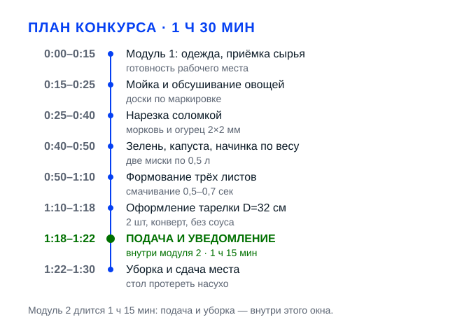
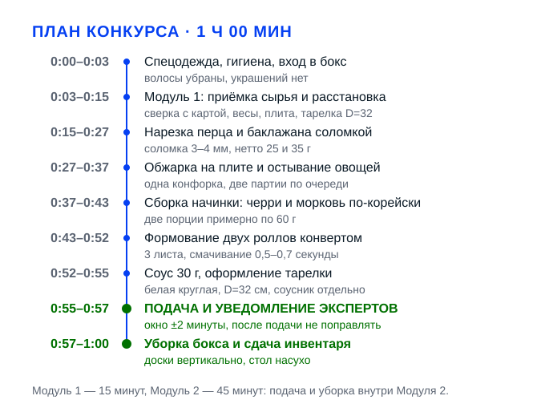
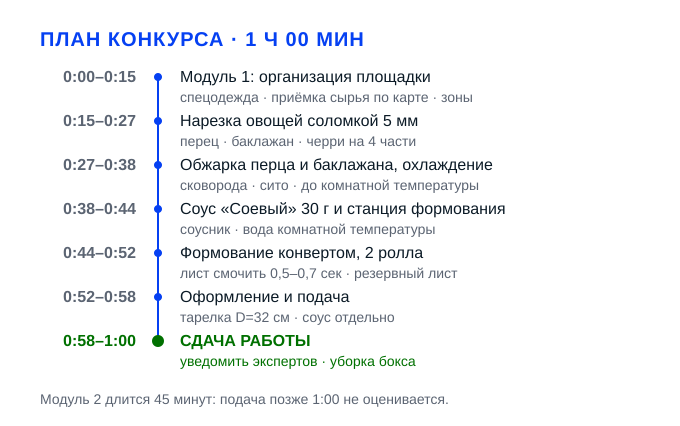

Приготовление спринг-роллов (ФВ)
Задания ниже — официальные файлы «Абилимпикс» (источник: abilympics-russia.ru), разложенные по категориям. Решения написаны по тексту задания, регламенту и критериям оценки; в них указано, что именно проверяет эксперт.
Школьник
14–16 лет, базовый уровень заданияВ официальном файле категории не разделены отдельными разделами — приводим задание целиком; различия по категориям смотрите в таблице модулей.
Пошаговое решение
Задание для школьников короткое по формулировке и требовательное по исполнению: за 1 час 30 минут нужно оформить и подать одну порцию овощного спринг-ролла. Время делится на два модуля: 15 минут на организацию рабочего места и 1 час 15 минут на приготовление и подачу. Результат задан буквально: по две штуки на порцию, прямоугольной формы, свёрнутые конвертом, на белой круглой плоской тарелке диаметром 32 сантиметра, без соуса — соус появляется только в задании студентов и специалистов. Начинка по карте состоит из моркови 60/50 грамма, огурца 60/56, мякоти авокадо 25/25, краснокочанной капусты 15/15, базилика и кинзы по 5 граммов и трёх листов рисовой бумаги. Тепловой обработки нет, поэтому всё решают чистота на рабочем месте, ровная соломка и точность движений: лист смачивают всего на 0,5–0,7 секунды, а роллов на подачу нужно два при трёх листах в запасе.

Задача 1. Организовать рабочее место за 15 минутМодуль 1 · 15 минут
Модуль 1 длится 15 минут и заканчивается результатом «готовность рабочего места». За это время нужно надеть санитарную одежду, вымыть руки, принять и проверить сырьё по технологической карте, разложить инвентарь по зонам и снять риски безопасности. Готовить в эти минуты нельзя, но и терять их нельзя: всё, что не сделано сейчас, придётся делать внутри модуля 2, где на приготовление и подачу отведено 1 час 15 минут.
Действие 1.1. Войти на площадку по санитарным правилам
Шаг 1.1.1
Надеваем полный комплект: белую куртку или фартук, колпак, закрытую обувь на нескользящей подошве. Куртку застёгиваем на все пуговицы, завязки фартука прячем сбоку, рукава подворачиваем выше локтя, волосы убираем под колпак полностью — и спереди, и на затылке. В карманах не держим ничего острого и бьющегося: инструкция по охране труда это прямо запрещает, а в боксе карман ещё и мешает наклоняться над столом. Колпак берём одноразовый, если своего нет: он держится на резинке и не сползает при наклоне над столом.
Спецодежда — первый пункт модуля 1 «Организация работы на площадке», и оценивают её не «в целом», а по конкретным признакам: чистая ли, застёгнута ли, убраны ли волосы. Формально выбившиеся волосы — нарушение санитарных требований, и оценка снижается независимо от того, как аккуратно получились роллы. Кроме того, опрятный вид с первой минуты задаёт тон: видно, что участник понимает, где он находится и зачем.
Отойдите к зеркалу или попросите волонтёра посмотреть со спины: волос не видно ни спереди, ни сзади, куртка застёгнута и не топорщится, обувь закрытая и сухая. Рукава не спускаются ниже локтя, иначе при наклоне над столом они повиснут над начинкой. Полотенце для рук висит отдельно и не касается стола.
Чаще всего колпак надевают «на макушку», оставляя затылок открытым: спереди всё нормально, а сзади волосы выбиваются. Вторая ошибка — прийти в открытой обуви или футболке, рассчитывая надеть куртку потом: минуты уйдут из модуля 1, а балл за спецодежду уже не вернуть.
Эксперт фиксирует спецодежду до старта, а дальше смотрит, остаётся ли она чистой по ходу работы: брызги моркови и зелень на груди к середине конкурса тоже считаются. Отдельно отмечает обувь: открытые сандалии в боксе недопустимы, даже если участник стоит на коврике.
Шаг 1.1.2
Моем руки с мылом до запястий не меньше двадцати секунд, не забывая большие пальцы и промежутки между пальцами, вытираем одноразовым бумажным полотенцем и выбрасываем его сразу. Перед этим снимаем часы, кольца, браслеты и длинные серьги; ногти должны быть коротко подстрижены, без лака и покрытия. Длинные волосы дополнительно закалываем под колпак — одного колпака иногда мало, и это нормально. Мыло берём из диспенсера, а не кусковое: на куске остаются бактерии и волокна, а руки после него липкие.
Личная гигиена — самый весомый пункт санитарного блока модуля 1, и логика здесь простая: на кожуре моркови и корнях кинзы остаются земля и микрофлора, а блюдо по заданию холодное, без тепловой обработки, которая бы их убила. Под украшениями загрязнения не смываются обычным мытьём, а камень из кольца может оказаться в начинке.
Руки сухие, украшений нет, ногти короткие, полотенце использованное и уже в мусоре, а не на столе. Проверить себя просто: если вы трогали кожуру авокадо или корни зелени и собираетесь брать рисовую бумагу — руки надо мыть заново. Тыльная сторона ладоней тоже сухая, между пальцами нет влаги.
Классика — протереть руки о фартук: внешне они сухие, но фартук становится переносчиком, и эксперт это видит. Вторая ошибка — помыть руки один раз на входе и считать вопрос закрытым: оценивают процесс, а не стартовое состояние. И третье: надеть перчатки на влажные руки — они не сядут по размеру и будут скользить на пальцах.
Эксперт смотрит на руки в течение всего конкурса, а не только на входе, и отдельно отмечает, моются ли руки после контакта с землёй, корнями и мусором. Если участник поправляет колпак или касается лица, эксперт ждёт, помоет ли он после этого руки.
Шаг 1.1.3
Надеваем одноразовые силиконовые перчатки нужного размера — в перечне расходных материалов их десять штук, то есть пять пар на участника, и этого хватает на смену после каждой грязной операции. Перчатки натягиваем до запястья, без складок на пальцах, и меняем после мытья овощей с землёй, после работы с мусором и перед формованием роллов. Размер подбираем по обхвату ладони: в тесной перчатке пальцы немеют к середине работы, а в свободной они проваливаются, и нож идёт с люфтом.
Перчатки нужны не для красоты, а чтобы не переносить землю с корнеплодов на готовое блюдо и не оставлять отпечатков на прозрачном рисовом листе. Пять пар в перечне — это подсказка: смена перчаток заложена в задание, и участник, который работает в одной паре от начала до конца, выглядит в глазах эксперта небрежным. Смена перчаток прописана и в инструкции по охране труда, а не только в перечне расходников.
Перчатки сидят по руке, не болтаются на пальцах, не порваны и не липнут к ножу. Проверьте перед формованием: на пальцах не должно быть кусочков зелени и капель сока, иначе они перейдут на лист и на начинку. Проверьте, что перчатка не порвана у большого пальца — там она рвётся первой.
Взять перчатки на размер больше — они скользят, нож идёт криво, а соломка получается рваной. Вторая ошибка — работать в одной паре после мытья корнеплодов: на пальцах остаётся земля, и она уходит прямо в начинку. Третья ошибка — снимать перчатки, стягивая их за пальцы: внутренняя сторона выворачивается и пачкает руку.
Эксперт отмечает смену перчаток как часть санитарного критерия и смотрит на руки в момент, когда участник переходит от мытья овощей к сборке роллов. Он смотрит и на то, снимает ли участник перчатки перед тем, как взять полотенце или телефон.
Шаг 1.1.4
Перед работой с рисовой бумагой руки должны быть сухими: вытираем их насухо и просушиваем одну-две секунды на весу, чтобы на подушечках не осталось влаги. Миску с водой ставим так, чтобы в неё не попадали брызги от раковины, а полотенце для рук держим отдельно от полотенца, которым промакиваем листы. Если лист всё же прилип к пальцам, не тянем его: поддеваем за угол и снимаем плашмя, иначе на бумаге останется вмятина, которая потом превратится в трещину.
Рисовая бумага — тонкий крахмальный лист, который липнет к мокрым пальцам и рвётся при неосторожном захвате. Если руки влажные, лист прилипает ещё до погружения в воду, и вместо ровного квадрата получается смятый комок. На три листа в перечне права на ошибку почти нет: два ролла на порцию, один лист в запасе. Три листа — это два ролла и один запас, а не три попытки.
Руки сухие, на подушечках нет блеска, полотенца разделены: одно для рук, второе для промакивания листов. Проверьте перед первым листом — это две секунды, которые экономят весь запас бумаги. Полотенце для листов лежит сухим, без пятен от сока и без волокон на поверхности.
Вытереть руки о фартук и сразу взяться за лист: влага остаётся, лист липнет и деформируется. Вторая ошибка — одно полотенце на всё: им же вытирают стол, им же промакивают лист, в результате на бумаге остаются волокна и грязь. Третья ошибка — брать лист за угол мокрыми пальцами: угол сразу размокает и отрывается.
Эксперт замечает аккуратность обращения с листом: смятый, прилипший к пальцам лист виден сразу и читается как небрежность. Если лист скомкан, эксперт обычно просит показать, как участник его смачивал, и по движению видно, где ошибка.
Действие 1.2. Принять и проверить сырьё по технологической карте
Шаг 1.2.1
Берём технологическую карту и идём по строкам сверху вниз: морковь 60 граммов брутто и 50 нетто, огурец 60 и 56, мякоть авокадо 25 и 25, краснокочанная капуста 15 и 15, базилик 5 и 5, кинза 5 и 5, рисовая бумага — 3 листа. Каждую позицию взвешиваем на настольных весах: наибольший предел взвешивания не менее 3 килограммов, наименьший — 10 граммов, поэтому тару ставим на платформу и обнуляем, а не считаем вес «на глаз».
Сверка с картой — это пункт «убедиться в наличии необходимого сырья» из алгоритма модуля 2, и делать его нужно до старта, пока недостачу ещё можно закрыть. После старта замена идёт только через главного эксперта, и только если причина уважительная. Пятнадцати минут модуля 1 хватает, чтобы спокойно пройти семь строк, но не хватает, чтобы начать готовить, а потом спохватиться.
Все семь строк отмечены карандашом, расхождения записаны: чего нет, сколько нет, в каком виде. Отдельно проверьте, что брутто и нетто сходятся с картой — если моркови меньше 60 граммов, соломки на два ролла может не хватить, и это лучше выяснить сейчас.
Начать с готовки, не сверив карту, — потом в середине работы выясняется, что нет кинзы или листов всего два, и менять план поздно. Вторая ошибка — увидеть недовес и промолчать «обойдусь»: недовес в начинке виден на разрезе ролла. Третья ошибка — не проверить, что весы стоят на нуле: тогда недовес в пять граммов просто не виден.
Эксперт наблюдает, сверяется ли участник с картой или импровизирует, и отмечает это в критерии организации работы. Отдельно он смотрит, записаны ли расхождения: устная пометка «запомнил» на конкурсе не считается.
Шаг 1.2.2
Проверяем морковь, огурец и краснокочанную капусту: морковь твёрдая, без вялых участков, ровная, чтобы соломка вышла одинаковой; огурец упругий, без мягких боков и жёлтых пятен, кожица без повреждений; капуста плотная, срез свежий, без слизи и запаха. Овощи должны быть холодными — из холодильного шкафа, а не с тёплой полки. Капусту проверяем на срезе кочерыжки: свежий срез светлый и влажный, старый — сухой и потемневший, и такой кочан внутри уже горчит.
Из вялой моркови соломка ломается и мнётся, из мягкого огурца выделяется вода, и ролл начинает течь изнутри. Спринг-ролл по этому заданию не проходит тепловую обработку, поэтому качество сырья — это и вкус, и безопасность одновременно: исправить продукт на последнем этапе уже нечем. Проверять нужно каждую позицию, а не выборочно: один испорченный огурец испортит вкус всего ролла.
Морковь хрустит при надломе, огурец не продавливается пальцем, капуста режется с усилием, а не рвётся. Сомнительный плод откладываем в сторону, а не «срезаем плохое место и пускаем остальное». Срез моркови блестящий, огурец при надломе хрустит, капуста пахнет свежим, а не квашеным.
Взять мягкий огурец «на вид нормальный»: внешне он целый, но при нарезке даёт лужу, и рисовый лист размокает изнутри. Вторая ошибка — выбросить испорченный овощ молча: его не заменят, и вы останетесь без части начинки. Третья ошибка — мыть овощи «потом, перед нарезкой»: грязь с кожуры успевает попасть на доску и нож.
Эксперт может подойти и посмотреть, как участник оценивает качество: мять, нюхать и осматривать сырьё — правильное поведение, а не суетливость. Эксперт может попросить показать, какой плод участник отложил, и послушать объяснение.
Шаг 1.2.3
Отдельно проверяем авокадо, зелень и рисовую бумагу. Авокадо должно быть спелым, но плотным: при нажатии мякоть пружинит, а не проваливается, кожица под косточкой не темнеет. Базилик и кинза — свежие, без жёлтых и почерневших листьев, стебли не вялые. Рисовую бумагу достаём из упаковки и пересчитываем: три листа, все целые, без трещин и заломов, хранить её нужно сухой, в закрытом пакете, а не на влажном столе. Авокадо проверяем и на вес: слишком лёгкий плод уже высох внутри и не даст нужных 25 граммов мякоти.
Авокадо — единственный компонент, который после нарезки быстро темнеет на воздухе, поэтому его спелость определяет и вид ролла на разрезе. Рисовая бумага — расходник, которого ровно три листа: надорванный лист означает, что на подачу останется один ролл вместо двух, а по заданию на порцию их должно быть два. Лист нельзя заменить ничем: без него ролл просто не собрать.
Авокадо режется ножом как мягкое масло, но не расползается; лист рисовой бумаги просвечивает и не имеет белых трещин по краю. Пересчитайте листы сразу и уберите их в пакет до момента работы — на открытом столе они набирают влагу. Упаковка бумаги закрыта до момента работы, листы не лежат открытыми на столе.
Взять переспелый авокадо: он превращается в пюре под ножом, и на разрезе ролла вместо ломтика видна каша. Вторая ошибка — оставить рисовую бумагу лежать на столе рядом с миской с водой: край подмокает, и лист рвётся при смачивании. Третья ошибка — хранить бумагу рядом с раковиной: от влажности она делается ломкой и трескается по краю.
Эксперт смотрит на состояние листов и на то, как участник с ними обращается до начала работы: аккуратность здесь прямо влияет на результат. Он смотрит, как участник обращается с упаковкой: рвёт ли её, высыпая листы на стол, или достаёт по одному.
Шаг 1.2.4
Если чего-то не хватает, продукт испорчен или вес не совпадает с картой, сразу подходим к главному эксперту или его заместителю — не позже чем за пятнадцать минут до старта. Говорим коротко и по делу: что именно, сколько, в чём проблема. Не «у меня всё плохо», а «кинзы пять граммов вместо десяти и один лист рисовой бумаги надорван». Если проблема мелкая — например, морковь на пять граммов легче, — достаточно сказать об этом и продолжить: главное, чтобы эксперт знал о расхождении до старта.
Позже претензию не примут: считается, что участник согласился с набором сырья. Кроме того, спокойное и точное обращение входит в оценку организации и коммуникации: эксперт видит, умеет ли участник формулировать проблему, а не паниковать. На фестивале возможностей это оценивают отдельно и доброжелательно. Обращение фиксируется в протоколе, и это защищает участника от претензий потом.
Факт обращения зафиксирован, и вы получили ответ: замену, дополнение или объяснение, почему так и должно быть. После этого возвращайтесь к своему столу и продолжайте подготовку, не обсуждая проблему с соседями. Вы вернулись к столу и точно знаете, из чего будете собирать начинку.
Тянуть до последнего, а потом просить замену за минуту до старта. Или наоборот — начать спорить и требовать, вместо того чтобы спокойно объяснить ситуацию: время модуля 1 уходит, а решение всё равно принимает главный эксперт. Третья ошибка — обсуждать недостачу с соседями по боксу: это отнимает время и ничего не решает.
Эксперт оценивает, насколько участник владеет ситуацией и умеет говорить по существу; для категории школьников это заметная часть впечатления от работы. Он отмечает и тон: спокойное обращение ценится выше громкого.
Действие 1.3. Разложить инвентарь по зонам и снять риски
Шаг 1.3.1
Берём разделочные доски из набора: полипропилен, толщина 18 миллиметров, размер 600 на 400, цвета жёлтый, синий, зелёный, красный, белый, коричневый. Для овощей ставим зелёную доску, для зелени — отдельную, чтобы земля с корней не попадала на то, что уже нарезано. Доску кладём на влажное полотенце: оно не даёт ей скользить, а сухая доска на нержавеющем столе едет под ножом. Вторую доску держим под рукой, но не на рабочей площади: две доски рядом мешают движению ножа.
Скользящая доска — это порез, а порез на конкурсе означает остановку работы и обращение в медпункт. Раздельные доски нужны из-за санитарии: на одной доске смешивать вымытую зелень и немытые корнеплоды нельзя, а на категории школьников санитарный критерий проверяют особенно внимательно. Маркировка досок по цветам — это не формальность, а способ не перепутать продукты в спешке.
Доска не двигается при нажатии ладонью, лежит ровно, без качания, поверхность чистая и сухая. Под рукой нет второй грязной доски: если зелень мыли отдельно, она и режется отдельно. Доска чистая, без остатков от прошлой работы и без запаха моющего средства.
Резать на доске, положенной прямо на мокрый стол: она скользит, нож уходит в сторону. Вторая ошибка — одна доска на всё: сначала на ней лежали немытые корнеплоды, потом нарезается зелень, и земля оказывается в блюде. Третья ошибка — вымыть доску и сразу положить под нарезку мокрой: соломка прилипает к поверхности.
Эксперт проверяет маркировку досок и устойчивость рабочего места в первые минуты модуля 1, не дожидаясь, пока участник начнёт резать. Он проверяет, есть ли под доской подкладка, и не считает это мелочью.
Шаг 1.3.2
Раскладываем ножи и миски. Поварской нож проверяем по требованиям инструкции: рукоять плотно насажена, не скользит, есть упор для пальцев, полотно гладкое, без вмятин и трещин. Миски из нержавеющей стали 25–28 сантиметров ставим справа от доски — под нарезанные овощи, две пластиковые миски объёмом 0,5 литра и диаметром 12–20 сантиметров — под зелень и под начинку по порциям. Ложку или лопатку не берём: по карте начинка раскладывается руками в перчатках.
Порядок на столе экономит движения: при нарезке соломки рука ходит по короткой дуге и не перекрещивается с другой рукой. Миски разного объёма нужны, чтобы начинка не смешивалась раньше времени: морковь, огурец и капуста лежат отдельно, зелень отдельно, и только перед формованием всё соединяется. Раздельные миски нужны ещё и потому, что капуста красит всё, что лежит рядом.
Нож лежит лезвием от себя, рукоятью к рабочей руке, на сухом месте. Миски стоят устойчиво, не на краю стола, внутри сухо. Проверьте, что ничто не свисает с края стола: задеть миску локтем — обычное дело в тесном боксе. На рукояти ножа нет следов сока и крошек, лезвие сухое.
Оставить нож на краю стола лезвием к себе или положить его в миску с водой — типичная причина пореза и одновременно нарушение требований охраны труда. Вторая ошибка — поставить все миски в один ряд перед собой: работать негде, всё опрокидывается. И третье: класть нож поперёк доски — лезвие оказывается там, где рука ищет опору.
Эксперт по технике безопасности смотрит, как лежит нож и где стоит посуда, ещё до первого разреза. Он смотрит и на то, как участник переносит нож: лезвием вниз и в стороне от корпуса, а не размахивая им у лица.
Шаг 1.3.3
Проверяем весы и воду. Весы ставим на ровную сухую поверхность, включаем, ждём нулевых показаний, ставим тару и обнуляем: предел взвешивания не менее 3 килограммов, наименьший предел — 10 граммов, поэтому кучки легче десяти граммов проверяем парами. В мерный стакан на 1 литр набираем воду для рисовой бумаги, а сито не менее 12 сантиметров используем как подставку для обсушивания зелени: просеивать в этом задании нечего, но сито в перечне есть и при деле.
Весы с обнулённой тарой дают реальный вес нетто, а не «вес с миской» — иначе вся раскладка начинки уезжает. Вода нужна комнатной температуры: в горячей воде рисовый лист размокает за доли секунды и рвётся, в ледяной остаётся жёстким и ломается при сгибе. Отдельно стоит проверить, что весы не стоят на вибрирующем столе: показания скачут, и раскладка уезжает.
Весы показывают ноль с пустой тарой, платформа не качается, дисплей читается. В стакане ровно столько воды, чтобы погрузить лист целиком, — примерно на два-три сантиметра выше дна миски. Стакан стоит устойчиво, вода не переливается через край при переносе.
Взвешивать без тары, потом вычитать вес миски в уме — почти всегда ошибка на несколько граммов. Вторая — налить в миску горячую воду «чтобы лучше размякла»: лист рвётся прямо в руках. Третья ошибка — набирать воду в ту же миску, где лежали овощи: на стенках остаётся сок, и вода мутнеет.
Эксперт смотрит на работу с весами: обнуление тары и точность раскладки входят в критерий организации и качества. Он смотрит на точность взвешивания в момент раскладки начинки, а не только на итоговый вес блюда.
Шаг 1.3.4
Ставим бак для мусора с пакетом на 60 литров так, чтобы до него было два шага и не приходилось перешагивать через него. Бумажные полотенца кладём отдельно: одно для рук, второе для промакивания листов и для стола. Проверяем стол: производственный, 1800 на 600 и высотой 850 миллиметров, должен стоять устойчиво, поверхность без трещин и заусенцев, розетка и шнур без повреждений. Плиту не включаем: по заданию школьников тепловой обработки нет, а на поверхности индукционной плиты не должно лежать ничего металлического.
Безопасность — отдельный критерий, и нарушения фиксируются сразу, а не в конце. Мусор рядом с рабочей зоной нужен, чтобы очистки не лежали на столе и не мешали формовать. Плита в перечне оборудования общая для всех категорий, но у школьников она не используется, и включать её без необходимости — лишний риск. Бак должен быть закрыт крышкой, если он стоит рядом с продуктами.
Стол не качается, поверхность сухая и чистая, шнуры не лежат в воде, на плите нет посторонних предметов, бак не переполнен. Пройдите по боксу глазами эксперта: что бы вы отметили сами? Пакет в баке закреплён по борту, не свисает на пол, и крышка открывается одной рукой без наклона.
Поставить бак в проходе или у самого стола — спотыкание и нарушение требований безопасности. Вторая ошибка — включить плиту «на всякий случай»: касание горячей поверхности рукой в перчатке ощущается не сразу. Третья ошибка — ставить на плиту миску или нож «на минутку»: индукция нагревает металл мгновенно.
Эксперт по охране труда проходит по площадке в начале модуля 1 и отмечает устойчивость стола, состояние проводки и свободные проходы. Он также проверяет, свободен ли проход между рабочими местами: по норме он от метра до полутора.
Задача 2. Подготовить начинку из овощей и зелениМодуль 2 · часть 1 ч 15 мин
Начинка для овощного спринг-ролла по карте школьников собирается из моркови, огурца, мякоти авокадо, краснокочанной капусты, базилика и кинзы. Всё это режется соломкой и укладывается в рисовый лист сырым, поэтому на этом этапе решается и вкус, и вид на разрезе, и то, не потечёт ли ролл через десять минут после подачи. Главные требования — одинаковая соломка, сухие овощи и точный вес нетто по карте.
Действие 2.1. Вымыть и обсушить овощи и зелень
Шаг 2.1.1
Морковь и огурец промываем под проточной водой, помогая себе щёткой или жёсткой стороной губки: с моркови снимаем остатки земли у основания и в углублениях, с огурца — налёт у плодоножки. Затем обсушиваем насухо бумажным полотенцем, а не оставляем сохнуть на воздухе. Морковь чистим овощечисткой тонким слоем, иначе вместе с кожурой уйдёт лишний вес и соломка получится неровной. Обсушивать удобнее в рулонном полотенце: разложить овощи, накрыть вторым слоем и прокатать ладонью.
Мытая, но мокрая морковь и огурец дают воду в начинке, а рисовая бумага не терпит влаги изнутри: лист размокает, ролл теряет форму и на разрезе выглядит помятым. Тонкая очистка нужна потому, что по карте брутто моркови 60 граммов, а нетто 50: десять граммов — это как раз кожура и кончики, и срезать больше уже нельзя, иначе не хватит на соломку для двух роллов.
Овощи на ощупь сухие, полотенце после обтирания влажное, но вода с них не капает. Морковь очищена, кончики срезаны, тёмные точки удалены. Проверьте срез: он должен блестеть, а не выглядеть сухим и пористым. На срезе моркови нет тёмных точек и позеленевших участков.
Промыть и сразу резать, не обсушивая: вода стекает в миску с начинкой, и к моменту формования на дне стоит лужа. Вторая ошибка — счистить морковь толстым слоем «чтобы было чище»: нетто падает ниже 50 граммов, и соломки на два ролла не хватает. Третья ошибка — чистить морковь ножом, срезая толстые ломти: нетто падает, а соломка выходит короткой.
Эксперт смотрит на чистоту овощей и на то, обсушивает ли участник сырьё: мокрые овощи на доске видны по блеску и каплям. Он смотрит на чистоту кожуры у основания моркови — там чаще всего остаётся земля.
Шаг 2.1.2
Авокадо моем целиком, не разрезая: на кожуре остаётся грязь, и нож, идя через кожуру, протаскивает её внутрь мякоти. Затем разрезаем плод вдоль по косточке ножом до упора, проворачиваем половинки в разные стороны, вынимаем косточку ложкой и снимаем кожицу — руками или ложкой, поддевая у основания. Мякоть оставляем целой, нарезку делаем позже, перед самой сборкой начинки. Если косточка не выходит, поддеваем её ложкой по кругу, не вырезая мякоть кусками.
Авокадо — единственный продукт в карте, у которого брутто и нетто совпадают: 25 граммов мякоти, то есть кожура и косточка в отвес не входят. Значит, работать нужно аккуратно, чтобы не потерять мякоть на срезе, и не резать плод заранее: на воздухе мякоть темнеет за пятнадцать-двадцать минут, и на разрезе ролла вместо нежного зелёного ломтика будет серое пятно.
Мякоть ровного жёлто-зелёного цвета, без тёмных волокон и коричневых точек, поверхность влажная, но не расползается под пальцем. Кожица снята полностью, косточка удалена чисто, без вырывания мякоти вокруг. На мякоти нет тёмных волокон от ножа и следов кожуры, срез ровный.
Разрезать авокадо вместе с немытой кожурой: грязь с поверхности попадает на мякоть. Вторая ошибка — нарезать авокадо в самом начале и оставить лежать на доске: к моменту формования оно потемнело и размягчилось. Третья ошибка — оставить авокадо на доске рядом с капустой: мякоть впитывает запахи и темнеет быстрее.
Эксперт проверяет цвет авокадо на разрезе готового ролла — это самый заметный признак того, соблюдалась ли последовательность работы. Он проверяет, когда именно нарезано авокадо: по цвету это видно точнее, чем по словам.
Шаг 2.1.3
Базилик и кинзу перебираем: удаляем жёлтые и почерневшие листья, жёсткие стебли и корни с землёй. Промываем в большой миске, меняя воду дважды, потому что земля и песок с корней оседают на дно, а не смываются струёй. Затем обсушиваем в сите или раскладываем на бумажном полотенце и промакиваем сверху вторым полотенцем, не прижимая сильно. Стебли удаляем полностью: они жёсткие и в холодном ролле не разжуются, а листья отделяем руками, не ножом, чтобы не окислить срез.
Зелень в карте идёт по 5 граммов базилика и 5 граммов кинзы — это всего десять граммов на два ролла, и каждая потерянная веточка заметна. Мокрая зелень, кроме воды в начинке, ещё и быстро портится: в тёплом боксе листья с каплями воды начинают вянуть и темнеть раньше времени. Вода с зелени — это ещё и лишняя влага на листе рисовой бумаги, которая мешает конверту схватиться.
Листья сухие, не слипшиеся в комок, цвет яркий, без тёмных краёв. Полотенце после промакивания влажное, но на листьях капель нет. Проверьте: положите лист на ладонь — он не должен оставлять мокрого следа. На полотенце после промакивания не остаётся зелёных пятен сока.
Сушить зелень, прижимая полотенцем изо всех сил: листья рвутся и темнеют. Вторая ошибка — не перебрать зелень и оставить жёсткие стебли: они не жуются, и в ролле попадаются грубые волокна. Третья ошибка — сушить зелень на столе без полотенца: листья прилипают к поверхности и рвутся при сборе.
Эксперт обращает внимание на цвет зелени в готовом ролле: потемневшие листья видны сразу и снижают оценку внешнего вида. Он смотрит на цвет и упругость листьев: вялая зелень в ролле читается как несвежий продукт.
Шаг 2.1.4
Краснокочанную капусту разбираем: снимаем два-три верхних листа, которые всегда грязнее и жёстче, вырезаем кочерыжку, промываем оставшиеся листья под проточной водой и обсушиваем. Нам нужно 15 граммов — примерно два-три тонких листа с середины кочана, они мягче и лучше ложатся в начинку, чем плотные наружные. Если кочан крупный, отделяем листья по одному, подрезая у основания ножом, и берём только те, что без повреждений и толстых белых прожилок.
Капуста в карте идёт 15 граммов брутто и 15 нетто, то есть отходов почти нет, и брать нужно ровно столько, сколько уйдёт в роллы: лишняя капуста останется отходом, а её сок окрасит начинку и рис. Верхние листья снимаем не из перестраховки, а потому что они жёсткие и волокнистые — в холодном ролле они ощущаются как плёнка.
Листья чистые, сухие, без слизи и тёмных пятен; на срезе цвет яркий фиолетовый, без побледневших участков. Проверьте пальцем: лист должен хрустеть, а не гнуться беззвучно. На листе нет следов земли в прожилках и слизняков — их видно на фиолетовом фоне.
Взять наружные листья, потому что они крупнее: в начинке они жёсткие и не пережёвываются. Вторая ошибка — мыть капусту после шинковки: тонкая соломка набирает воду, и обсушить её уже невозможно. Третья ошибка — брать листья с тёмными краями: после нарезки они дают горьковатый привкус.
Эксперт оценивает начинку в разрезе: яркая капуста и ровная соломка читаются как аккуратная работа, побледневшая и водянистая — как нарушение технологии. Он обращает внимание на цвет капусты в начинке: он должен остаться ярким, а не побледнеть от сока.
Действие 2.2. Нарезать овощи соломкой
Шаг 2.2.1
Морковь режем соломкой сечением примерно 2 на 2 миллиметра и длиной 6–7 сантиметров. Сначала срезаем округлые бока, чтобы получить ровный брусок, затем нарезаем пластинами по 2 миллиметра, складываем их стопкой по две-три и режем поперёк. Нож держим вертикально, режем от себя, пальцы левой руки собраны "когтем" и отводятся назад на ширину фаланги. Если морковь тонкая, сначала подрезаем её вдоль на брусок толщиной 2 сантиметра — так пластины получаются ровными, а соломка не сужается к концу.
Соломка одной толщины — это и внешний вид на разрезе, и одинаковая текстура: толстые куски хрустят отдельно от тонких, и ролл получается неоднородным. Длина 6–7 сантиметров нужна, чтобы соломка шла вдоль ролла и не выходила за торцы после подгиба краёв. Пальцы "когтем" — прямое требование инструкции по охране труда, и на школьной категории за этим следят.
Полоски одинаковой толщины на просвет, при сгибании не ломаются, но и не гнутся как верёвка. Проверьте горсть: соломинки не слипаются в комок и не выделяют сок на доске. Из 50 граммов нетто должна получиться примерно горсть, которой хватает на два ролла.
Нарезать крупно, "чтобы быстрее": толстые куски не помещаются в тонкий ролл, край не подгибается, и конверт разваливается. Вторая ошибка — резать на весу или смотреть на левую руку вместо лезвия: это прямой путь к порезу. Третья ошибка — резать морковь, держа нож под углом: пластины выходят клином, и соломка получается разной толщины.
Эксперт смотрит на положение пальцев и на однородность соломки: рваная и разной толщины нарезка — типичная потеря баллов у школьников. Он смотрит на просвет: соломка одинаковой толщины просвечивает ровно, без тёмных и светлых полос.
Шаг 2.2.2
Огурец проверяем по карте: брутто 60 граммов, нетто 56, значит срезаем только кончики, а кожуру оставляем — на неё приходится всего четыре грамма отхода. Режем соломкой 2 на 2 миллиметра той же длины, что и морковь. Если огурец крупный и семена водянистые, вырезаем семенную часть ножом и работаем с плотными стенками, но в этом случае следим, чтобы общий вес начинки не упал ниже карты. Семенную часть вырезаем клином, а не выскабливаем ложкой: ложка давит мякоть и выдавливает сок.
Кожура огурца держит форму и не даёт соломке размякнуть, поэтому чистить его не нужно и даже вредно: потеряется лишний вес, а ролл станет водянистым. Водянистые семена — главная причина, по которой спринг-ролл "течёт" через десять минут после подачи, и на разрезе это видно как мокрое пятно на рисовой бумаге. Соломка из огурца должна быть самой короткой из всех — она самая мягкая и легче ломается в конверте.
Соломка упругая, при нажатии ножом выделяет всего каплю сока. На доске нет лужи. Проверьте кончик соломинки: он должен быть срезан ровно, а не раздавлен, иначе огурец начал отдавать воду. На доске после нарезки остаётся не больше нескольких капель сока, а не лужа.
Почистить огурец по привычке: нетто падает ниже 56 граммов, а ролл всё равно получается водянистым. Вторая ошибка — оставить семена и крупно нарезать: внутри ролла образуется влажная каверна, и конверт расползается при скрутке. Третья ошибка — резать огурец заранее и держать в миске: он отдаёт сок и становится мягким.
Эксперт проверяет начинку на ощупь и на разрезе: слишком мокрая начинка — основание снизить оценку за технологию. Он может надавить на соломку пальцем в перчатке: если выступает сок, начинка считается водянистой.
Шаг 2.2.3
Мякоть авокадо режем ломтиками толщиной 4–5 миллиметров и длиной, равной соломке, то есть 6–7 сантиметров. Режем на доске мягким движением, без нажима, ножом с тонким лезвием, и делаем это последним из овощей — за десять-пятнадцать минут до формования, когда морковь, огурец и капуста уже нарезаны и разложены. Нож при нарезке авокадо ведём не сверху вниз, а лёгким протяжным движением от себя: так мякоть не прилипает к лезвию и не рвётся.
Ломтик, а не кубик: авокадо в ролле должно читаться слоем, иначе оно превращается в пасту и окрашивает соседние овощи. Толщина 4–5 миллиметров — компромисс между выразительным слоем и способностью согнуться в конверте без разлома. Нарезка последней — единственный способ не дать мякоти потемнеть к моменту подачи.
Ломтики держат форму, не разваливаются в руке, цвет ровный, без серых участков. Проверьте один ломтик на сгиб: он должен гнуться, а не ломаться, и не оставлять пятен на доске. Ломтик не прилипает к доске и снимается одним движением ножа.
Нарезать авокадо мелким кубиком: в ролле оно превращается в кашу и вытекает при скрутке. Вторая ошибка — нарезать авокадо первым и оставить на доске до конца подготовки: к моменту сборки половина ломтиков уже потемнела. Третья ошибка — резать авокадо тупым ножом: мякоть давится, и на срезе остаются тёмные полосы.
Эксперт смотрит на срез готового ролла: ровный слой авокадо без потемнений — признак правильной последовательности, пятна и каша — наоборот. Он смотрит на срез авокадо в готовом ролле: ровный ломтик виден как отдельный слой.
Шаг 2.2.4
Капусту шинкуем тонко, полосками 1–2 миллиметра: складываем лист, подрезаем у кочерыжки и режем поперёк волокон короткими движениями. Длина полоски — не больше 5 сантиметров, чтобы она не торчала из торцов ролла. Режем ровно 15 граммов, остальное сразу убираем в контейнер, а не оставляем лежать на доске. Нож держим почти вертикально, а лист продвигаем под лезвие левой рукой: тогда полоски выходят ровными, без смятых краёв.
Тонкая шинковка нужна потому, что капуста в холодном ролле не размягчается: толстые полоски будут хрустеть грубо и перебивать нежное авокадо. Короткая длина — чтобы волокна не выходили за конверт и не рвали лист при подгибе краёв. Ровно 15 граммов — потому что капуста даёт сок и краситель, и её избыток делает начинку мокрой, а рис — фиолетовым с одной стороны.
Полоски тонкие, просвечивают на свету, не слиплись в комок, на пальцах не остаётся яркого сока. Отвес совпадает с картой — 15 граммов. Проверьте, что на доске нет лишней нашинкованной капусты "про запас". Полоски не слипаются и не образуют комков, цвет ровный по всей массе.
Нашинковать крупно и с запасом: лишняя капуста отдаёт сок в начинку и окрашивает рис, а ролл получается рыхлым. Вторая ошибка — шинковать на той же доске, где лежала морковь, без промежуточного мытья: цвета смешиваются, и начинка выглядит неопрятно. И третье: шинковать капусту на доске с остатками сока от моркови — цвета смешиваются.
Эксперт оценивает начинку на разрезе: тонкая ровная капуста читается как аккуратность, крупные ломти — как спешка. Он смотрит на срез ролла: тонкая капуста лежит волокнами вдоль, а не торчит во все стороны.
Действие 2.3. Собрать начинку по весу и уложить на хранение
Шаг 2.3.1
Зелень рубим мелко, но не в пюре: базилик и кинзу режем полосками 2–3 миллиметра поперёк листа. Взвешиваем с оговоркой: наименьший предел взвешивания весов — 10 граммов, а по карте нужно 5 граммов базилика и 5 граммов кинзы, поэтому кладём оба вида в одну тару, получаем ровно 10 граммов и делим эту горсть пополам — одна половина на первый ролл, вторая на второй. Рубим зелень на отдельной доске и сразу перекладываем в миску, не оставляя на доске: на воздухе срез темнеет за несколько минут.
Карта требует по 5 граммов каждой травы, и на глаз такая горсть не отмеривается: можно положить вдвое больше, и тогда зелень перебьёт вкус авокадо и огурца. Взвешивание парой обходит ограничение весов по наименьшему пределу и даёт точность, которую эксперт проверяет по общему весу и по вкусу. Без зелени ролл тоже не годится: по карте она входит в рецептуру, и её отсутствие заметно.
На весах ровно 10 граммов, горсть разделена на две равные части, листья не превратились в кашу от ножа. Проверьте, что стебли удалены: жёсткие волокна в ролле чувствуются как щепки. Зелень не слиплась в комок, не пустила сок на дно миски, стебли удалены полностью.
Ссыпать зелень "щепоткой" и не взвешивать: пять граммов на глаз почти всегда оказываются десятью, и ролл получается горьковатым от кинзы. Вторая ошибка — порубить зелень слишком мелко, до состояния пасты: она отдаёт сок и красит соседние овощи. Третья ошибка — рубить зелень вместе со стеблями: они не разжуются и испортят текстуру.
Эксперт может взвесить начинку после подачи: расхождение с картой в два раза фиксируется как нарушение рецептуры. Он сверяет общий вес начинки с картой: сумма по пяти позициям должна давать около 156 граммов на два ролла.
Шаг 2.3.2
Делим начинку на две равные порции под два ролла: на каждый — примерно 25 граммов моркови, 28 граммов огурца, 12–13 граммов авокадо, 7–8 граммов капусты и половина зелени. Раскладываем по двум пластиковым мискам объёмом 0,5 литра, каждую взвешиваем с обнулённой тарой и сравниваем: расхождение между мисками больше двух граммов — перекладываем соломку из тяжёлой в лёгкую. Миски подписывать не нужно, но ставить их надо в порядке формования: та, что ближе к доске, идёт первой.
Два ролла на порцию по заданию должны быть одинаковыми, и начинается эта одинаковость с веса начинки: разница в пять граммов даёт разную толщину и разный диаметр, что сразу видно на тарелке. Заранее разложенные порции экономят время на формовании: не нужно отвлекаться и отсчитывать соломку мокрыми руками, пока лист уже намок.
Вес мисок отличается не больше чем на два грамма, в каждой лежит весь набор из пяти компонентов, авокадо добавлено последним. Проверьте на глаз: горки в мисках одинаковой высоты. В каждой миске видны все пять компонентов, авокадо лежит сверху отдельным слоем.
Собирать начинку прямо на листе, отсчитывая соломку по ходу: руки заняты, лист мокнет, и второй ролл неизбежно получается толще первого. Вторая ошибка — положить авокадо в миски заранее, вместе с остальными овощами: оно потемнеет и разомлеет. Третья ошибка — делить начинку на глаз: второй ролл получается заметно тоньше первого.
Эксперт сравнивает два ролла на тарелке: одинаковый размер и одинаковый разрез — это прямое следствие того, как разложена начинка. Он может взвесить оба ролла: разница в весе больше десяти граммов говорит о неравномерной раскладке.
Шаг 2.3.3
Внутри каждой миски начинку не перемешиваем в кашу, а собираем пучком: соломку моркови и огурца укладываем параллельно, капусту и зелень — сверху, авокадо — отдельным слоем сбоку. При формовании удобно брать начинку двумя руками и переносить на лист, сохраняя направление волокон. Перемешанная начинка ляжет комком, и ролл выйдет неровным. При переносе на лист начинку берём обеими руками, поддерживая снизу, и укладываем одним движением, а не подсыпаем по частям.
Параллельная укладка даёт ровный срез: на разрезе видно слои, а не мешанину. Кроме того, направленная соломка не прокалывает рисовый лист при скрутке — острые концы в беспорядочной массе рвут бумагу изнутри, и это самая частая причина брака. Отдельный слой авокадо нужен, чтобы оно не размялось под весом остальных овощей.
В миске начинка лежит слоями, волокна направлены в одну сторону, авокадо не раздавлено. Возьмите горсть рукой — она должна держаться вместе, а не рассыпаться по пальцам. При наклоне миски начинка не рассыпается, а съезжает единым блоком, сохраняя направление волокон.
Перемешать всё ложкой "для равномерности": авокадо превращается в пасту, окрашивает огурец и капусту, а срез выглядит как каша. Вторая ошибка — уложить авокадо в самый низ: под тяжестью овощей оно расплющивается. Третья ошибка — укладывать начинку в миску в несколько слоёв, пересыпая каждый солью: сок выступает сразу.
Эксперт оценивает срез: читаемые слои и ровные волокна — признак профессиональной работы, даже на школьной категории. Он смотрит на срез: параллельные волокна моркови и огурца видны как ровные полосы.
Шаг 2.3.4
До формования миски с начинкой держим в холодильном шкафу, накрытыми полотенцем или крышкой, но не дольше двадцати-тридцати минут: овощи нарезаны, и на воздухе они теряют упругость. Миску с авокадо ставим последней, ближе к моменту сборки. Перед формованием достаём по одной порции, а не обе сразу. Если до формования остаётся больше получаса, начинку лучше вообще не резать: нарезанные овощи в холодильнике всё равно теряют упругость.
Холодная начинка держит форму лучше и не отдаёт сок, пока лист смачивается. Ограничение по времени важно потому, что нарезанный огурец через полчаса уже плавает в собственном соку, а авокадо темнеет. Доставать по одной порции нужно, чтобы вторая миска не грелась на столе, пока вы работаете с первым листом. Холодильный шкаф в перечне оборудования есть, и используют его именно для этого.
Начинка холодная на ощупь, на дне миски нет лужи, авокадо сохранило цвет. Проверьте перед первым листом: если в миске уже стоит сок, слейте его, а не взбалтывайте вместе с овощами. Миска накрыта, стоит на средней полке, а не у дверцы, где температура скачет.
Оставить миски на столе на всё время подготовки: овощи греются, огурец даёт сок, авокадо темнеет. Вторая ошибка — накрыть миску мокрым полотенцем: конденсат капает прямо в начинку. Третья ошибка — ставить миску с начинкой в морозильную камеру «чтобы быстрее»: овощи теряют структуру и дают воду после возврата в тепло.
Эксперт обращает внимание на то, как организовано хранение начинки: это часть критерия санитарии и организации рабочего места. Он может заглянуть в холодильник: накрытая миска с ровными слоями читается как порядок в работе.
Задача 3. Сформовать роллы прямоугольной формы конвертомМодуль 2 · основная операция
Результат модуля 2 сформулирован в задании буквально: по две штуки на порцию, прямоугольной формы, свёрнутые конвертом. Именно здесь теряется больше всего баллов: лист рвётся от долгого смачивания, начинка выходит за торцы, ролл получается круглым или разного размера. Работаем быстро и одинаково: три листа, два ролла на подачу, один в запасе.
Действие 3.1. Подготовить станцию для формования
Шаг 3.1.1
Наливаем воду в миску из нержавеющей стали диаметром 25–28 сантиметров — такую, чтобы рисовый лист ложился в неё целиком и не сгибался. Воды на 2–3 сантиметра выше дна, температура комнатная, примерно 20–25 градусов: проверяем запястьем — вода не должна ощущаться ни тёплой, ни ледяной. Набираем мерным стаканом на 1 литр, чтобы не плескать из-под крана. Миску ставим на нескользящую подкладку или влажное полотенце: при погружении листа она не должна ездить по столу.
В горячей воде крахмальный лист размокает за те же полсекунды до состояния салфетки и рвётся при подъёме, в холодной остаётся жёстким и ломается на сгибе. Комнатная температура — единственный режим, при котором лист успевает стать пластичным, но сохраняет прочность. Глубина в 2–3 сантиметра позволяет погрузить лист плашмя, не подворачивая края и не образуя складок.
В миске воды по уровню примерно на два пальца, лист ложится в неё целиком, края не задевают борта. Проверьте температуру тыльной стороной запястья — она не должна быть горячей. Поверхность воды спокойная, без пузырей и пены от моющего средства.
Налить кипяток "чтобы размягчить быстрее": лист мгновенно превращается в слипшийся комок, и восстановить его нельзя. Вторая ошибка — налить слишком много воды: лист всплывает, погружается неровно, и часть его остаётся сухой. Третья ошибка — налить воду в ту же миску, где лежали овощи: на стенках остаётся сок, вода мутнеет и пачкает лист.
Эксперт может проверить воду рукой или термометром: слишком горячая вода — частая причина безвозвратно испорченного листа на школьной категории. Он проверяет воду до начала формования: мутная или горячая вода видна сразу.
Шаг 3.1.2
На стол кладём доску, а под неё — влажное бумажное полотенце, сложенное в два раза: доска не должна ездить под руками, когда вы растягиваете лист. Рядом, справа, кладём сухое полотенце для промакивания листа и рук. Не соединяйте эти два полотенца: мокрое под доской и сухое для работы — разные вещи, и путать их нельзя. Полотенце под доску складываем в два слоя и смачиваем, но не мочим: лишняя вода вытечёт на стол и попадёт под край листа.
Лист смачивается за 0,5–0,7 секунды, и сразу после этого его нужно перенести на доску — руки заняты, доска должна стоять неподвижно, иначе лист сдвигается и складка закладывается ещё до начинки. Сухое полотенце нужно, чтобы промокнуть лист и убрать лишнюю воду: слишком мокрый лист не склеивается при скрутке, а слишком сухой ломается.
Доска не сдвигается при нажатии ладонью, полотенце под ней влажное, но вода не течёт по столу. Сухое полотенце лежит отдельно и остаётся сухим. Проверьте: между миской и доской не должно быть лужи. Сухое полотенце остаётся сухим: на него не попали капли с листа.
Положить доску прямо на сухой стол: она скользит, и лист вместе с начинкой съезжает. Вторая ошибка — промакивать лист тем же полотенцем, которым вытирали руки: на лист переходят волокна и грязь. И третье: промакивать лист, не разложив его ровно, — на сгибе остаётся полоса воды, и рвётся он именно там.
Эксперт смотрит на устойчивость доски и на порядок на станции: это видно за секунду и говорит об организации работы больше, чем слова. Он смотрит, есть ли под доской подкладка: скользящая доска — частая причина испорченного листа.
Шаг 3.1.3
Раскладываем станцию в одну линию слева направо: миска с водой, доска, миска с начинкой, тарелка для готовых роллов. Всё должно находиться в пределах вытянутой руки, без перекрёстных движений и без необходимости тянуться. Готовые роллы не кладём друг на друга: между ними оставляем место или прокладываем полотенцем. Слева от миски с водой оставляем свободное место под мокрое полотенце и под третью, страховочную полосу доски: искать их в середине работы — потеря времени.
Каждая лишняя перестановка рук — это секунды, а время модуля 2 ограничено 1 часом 15 минут, и на три листа уходит больше, чем кажется. Перекрёстные движения опасны ещё и тем, что мокрая рука проходит над начинкой и капает в неё. Роллы, сложенные друг на друга, слипаются, и потом их невозможно разнять, не порвав лист. Лишние предметы на станции — это лишние движения, а их в модуле и без того много.
Все четыре предмета в одной линии, ничего не стоит за спиной и не свисает с края. Проверьте, что миска с начинкой не находится над доской: капли с руки не должны попадать в овощи. Между миской и доской не стоит ничего лишнего: ни контейнеров, ни полотенец для рук.
Поставить начинку слева, а воду справа: тогда мокрой рукой приходится тянуться через всю станцию. Вторая ошибка — складывать готовые роллы стопкой "чтобы не занимали место": они слипаются за минуту. Третья ошибка — поставить миску с водой за доской: тянуться через лист, который уже лежит на начинке, невозможно.
Эксперт оценивает эргономику рабочего места в критерии организации: лишние перемещения по боксу считаются потерей времени и снижают оценку. Он оценивает станцию в момент первого листа: порядок виден по тому, куда участник тянется.
Шаг 3.1.4
Проверяем свет и позу: рабочая поверхность должна быть освещена так, чтобы рисовый лист просвечивал и было видно трещины. Встаём прямо перед доской, не наклоняясь низко и не отставляя локоть в сторону; ноги на ширине плеч, обувь на нескользящей подошве. Перчатки к этому моменту должны быть свежими и сухими. Если свет падает сбоку и даёт тень на доску, поворачиваем доску, а не наклоняемся: наклон меняет угол зрения и мешает видеть трещины.
Рисовая бумага прозрачная и тонкая: при слабом свете трещина на краю не видна, и лист рвётся уже на начинке. Наклон над столом на десять-пятнадцать минут даёт боль в пояснице и дрожь в руках — а именно точность движений и решает исход формования. Свежие перчатки нужны, чтобы на листе не оставалось отпечатков и сока от предыдущих операций.
Тени на доске нет, лист просвечивает, трещины видны. Стоя прямо, вы дотягиваетесь до миски и до тарелки, не переступая. Руки сухие и чистые. На листе видны все трещины и неровности края, руки свободно двигаются над доской.
Работать в полутьме у дальнего края стола: трещины не видны, а ролл формуется вслепую. Вторая ошибка — работать в грязных перчатках, оставшихся после нарезки капусты: на листе остаются фиолетовые отпечатки. Третья ошибка — работать, отставив локоть: плечо устаёт, и к третьему листу движения становятся неточными.
Эксперт смотрит на позу и на чистоту рук в момент формования: это самый показательный момент работы. Он смотрит на позу и на расстояние от глаз до доски: слишком близко — признак напряжения, слишком далеко — небрежности.
Действие 3.2. Смочить лист и выложить начинку
Шаг 3.2.1
Берём лист рисовой бумаги за противоположные углы и опускаем плашмя в воду, полностью погружая на 0,5–0,7 секунды — это ровно один счёт "раз-и", не больше. Сразу вынимаем и кладём на доску, даём стечь 2–3 секунды и промакиваем сухим полотенцем сверху, не прижимая. Лист должен стать гибким, но не превратиться в мокрую салфетку. Погружаем именно плашмя, а не боком: при погружении углом лист складывается пополам, и в месте сгиба остаётся сухая полоса, которая потом ломается.
Пять-семь десятых секунды — цифра из технологической карты, и она не случайна: за меньшее время лист остаётся жёстким и ломается на сгибе, за большее — набирает столько воды, что начинает рваться и не склеивается. Промокание нужно, чтобы убрать поверхностную воду: именно она мешает конверту схватиться и делает поверхность ролла липкой и мутной.
Лист гибкий, но держит форму квадрата, не просвечивает насквозь и не липнет к пальцам. На поверхности нет луж, край не завёрнут. Проверьте угол: он должен гнуться, а не ломаться с хрустом. Лист не прилипает к доске, не тянется за рукой при переносе и не оставляет крахмального следа на пальцах.
Подержать лист в воде "пока не станет совсем мягким": через две секунды он рвётся при подъёме, и лист приходится выбрасывать, а их всего три. Вторая ошибка — вообще не промакивать: вода стекает на начинку, и конверт расползается. Третья ошибка — считать «до пяти»: за это время лист успевает набрать воду и рвётся при подъёме.
Эксперт может засечь время погружения: это одна из немногих операций, где в карте прямо указан интервал, и отклонение видно невооружённым глазом. Он обращает внимание и на то, промакивает ли участник лист: мокрый лист виден по блеску.
Шаг 3.2.2
Кладём лист на доску швом от себя, чтобы квадрат лежал ровно. Начинку выкладываем в нижнюю треть листа, отступив от нижнего края 3–4 сантиметра: сначала соломку моркови и огурца вдоль листа, сверху капусту и зелень, сбоку — ломтики авокадо. Полоса начинки должна быть шириной 6–7 сантиметров и не доходить до боковых краёв на 3 сантиметра с каждой стороны. Раскладываем начинку так, чтобы её высота была одинаковой по всей длине: бугор в середине при скрутке даст утолщение и перекос.
Отступы — это те самые клапаны, которыми потом закрывается конверт: если начинка ляжет к краю, подгибать будет нечего, и ролл раскроется при скрутке. Ширина полосы 6–7 сантиметров задаёт пропорцию будущего прямоугольника: слишком узкая полоса даёт "сигару", слишком широкая — ролл, который не закрывается. Начинка вдоль листа даёт тот самый ровный срез, на который смотрит эксперт.
Начинка лежит полосой по центру нижней трети, отступы со всех сторон примерно одинаковые, ни один кусочек не выходит за намеченную полосу. Проверьте вес: вся порция из миски должна уйти на лист, без остатка. Полоса начинки ровная по высоте, без бугров и провалов посередине.
Выложить начинку по всей площади листа "чтобы больше влезло": края подгибать нечем, конверт раскрывается. Вторая ошибка — положить начинку слишком близко к нижнему краю: при подгибе она выдавливается наружу, и лист рвётся. Третья ошибка — выкладывать начинку горкой в центре: конверт получается бочкообразным и не держит прямоугольник.
Эксперт смотрит на раскладку до скрутки: ровные отступы — признак того, что участник понимает геометрию конверта, а не действует наугад. Он смотрит на отступы до скрутки: ровные клапаны — залог закрытого конверта.
Шаг 3.2.3
Подгибаем нижний край листа на начинку, прижимая его ладонями по всей ширине, затем загибаем боковые края внутрь под прямым углом, к центру, и слегка прижимаем — получается конверт с открытой верхней частью. Движения делаем от центра к краям, чтобы не растянуть лист и не выдавить начинку в стороны. Прижимаем ладонью, а не пальцами: пальцы продавливают лист точечно, и в этих местах остаются вмятины, которые рвутся при скрутке.
Порядок подгиба — сначала нижний край, потом боковые — единственный, при котором начинка оказывается заперта в кармане и не выходит через торцы. Прижимать нужно по всей ширине: точечное нажатие оставляет воздух под листом, и при скрутке образуется пузырь. Движения от центра к краям не дают листу растянуться, а растянутый лист потом не совпадает по длине с начинкой.
Края загнуты ровно, углы боковых клапанов встретились примерно на середине, начинка не торчит из-под листа. Проверьте ладонью: под листом нет бугров и воздушных карманов. Углы боковых клапанов симметричны, линия нижнего сгиба прямая.
Загнуть сначала боковые края, а потом нижний: начинка выдавливается вперёд, и конверт получается перекошенным. Вторая ошибка — прижимать ногтем или ребром ладони: лист рвётся по линии сгиба. Третья ошибка — подгибать края, когда лист уже подсох: через полминуты он становится ломким, и сгиб трескается.
Эксперт следит за последовательностью подгиба: именно она отличает конверт от просто скрученного ролла, а форма конвертом указана в задании прямо. Он смотрит на геометрию заготовки: перекошенный конверт виден ещё до скрутки.
Шаг 3.2.4
После подгиба проверяем натяжение: лист должен облегать начинку, но не быть растянутым до просветов. Если на сгибе появилась трещина или выступил сок, останавливаемся и оцениваем, можно ли спасти — иногда достаточно подложить небольшой кусочек листа из третьего, страховочного. Если лист разошёлся по шву шире сантиметра, ролл переделываем сразу, не дожидаясь скрутки. Если трещина пошла по линии сгиба, лучше сразу начать заново на третьем листе: заклеить её нечем, а крахмал уже отдал воду.
Треснувший лист при скрутке разойдётся окончательно, и на тарелке окажется ролл с разъехавшейся начинкой — это прямой минус за вид и за технологию. Третий лист в перечне существует именно для такой ситуации: два ролла на подачу плюс один запасной, и тратить его нужно на спасение, а не на эксперименты. Раннее решение переделать экономит время: на готовом ролле исправлять уже нечего.
Лист целый, без просветов, начинка не видна через бумагу, сок не выступил. Нажмите ладонью на заготовку: она должна пружинить, а не расползаться. Если трещина есть — она должна быть короче сантиметра и не на линии будущего сгиба. На просвет через лист не видно ярких пятен сока.
Продолжать скрутку с треснувшим листом "авось схватится": не схватится, крахмал уже отдал воду. Вторая ошибка — потратить третий лист на второй ролл заранее, "чтобы было ровнее", и остаться без запаса. Третья ошибка — пытаться разгладить трещину пальцем: лист растягивается и рвётся ещё сильнее.
Эксперт замечает, как участник реагирует на дефект: спокойная переделка читается как контроль качества, а скрутка "как есть" — как спешка. Он смотрит, сколько листов ушло: три листа на два ролла — норма, четыре и больше — сигнал о проблемах с техникой.
Действие 3.3. Свернуть конвертом и проверить форму
Шаг 3.3.1
Скручиваем от себя: пальцы обеих рук придерживают боковые клапаны, большие пальцы подталкивают нижний край, а ладони подворачивают ролл вперёд, к дальнему краю доски. Движение одно, без остановок: остановка на середине оставляет воздух и складку. Докрутив до конца, прижимаем свободный край к корпусу ролла — он приклеится сам за счёт крахмала. Давление распределяем по всей ширине ладоней: сильнее у торцов, слабее в середине.
Плавное непрерывное движение — единственный способ получить ровный цилиндр прямоугольного сечения: если тянуть рывками, лист собирается в складки, и ролл получается бочкообразным. Придерживание клапанов пальцами не даёт начинке выйти через торцы — а именно торцы чаще всего расходятся у школьников. Приклеивание свободного края без нажима сохраняет тонкую бумагу целой.
Ролл ровный по всей длине, без складок и перекосов, шов закрыт, начинка не видна через лист. Проведите ладонью вдоль ролла: поверхность должна быть гладкой, без бугров от соломки. Ролл не разъезжается в руках, начинка не показывается из-под листа, шов держится без прижима.
Тянуть ролл к себе резко: начинка сдвигается к одному торцу, и ролл получается толстым с одной стороны. Вторая ошибка — прижимать свободный край с силой: лист рвётся, и шов раскрывается при переносе на тарелку. Третья ошибка — скручивать на весу: ролл провисает, лист растягивается и рвётся у торцов.
Эксперт наблюдает за самим движением скрутки: оно либо одно и уверенное, либо разбито на пять попыток с перекосом. Он смотрит на руки: придерживают ли они торцы или ролл катится свободно.
Шаг 3.3.2
Уплотняем: кладём ролл швом вниз, накрываем ладонью и слегка прокатываем вперёд-назад, подтягивая торцы внутрь пальцами. Внутри не должно остаться воздуха. Затем проверяем торцы: если начинка выступает, аккуратно подталкиваем её обратно пальцем и подворачиваем край листа, а не отрезаем — отрезанный торец виден на разрезе и выглядит как брак. Если на поверхности остались складки, прокатываем ещё раз, но без нажима: складка, заглаженная силой, превращается в трещину.
Воздух внутри — главная причина, по которой ролл "вздувается" и разъезжается через несколько минут: он расширяется и раздвигает витки. Уплотнение прокаткой работает мягче, чем сжатие пальцами, и не рвёт лист. Торцы, подвёрнутые внутрь, дают ровный прямоугольник с закрытыми концами — этого требует форма конвертом. Плотный ролл режется ножом ровно и не разваливается на тарелке.
Ролл на ощупь плотный, как небольшой брусок, при прокатке не хрустит и не продавливается. Торцы закрыты, начинка не выступает. Положите ролл на доску: он лежит устойчиво и не качается. При лёгком сжатии ролл не пружинит пустотой и не хрустит листом.
Прижимать ролл ладонью изо всех сил: лист лопается, и начинка выходит наружу. Вторая ошибка — обрезать выступающую начинку ножом: торец становится открытым, и ролл течёт на тарелку. Третья ошибка — уплотнять, положив ролл на край доски: он прогибается и деформируется в овал.
Эксперт проверяет плотность нажатием: ролл, который проминается как мягкий валик, получает замечание за недостаточное уплотнение. Он смотрит на торцы: закрытые и подвёрнутые внутрь читаются как аккуратность.
Шаг 3.3.3
Проверяем форму по требованиям задания: ролл должен быть прямоугольным, то есть длина заметно больше ширины, углы читаются, а не сглажены в овал. Кладём оба ролла рядом и сравниваем: длина, ширина и высота должны совпадать, расхождение больше половины сантиметра видно на тарелке. Шов у обоих — снизу. Если второй ролл вышел толще или короче, выравниваем его лёгким подкатыванием, пока лист ещё пластичный, а не через десять минут.
В задании форма задана двумя словами — прямоугольная и конвертом, и эксперт сверяет именно эти два признака. Одинаковость двух роллов оценивается как аккуратность порции: разные по размеру роллы на одной тарелке читаются как небрежность, даже если каждый по отдельности хорош. Подкатывать нужно сразу, пока крахмал влажный: через пару минут лист схватится, и любое движение его порвёт.
Оба ролла лежат прямоугольниками, швом вниз, разница в размерах не больше половины сантиметра, торцы закрыты. Посмотрите на них сверху: они должны выглядеть как две одинаковые коробочки, а не как две сигары разной длины. Оба ролла лежат устойчиво, не заваливаются на бок и не раскатываются.
Оставить роллы круглыми, "как получилось": форма конвертом — прямое требование задания, и отклонение фиксируется. Вторая ошибка — выравнивать форму через пять-десять минут: лист уже схватился, и подкатывание рвёт его по шву. Третья ошибка — оставить один ролл круглым, а второй прямоугольным: на тарелке это выглядит как разные блюда.
Эксперт выкладывает оба ролла рядом на тарелке и сравнивает: это делается в момент подачи, но выводы делает по тому, что видит. Он проверяет форму рукой и на глаз: прямоугольник с читаемыми углами — это то, что требует задание.
Задача 4. Оформить тарелку, подать и сдать рабочее местоМодуль 2 · подача и завершение
Подача по заданию школьников простая и строгая: две штуки на порцию, прямоугольной формы, конвертом, на белой круглой плоской тарелке диаметром 32 сантиметра. Соус школьникам не предусмотрен — он появляется только в задании студентов и специалистов. Значит, вся оценка внешнего вида держится на чистоте края, одинаковости роллов и отсутствии лишнего на тарелке, а завершается модуль уведомлением эксперта и уборкой рабочего места.
Действие 4.1. Оформить тарелку
Шаг 4.1.1
Берём тарелку из перечня: круглая, белая, плоская, диаметром от 30 до 32 сантиметров, без декора и с ровными полями — по заданию нужна тарелка D=32 см. Протираем её насухо с двух сторон, проверяем на просвет: разводов, капель и отпечатков быть не должно. Держим тарелку за бортик снизу, а не за поля, на которые потом лягут роллы. Если на тарелке остался след от пальца, протираем ещё раз и держим её только за нижний бортик до самой подачи.
Белая тарелка без декора — это фон, на котором видно всё: и цвет начинки, и чистоту края, и ровность формы. Диаметр 32 сантиметра кажется большим для двух роллов, но именно он задан в задании, и на большой тарелке маленькая порция читается аккуратной композицией, а не потерянной. Разводы на белом фарфоре заметны сильнее, чем на любой цветной посуде.
Тарелка сухая, без разводов и ворса от полотенца, поля чистые. Поставьте её на стол и посмотрите под углом к свету: на белом видно даже слабый след пальца. На просвет на белом не видно разводов, ворса и капель воды.
Вытереть тарелку рукой или тем же полотенцем, которым промокали листы: остаются разводы и волокна. Вторая ошибка — греть тарелку на плите: блюдо холодное, а тёплая тарелка даёт конденсат под роллами. Третья ошибка — вытирать тарелку кухонным полотенцем, которым вытирали руки: остаются волокна и жирные следы.
Эксперт осматривает тарелку до выкладки: чистота посуды — часть санитарного критерия и первое, что видно на подаче. Он поднимает тарелку и смотрит на дно: там чаще всего остаются капли от стола.
Шаг 4.1.2
Выкладываем два ролла швом вниз, параллельно друг другу, ближе к центру тарелки, с небольшим смещением по вертикали — так композиция читается и не выглядит случайной. Расстояние между роллами — около двух сантиметров, чтобы они не касались и не слипались. Поля тарелки остаются свободными: от роллов до края не меньше трёх-четырёх сантиметров. Если роллы разной длины, кладём их так, чтобы разница читалась как задумка: одинаковый отступ от края важнее идеального совпадения размеров.
Шов вниз — потому что он самый уязвимый: сверху он размокнет от сока и разойдётся. Параллельная укладка и одинаковый интервал дают ту самую аккуратность, которую оценивают в подаче: два одинаковых предмета, симметрично расположенных, читаются как продуманная работа. Свободные поля нужны и эстетически, и практично: до края не дотрагиваются при переносе тарелки.
Роллы не касаются друг друга, швы внизу, расстояние до края одинаковое с обеих сторон. Посмотрите на тарелку сверху и на уровне стола: композиция должна читаться без объяснений. Между роллами остаётся просвет около двух сантиметров, швы обращены вниз.
Положить роллы вплотную друг к другу: они слипаются и разъезжаются при переносе. Вторая ошибка — сдвинуть порцию к краю, оставив половину тарелки пустой: композиция выглядит смещённой. Третья ошибка — выкладывать роллы крест-накрест: композиция теряет читаемость, а форма перестаёт читаться.
Эксперт оценивает подачу целиком, с расстояния: расположение двух роллов на белой тарелке — первое, что он видит. Он смотрит на тарелку с расстояния вытянутой руки: композиция должна читаться сразу.
Шаг 4.1.3
Протираем край тарелки насухо и убираем всё лишнее. По заданию школьников соус не предусмотрен — ни в соуснике, ни под роллами, ни полоской на тарелке. Остатки зелени, обрезки соломки и "декоративную" веточку тоже не выкладываем: технологическая карта включает зелень только внутрь ролла, а лишнее на тарелке читается как нарушение рецептуры. Если сок всё же выступил на тарелку, убираем его сухим уголком полотенца, не сдвигая роллы.
Край тарелки — это то место, где видны все следы работы: капля сока, отпечаток пальца, крошка от листа. Убрать их нужно до подачи, потому что после выкладки любое движение рядом с роллами рискует их сдвинуть. Соус школьникам не положен, и добавленный "для красоты" соус — это отклонение от задания, а не улучшение подачи.
Край чистый и сухой по всему диаметру, на тарелке только два ролла, никаких соусников и веточек рядом. Проведите пальцем по краю с внутренней стороны: на подушечке не должно остаться следа. Под роллами нет лужицы сока, лист не блестит от влаги, поля чистые.
Поставить соусник "как у взрослых": задание школьников соуса не содержит, и лишний элемент снимает баллы за соответствие заданию. Вторая ошибка — украсить тарелку остатками зелени: они не входят в отвес и выглядят как отходы на подаче. Третья ошибка — положить рядом веточку зелени «для вида»: она не входит в карту и считается лишним элементом.
Эксперт сверяет поданное блюдо с заданием: наличие лишних элементов фиксируется как несоответствие, даже если выглядит красиво. Он сверяет состав на тарелке с картой: всё, чего нет в карте, фиксируется как лишнее.
Действие 4.2. Подать в срок и уведомить эксперта
Шаг 4.2.1
Финальная проверка перед подачей — по четырём пунктам, за десять секунд. Первое: на тарелке ровно две штуки. Второе: оба ролла прямоугольные, конвертом, швом вниз, одинакового размера. Третье: начинка не выступает из торцов, лист не треснул. Четвёртое: край тарелки чистый и сухой, посторонних предметов нет. Только после этого берём тарелку двумя руками и выносим. Тарелку держим двумя руками на уровне груди, не наклоняя: при наклоне роллы съезжают.
Каждый из этих пунктов — прямое требование задания, и проверять их нужно до выхода, а не у стола экспертов: вернуться и поправить уже не дадут, а нести тарелку обратно через площадку — потеря времени и впечатления. Десять секунд проверки закрывают четыре самых частых замечания сразу. Проверка занимает десять секунд, а исправление после выноса уже невозможно.
Все четыре пункта выполнены, тарелка держится ровно, роллы не съезжают при наклоне. Проверьте вес тарелки в руках: она не должна быть липкой снизу. Если сомневаетесь хотя бы в одном пункте, ставьте тарелку обратно и исправляйте: у стола экспертов это уже невозможно.
Вынести тарелку, не посмотрев на неё сверху: капля сока на краю или трещина на листе обнаруживаются уже на столе экспертов. Вторая ошибка — поправлять роллы руками на ходу: на листе остаются вмятины. Третья ошибка — нести тарелку одной рукой: на повороте роллы сдвигаются, и композиция разваливается.
Эксперт осматривает блюдо в момент приёма, и первое, что он проверяет, — количество и форму. Он принимает блюдо из рук и ставит на стол: то, как участник держит тарелку, тоже часть подачи.
Шаг 4.2.2
Соблюдаем время: на модуль 2 отведено 1 час 15 минут, и подача должна состояться внутри этого окна. Ориентир — закончить формование за десять-пятнадцать минут до конца модуля, чтобы осталось время на оформление, вынос и уборку. Время контролируем по настенным часам на площадке, а не по ощущениям: на конкурсе ощущение времени сбивается после второго листа. Если чувствуете, что не успеваете, лучше подать два аккуратных ролла без последнего штриха, чем опоздать.
Работа, поданная после окончания модуля, оценивается иначе или не принимается вовсе — это самое обидное поражение, потому что блюдо уже готово. Запас в десять-пятнадцать минут нужен на уборку, которая входит в алгоритм модуля: сначала подача и уведомление, потом уборка рабочего места, и обе операции должны уложиться в отведённое время.
На часах до конца модуля остаётся не меньше десяти минут, тарелка вынесена, рабочее место ещё не разобрано до конца. Проверьте время сразу после выкладки — это точка, где ещё можно что-то изменить. Уборка начата, но не закончена — это правильный порядок: сначала подача, потом стол.
Увлечься выравниванием формы и потерять счёт времени: самый частый сценарий опоздания. Вторая ошибка — начать уборку до подачи: тарелка остынет и займёт стол, который вы уже протёрли. Третья ошибка — начинать второй ролл за пять минут до конца: он выходит хуже первого, и оба теряют в оценке.
Эксперт фиксирует время подачи по факту и сверяет его с регламентом модуля: опоздание видно без обсуждений. Он фиксирует время и видит, была ли работа завершена в срок или доделывалась в спешке.
Шаг 4.2.3
Подаём по правилам площадки: ставим тарелку на стол для оценки, отходим на шаг и поднимаем руку, чтобы привлечь внимание эксперта. Говорим коротко и по делу: "Работа готова, овощной спринг-ролл, две штуки на порцию". После этого не уходим и не начинаем убирать — ждём, пока эксперт подойдёт и сделает свои отметки. Если эксперт стоит далеко и не видит поднятой руки, подходим на два шага и повторяем коротко, не перекрикивая площадку.
Алгоритм модуля прямо требует уведомить о завершении работы: без этого сигнала эксперт может не знать, что блюдо подано, а на большой площадке он физически не успевает следить за всеми боксами. Спокойная, точная формулировка показывает, что участник владеет ситуацией; суетливое "я всё" без названия блюда читается как растерянность.
Эксперт подошёл, посмотрел тарелку и сделал отметку, вы услышали подтверждение. Если эксперт занят, стойте у своего места и ждите, не переставляя тарелку и не поправляя роллы. Эксперт подошёл, осмотрел тарелку, отметил в протоколе и отошёл.
Унести тарелку к себе "чтобы не мешала" или начать есть — грубое нарушение подачи. Вторая ошибка — молча стоять и ждать, пока эксперт сам заметит: время идёт, а работа формально не сдана. Третья ошибка — уйти убирать, не дождавшись эксперта: тарелку могут оценить позже, но работу уже не примут как сданную.
Эксперт оценивает и саму коммуникацию: умение доложить о готовности спокойно и по существу входит в общие критерии. Он оценивает и то, как участник держится: спокойная поза и ясная речь читаются как уверенность.
Шаг 4.2.4
Пока эксперт оценивает, отвечаем на вопросы коротко и по факту: из чего начинка, сколько листов ушло, как смачивали. Если спросят про соус, честно говорим, что по заданию школьников соус не предусмотрен. Руки держим свободно, не прячем за спину; тарелку не трогаем, пока эксперт не закончит осмотр. Про начинку говорим по карте: морковь, огурец, авокадо, краснокочанная капуста, базилик и кинза, без соуса и без термической обработки.
Вопросы задают не для того, чтобы поймать, а чтобы понять, осознаёт ли участник, что он сделал: на фестивале возможностей это важнее, чем идеальная геометрия ролла. Точный ответ про 0,5–0,7 секунды смачивания и три листа показывает понимание технологии, а не заученный порядок движений. Спокойная поза и открытые руки читаются как уверенность.
Ответы по существу, без длинных объяснений и без оправданий; вы называете ингредиенты и параметры из карты, не путаясь в них. После осмотра эксперт отходит — значит, подача принята. Ответы короткие и точные, цифры из карты вы называете не задумываясь.
Начать оправдываться за форму или цвет, не дожидаясь вопроса: это привлекает внимание к недостаткам. Вторая ошибка — отвечать "не знаю, так получилось" на вопрос о технологии: это читается как отсутствие понимания. Третья ошибка — начинать с извинений: разговор сразу уходит в недостатки, а не в то, что сделано.
Эксперт задаёт один-два вопроса о технологии и оценивает, насколько уверенно и точно участник отвечает. Он задаёт вопрос о количестве листов и о времени смачивания: это проверка понимания технологии.
Действие 4.3. Убрать рабочее место и сдать инвентарь
Шаг 4.3.1
Убираем посуду и инвентарь по зонам: миски — в мойку, доски моем с моющим средством, ополаскиваем и ставим сушиться вертикально на ребро, ножи моем отдельно, лезвием от себя, и убираем в подставку или на магнит. Миску с остатками воды выливаем в раковину и переворачиваем на сушку. Пластиковые контейнеры на 300 и 500 миллилитров закрываем и ставим на стеллаж. Моющее средство наносим на губку, а не на доску: так расход меньше, а смывается быстрее.
Уборка входит в алгоритм работы и в критерий организации: рабочее место оценивают после подачи, и именно на этом этапе теряются баллы, которые ничего не стоило сохранить. Вертикальная сушка досок — требование санитарии: на горизонтальной доске под слоем воды остаются бактерии, а следующая работа начнётся с грязной поверхности.
Стол свободен от посуды, доски сушатся вертикально, ножи убраны, контейнеры закрыты. Пройдите вдоль стола глазами эксперта: что бы вы отметили сами? Раковина пустая, контейнеры закрыты крышками и стоят на стеллаже, на столе нет ни одной миски, даже чистой.
Оставить вымытую посуду в раковине — это не "убрано", а "сложено". Вторая ошибка — сушить доски на столе плашмя: под ними остаётся вода, и к моменту осмотра на столе лужа. Третья ошибка — оставить в раковине воду и губку: к моменту осмотра там стоит грязная лужа.
Эксперт проходит по боксу после подачи и оценивает порядок визуально, без измерений. Он проверяет раковину и сушку: чистая раковина без остатков — один из признаков завершённой работы.
Шаг 4.3.2
Протираем рабочий стол и пол вокруг: сначала убираем остатки овощей и зелени в мусор, потом проходим влажной тряпкой, затем вытираем насухо. Особое внимание — углам стола, месту под досками и зоне, где стояла миска с водой: там чаще всего остаётся мокрый след. Бумажные полотенца меняем на чистые, грязные выбрасываем в пакет на 60 литров. Тряпку после протирания промываем и вешаем, а не оставляем лежать на столе: мокрая тряпка на столе — это нарушение.
Алгоритм модуля заканчивается словами "убрать рабочее место, протереть рабочий стол", то есть протирание стола — не инициатива, а обязательный пункт. Мокрый пол и стол — это ещё и риск падения для следующего участника, а вопросы безопасности на конкурсе оценивают отдельно и строго. Чистый стол нужен и для того, чтобы эксперт мог осмотреть бокс без замечаний.
Стол сухой и чистый, на полу нет овощных обрезков и воды, грязные полотенца в мусоре. Проведите ладонью по столу: она должна остаться сухой и без крошек. Стол сухой, без крошек и волокон, пол вокруг чистый, тряпка висит на месте, мусорное ведро закрыто.
Протереть стол насухо только в центре, оставив мокрые углы и следы под досками. Вторая ошибка — оставить очистки в раковине "пусть смоются": они забивают слив и остаются на виду. Третья ошибка — вытирать стол той же тряпкой, что и пол: на столе остаются следы и запах.
Эксперт осматривает не только стол, но и пол вокруг бокса: чистота рабочей зоны фиксируется в санитарном критерии. Он проводит рукой по столу: влажный след на ладони фиксируется как нарушение санитарии.
Шаг 4.3.3
Считаем и сдаём остатки: неиспользованную рисовую бумагу убираем в пакет, овощные обрезки и зелень — в мусор, моющее средство и губку — на место. Если что-то испортилось или сломалось, говорим об этом сразу, до ухода из бокса. Перчатки снимаем, выбрасываем и моем руки с мылом — это последняя операция конкурса, и её тоже видят. Если остались целые овощи, убираем их в контейнер на 500 миллилитров и сдаём вместе с инвентарём, а не выбрасываем.
Остатки нужно сдать, а не оставить на столе: по перечню расходных материалов всё имущество закреплено за участником, и неучтённые остатки выглядят как небрежность. Честный доклад о поломке или порче экономит объяснения потом: обнаруженное после вас всегда выглядит хуже, чем сказанное сразу. Мытьё рук в конце замыкает санитарный цикл, который начался с мытья рук в модуле 1.
Стол пустой, инвентарь на местах, мусор убран в пакет, руки вымыты. Уходите из бокса с уверенностью, что вопросов к вам нет и вернуться не попросят. Стол пустой, пакет с мусором завязан и убран, руки вымыты, перчатки сняты и выброшены.
Уйти сразу после подачи, оставив разбор на потом: уборка — часть задания, и её отсутствие фиксируется. Вторая ошибка — выбросить остатки рисовой бумаги в общий мусор вместе с очистками: она не впитывает воду и потом прилипает к пакету. Третья ошибка — уходить, не вымыв руки: это последнее, что видит эксперт.
Эксперт оценивает завершённость работы: пустой чистый стол и сданный инвентарь читаются как доведённое до конца дело. Он оценивает завершённость: пустой стол, сданный инвентарь и чистые руки — работа доведена до конца.
Студент
учащиеся колледжей и техникумовВ официальном файле категории не разделены отдельными разделами — приводим задание целиком; различия по категориям смотрите в таблице модулей.
Пошаговое решение
Задание категории «Студенты» — приготовить и подать одну порцию спринг-роллов с соевым соусом: две штуки прямоугольной формы, свёрнутые конвертом, на белой круглой плоской тарелке диаметром 32 сантиметра, соус отдельно в соуснике. На всё отводится один час: пятнадцать минут Модуля 1 на организацию рабочего места и сорок пять минут Модуля 2 на приготовление блюда и соуса, оформление и подачу. От школьной категории это задание отличается тепловой обработкой: перец и баклажан нарезают соломкой и обжаривают на индукционной плите, добавляют морковь по-корейски и четвертинки черри, а лист рисовой бумаги смачивают всего на 0,5–0,7 секунды. Порядок работ здесь важнее скорости: обжарка идёт первой, остывание — обязательный этап, а формование начинается последним, потому что лист остаётся пластичным меньше минуты.

Задача 1. Организовать рабочее место и принять сырьёМодуль 1 · 15 минут, до старта приготовления
Пятнадцать минут Модуля 1 уходят не на готовку, а на то, чтобы бокс стал рабочим местом: санитарная одежда по инструкции, проверенное оборудование, инвентарь, разложенный по зонам, и принятое по технологической карте сырьё. Эти минуты единственные, когда недостачу ещё можно закрыть без потери времени Модуля 2, а замечания по санитарии и безопасности эксперт фиксирует именно здесь, поэтому начинать с готовки — значит заранее отдавать часть оценки.
Действие 1.1. Войти в бокс по санитарным правилам
Шаг 1.1.1
Надеваем полный комплект форменной одежды из инструкции: белую хлопчатобумажную куртку, брюки, белый фартук и белый колпак, обувь — закрытую, на нескользящей подошве. Куртку застёгиваем на все пуговицы, свободные концы завязок фартука прячем, рукава подворачиваем выше локтя. Колпак садится так, чтобы волосы были убраны полностью, включая затылок; длинные волосы дополнительно закалываем под колпак, потому что одного колпака иногда мало.
Форменная одежда — требование раздела охраны труда конкурсного задания, и проверяется она до старта, а не в конце: эксперт отмечает комплектность, чистоту и то, убраны ли волосы. Открытая обувь и спущенные рукава — это не только минус по санитарии, но и прямая опасность у индукционной плиты, где на поверхности масло и горячая посуда.
Проверьте три вещи: волос не видно ни спереди, ни сзади; куртка застёгнута и не топорщится; обувь закрытая и сухая. Рукав заканчивается выше локтя — иначе при наклоне над столом он окажется в начинке.
Колпак «на макушку» с открытым затылком — самая частая ошибка: спереди всё аккуратно, а сзади волосы выбиваются, и замечание получает весь санитарный блок. Вторая ошибка — прийти в футболке и открытых сандалиях, рассчитывая переодеться «по ходу»: время уйдёт из Модуля 1, а балл уже не вернуть.
Эксперт осматривает участника на входе и потом следит, остаётся ли одежда чистой: пятна от масла и соуса к середине Модуля 2 тоже считаются нарушением.
Шаг 1.1.2
Моем руки с мылом до запястий, не меньше двадцати секунд, проходя большие пальцы, межпальцевые промежутки и ногтевые ложа, затем вытираем одноразовым бумажным полотенцем и выбрасываем его. Украшения снимаем до мытья, а не после: под кольцом остаётся влага и загрязнения, которые смыть уже не получится. Ногти коротко подстрижены, без лака и покрытия — это прямо прописано в инструкции по охране труда.
Гигиена рук — базовая часть санитарного критерия, и логика здесь прямая: сырой перец, баклажан и зелень не проходят тепловую обработку целиком, а руки переносят на них всё, что осталось от предыдущей операции. На площадке рядом работают другие участники, поэтому мытьё рук — ещё и защита собственного блюда от чужих бактерий.
Руки сухие, полотенце сразу в мусор, а не на стол. Проверить просто: если вы трогали мусорный бак, телефон или поправляли колпак — руки моем заново, даже если внешне они чистые. Правило «после грязного — всегда заново» и есть ваш чек-лист.
Вытирать руки о фартук: визуально они сухие, но фартук становится переносчиком, и эксперт это видит. Вторая ошибка — помыть руки один раз на входе и считать вопрос закрытым, хотя оценивается весь процесс, а не стартовое состояние.
Эксперт смотрит на руки в течение обоих модулей: перед работой с начинкой, после мусорного бака и перед выкладкой на тарелку. Отдельно отмечается, вытирает ли участник руки бумажным полотенцем, а не о фартук.
Шаг 1.1.3
Осматриваем бокс до того, как что-то включить: свободный проход шириной не меньше метра, сухой пол, целая розетка без свисающих проводов, огнетушитель ОП-4 на видном месте и аптечка. Площадь рабочего места — около четырёх квадратных метров, и её надо распределить заранее: слева сырьё, в центре доска и весы, справа плита и тарелка. Мусорный бак ставим так, чтобы в него не приходилось тянуться через стол.
Требования безопасности перед началом работы в задании перечислены отдельно, и нарушение любого из них — это уже не кулинарная, а организационная оценка. Теснота и лишние предметы на столе опасны вдвойне: у плиты стоит горячая сковорода, а рядом лежит полотенце, которое достаточно задеть локтем.
Проход свободен, пол сухой, на столе нет посторонних предметов, шнуры не пересекают рабочую зону. Положите ладонь на стол — он должен быть чистым и сухим; если чувствуете липкость, протрите ещё раз. Пол рядом с плитой должен быть сухим: капли масла на плитке — прямой риск падения с ножом в руке.
Загромоздить проход сумкой или коробкой — типично и почти всегда заканчивается тем, что эксперт делает замечание по организации площадки. Вторая ошибка — поставить мусорный бак за спиной, а потом разворачиваться с ножом в руке.
Эксперт обходит площадку в начале Модуля 1 и отмечает проходы, освещённость и наличие средств безопасности. Замечания по проходу и освещению он записывает в чек-лист сразу, не откладывая до конца конкурса.
Действие 1.2. Проверить оборудование до включения
Шаг 1.2.1
Подходим к производственному столу 1800 на 600 на 850 миллиметров, проверяем устойчивость: надавите ладонью на край — стол не должен качаться. Протираем столешницу чистой тряпкой и вытираем насухо, потому что на мокрой нержавейке доска скользит. Сразу отводим зоны: доску ставим по центру, весы — справа от доски, миски с сырьём — слева, чтобы не тянуться через нож.
Организация рабочего места входит в оценку Модуля 1, и её результат — «готовность рабочего места» из таблицы задания. Неподготовленный стол читается сразу: участник начинает перекладывать инвентарь в процессе, теряет минуты и делает лишние движения у горячей плиты.
Стол не качается, поверхность сухая, доска не ездит под рукой, весы стоят на ровном месте, а не на краю. Проверьте ширину свободной полосы перед доской — она должна вмещать разделочную доску целиком. Ножки стола должны стоять ровно на полу, а не на подкладке из доски или картона.
Оставить стол мокрым: доска поедет в момент нарезки, и нож уйдёт в сторону — это и порез, и испорченная соломка. Вторая ошибка — поставить весы у самого края, где их легко смахнуть локтем. Третья типичная ошибка — поставить доску на бортик стола: она съедет при первом же движении.
Эксперт оценивает готовность места в первые минуты: чистота, порядок, устойчивость инвентаря. При этом он смотрит, свободна ли полоса стола перед доской: нагромождение вещей перед собой — признак непродуманного места.
Шаг 1.2.2
Проверяем индукционную плиту: на рабочем месте одна греющая поверхность, она должна быть чистой и сухой, без трещин. Включаем, ставим сковороду по центру конфорки и ждём нагрева, не оставляя на поверхности ложки, ножи и крышки — металл на индукции греется сам и обжигает. После работы плиту выключаем регулятором, а не по детектору посуды: детектор снимает нагрев только при снятой посуде.
Индукционная плита — единственный источник тепла в задании, и обжаривать перец с баклажаном придётся именно на ней, при одной конфорке и двух продуктах. Правила эксплуатации из инструкции написаны после пожаров: нагрев поверхности, масло и ткань рядом — самый частый сценарий возгорания на конкурсе.
Плита включается, конфорка греет, сковорода стоит ровно и не смещается. Проверьте ладонью над поверхностью с расстояния десяти сантиметров — тепло должно чувствоваться через пятнадцать-двадцать секунд.
Положить рядом с конфоркой бумажное полотенце или оставить на ней нож — они нагреются и либо загорятся, либо обожгут руку. Вторая ошибка — выключать плиту, сняв сковороду и положившись на детектор посуды.
Технический эксперт смотрит на обращение с оборудованием и на то, свободна ли поверхность плиты. Отдельно фиксируется, не остаётся ли посуда на конфорке после снятия: свободная чистая поверхность — часть оценки.
Шаг 1.2.3
Весы настольные электронные выдерживают до трёх килограммов и показывают от десяти граммов, поэтому все порции этого задания — 25, 30, 35 граммов — они ловят уверенно. Ставим весы на ровное место, включаем, ждём нуля, затем кладём пустую тару и нажимаем тарирование. Платформу не придавливаем и не бросаем на неё продукты: от удара показания сбиваются.
Нормы нетто в технологической карте точные: перец 25 граммов, баклажан 35, морковь по-корейски 30, черри 30, соус 30. Именно эти цифры формируют порцию из двух роллов, и «на глаз» здесь не работает: разница в десять граммов уже видна на разрезе. Для соуса те же весы нужны, чтобы отмерить ровно 30 граммов.
Весы показывают ноль с тарой, стрелка или цифры не скачут. Проверьте на контрольном грузе: положите продукт дважды и убедитесь, что показание повторяется. Повторите взвешивание дважды: расхождение больше двух граммов означает, что весы стоят неровно.
Взвешивать без тары, а потом вычитать вес на калькуляторе — почти всегда ошибка на десять-пятнадцать граммов. Вторая ошибка — не замечать, что весы стоят на мокром столе и показывают плавающие значения.
Эксперт проверяет, пользуется ли участник весами или отмеряет порции глазомером: второе сразу видно по неравным роллам. Если участник отмеряет порции ложкой, эксперт отмечает это как отклонение от карты.
Шаг 1.2.4
Открываем холодильный шкаф с динамическим охлаждением и пятью полками, смотрим на индикатор температуры и убеждаемся, что шкаф уже вышел на режим. Скоропортящееся сырьё — перец, баклажан, черри — держим на средней полке, подальше от дверцы, а дверь открываем коротко и редко. Продукты ставим в контейнеры 300 и 500 миллилитров или на поддон, не на голую полку.
Требования к хранению в задании сформулированы отдельно: загрузку делают только после выхода на нужную температуру, а дверь открывают как можно реже. Тёплый шкаф портит овощи за час, а постоянно открытая дверь сбивает режим и для вас, и для соседей по площадке.
Индикатор показывает рабочий режим, продукты холодные на ощупь, контейнеры закрыты и подписаны. Проверьте, что дверь закрывается плотно и ничего не зажато уплотнителем. Термометра на площадке может не быть, поэтому ориентируйтесь на индикатор шкафа и на ощупь.
Загрузить шкаф сразу, не дождавшись режима, — типовая ошибка, из-за которой овощи к середине Модуля 2 становятся вялыми. Вторая — оставлять дверь открытой, пока вы разбираете корзину. Третья ошибка — ставить тёплые контейнеры в шкаф сразу после обжарки: они поднимут температуру внутри.
Эксперт может открыть шкаф и посмотреть, как разложены продукты и закрыты ли контейнеры. Он проверяет и то, закрыта ли дверь шкафа в момент, когда участник отошёл к своему столу.
Действие 1.3. Разложить инвентарь и посуду по зонам
Шаг 1.3.1
Берём из набора разделочную доску 600 на 400 миллиметров, толщиной 18 миллиметров, из полипропилена. Ориентируемся на маркировку площадки: для овощей отводят зелёную или белую доску, для продуктов после тепловой обработки — другую, и путать их нельзя. Доску кладём на сухую поверхность, а под неё, если она скользит, стелем сложенное бумажное полотенце.
Цветовая маркировка досок — не формальность, а требование санитарии: на доске для сырых овощей остаются бактерии, и если на ней же резать обжаренный перец, готовый продукт снова становится загрязнённым. В задании набор досок указан с шестью цветами именно для того, чтобы разделение было видно эксперту.
Доска лежит устойчиво, маркировка соответствует продукту, поверхность без сколов и глубоких царапин. Проведите ногтем по краю: заусенцы недопустимы, они цепляют продукт и нож. Проверьте и цвет: доска должна совпадать с маркировкой зоны, а не быть первой из стопки.
Резать всё на одной доске «чтобы не мыть лишнюю» — прямое нарушение, которое фиксируется. Вторая ошибка — взять доску с трещиной: в ней остаётся грязь, и замечание получает вся работа. Третья ошибка — мыть доску один раз в конце работы, а не после каждого продукта.
Эксперт смотрит на маркировку досок в начале работы и на то, меняется ли доска после обжарки. Кроме цвета, он смотрит на состояние поверхности: глубокие царапины и сколы — основание для замены доски.
Шаг 1.3.2
Раскладываем ножи поварской тройки, миски из нержавеющей стали 25–28 сантиметров для мытья и начинки, две пластиковые миски по поллитра для порций, сито не меньше 12 сантиметров, мерный стакан на литр. Нож кладём лезвием от себя, рукояткой к краю стола; в перерывах — в футляр, а не в продукт. Сито и стакан ставим рядом с зоной воды: они понадобятся и для моркови по-корейски, и для соуса.
Инвентарь, разложенный заранее, экономит минуты Модуля 2, а его нехватка в середине работы стоит дороже всего: пока ищешь сито, начинка течёт, а лист рисовой бумаги уже намок. Кроме того, порядок на столе — часть оценки организации. Ещё одна причина держать нож сухим — мокрая рукоятка скользит в ладони и забирает контроль.
Все позиции на месте, ножи острые и сухие, миски чистые и без капель. Проверьте остроту на бумаге: лист должен резаться без нажима, а не рваться. Убедитесь, что миски не стоят на краю стола и не мешают движению руки с ножом.
Искать нож по всему столу в момент нарезки — и терять время, и риск пореза. Вторая ошибка — оставить нож в миске с водой: там его не видно, и рука находит лезвие раньше глаза. Третья ошибка — складывать ножи в общую миску с ложками: лезвие цепляется за ручки.
Эксперт отмечает культуру работы с ножом: где лежит, как переносится, куда убирается в паузе. Он фиксирует и то, где лежит нож в паузе: в футляре, на доске рукояткой к себе или в мойке.
Шаг 1.3.3
Готовим посуду для подачи: две белые круглые плоские тарелки диаметром от 30 до 32 сантиметров, без декора и с ровными полями, соусник и пластиковый диспенсер на 450 миллилитров. Тарелки вытираем насухо и ставим в зону подачи, а не рядом с плитой, где на них осядет жир. Контейнеры 300 и 500 миллилитров оставляем для остатков, бумажные полотенца — под рукой, в двух местах.
Посуда подачи — отдельная позиция в задании: тарелка должна быть именно белой, круглой, плоской и нужного диаметра, а соус подаётся отдельно в соуснике. Жирная или влажная тарелка сводит на нет всё оформление, каким бы аккуратным оно ни было. Диаметр важен и для композиции: на тридцати сантиметрах два ролла читаются свободнее.
Обе тарелки чистые, сухие, без сколов, диаметр в пределах 30–32 сантиметров, соусник сухой и без запаха. Посмотрите на тарелку под углом к свету — разводы видны сразу. Взвесьте соусник пустым: он должен быть сухим внутри, без запаха предыдущего соуса.
Взять тарелку с декором или меньшего диаметра: формально это несоответствие заданию. Вторая ошибка — держать тарелки у плиты, где они покрываются масляной плёнкой. Третья ошибка — ставить соусник на тарелку заранее, когда поле ещё не оформлено.
Эксперт проверяет посуду подачи в момент выкладки: цвет, размер, чистоту поля. Отдельно он смотрит, не осталось ли на поле тарелки ворса от полотенца, — на белом это заметно сразу.
Действие 1.4. Принять сырьё по технологической карте
Шаг 1.4.1
Сверяем корзину с картой построчно: рисовая бумага — три листа, перец болгарский красный 35 граммов брутто и 25 нетто, баклажан 40 и 35, морковь по-корейски 30 и 30, помидоры черри 30 и 30, соус соевый 30 и 30. Отмечаем каждую строку карандашом на распечатке или держим счёт в голове, но обязательно проходим все шесть позиций. На приёмку отведено время Модуля 1, и оно не пересекается с готовкой.
Список сырья — единственный источник, из которого берётся состав блюда, и любая замена возможна только через главного эксперта. Если позиции не хватает, а вы заметили это на середине формования, роллы уже не собрать: начинка рассчитана ровно на два ролла плюс резервный лист.
Все шесть строк отмечены, расхождение записано: чего нет, сколько и в каком виде. Сомневаетесь в весе — сразу на весы, они стоят рядом и показывают от десяти граммов. Если позиция есть, но вес меньше заявленного, фиксируйте это сразу, а не после старта.
Начать с нарезки, не сверив набор: потом выясняется, что перца меньше, и приходится уменьшать порцию, а это видно на разрезе. Вторая ошибка — заметить недостачу и промолчать, рассчитывая «растянуть». Третья ошибка — взять чужую корзину, стоящую рядом: наборы одинаковые на вид.
Организационные навыки оцениваются по тому, работал ли участник по карте или импровизировал. Отдельно отмечается, сверяется ли участник с распечаткой карты или работает по памяти.
Шаг 1.4.2
Оцениваем каждую позицию органолептически: перец упругий, кожица блестящая, без вмятин и мягких пятен; баклажан плотный, с ровной кожицей, без коричневых пятен; черри целые, с сухой плодоножкой; морковь по-корейски не заветренная, без лишней жидкости в упаковке; соус — в закрытой бутылке, без вздутия. Всё скоропортящееся проверяем на ощупь: продукт должен быть холодным.
Требования к качеству и признаки доброкачественности продуктов вынесены в раздел «должен знать», и на площадке это проверяется буквально. Из мягкого баклажана соломка не получится: он развалится при обжарке и превратится в кашу внутри ролла. Кроме вкуса, важна и температура: тёплый продукт говорит о том, что условия хранения нарушены.
Продукты холодные, без посторонних запахов, без плесени и слизи. Разрежьте один перец: внутри не должно быть тёмных пятен у семенной коробки — это первый признак начавшейся порчи. Понюхайте соус: запах должен быть чистым, без кислоты и признаков брожения.
Взять баклажан с мягким пятном «обрежу и нормально»: после обжарки он даст воду, и ролл потечёт. Вторая ошибка — использовать морковь по-корейски с истёкшим сроком: вкус становится кислым, и соус уже не спасает.
Эксперт может подойти и посмотреть, как участник оценивает сырьё: щупает, нюхает, осматривает или берёт первое попавшееся. Может прозвучать вопрос, почему продукт забракован, — отвечать нужно по конкретному признаку, а не «не понравился».
Шаг 1.4.3
Взвешиваем продукты и определяем нетто: перец 35 граммов брутто дадут 25 после удаления плодоножки, семян и перегородок, баклажан 40 — 35 после кожицы, остальные позиции идут весом нетто. Если после очистки недобор больше трёх-пяти граммов, добираем из резерва сразу, а не в процессе. Нарезанное раскладываем в контейнеры 300 и 500 миллилитров и убираем в холодильный шкаф до начала работы.
Потери при холодной обработке заложены в карту: десять граммов у перца, пять у баклажана. Если их не учесть, начинки окажется меньше нормы, и роллы выйдут пустыми на разрезе — а разрез эксперт смотрит обязательно. Кроме того, взвешивание до нарезки экономит время: ошибку видно раньше, чем продукт испорчен нарезкой.
Нетто совпадает с картой: 25, 35, 30, 30 и 30 граммов. Проверьте на весах каждую порцию отдельно, а не общий вес: сумма может сойтись при перекосе внутри. Сверяйте с картой по каждой позиции, а не по памяти: 25 и 30 граммов легко перепутать.
Срезать у перца половину стенки вместе с перегородками: нетто падает до 20 граммов, и начинка становится рыхлой. Вторая ошибка — оставить нарезанное на столе в тепле, пока делаете другие дела. Третья ошибка — держать нарезанные овощи на столе без накрытия: они заветриваются за десять минут.
Эксперт сверяет фактические веса с картой в момент сборки начинки. Он сверяет веса в момент сборки начинки и отмечает, если порции явно не совпадают с картой.
Задача 2. Подготовить начинку: соломка и обжаркаМодуль 2 · первая половина, около 20 минут
Начинка студенческого спринг-ролла отличается от школьной тем, что её часть проходит тепловую обработку: болгарский перец и баклажан нарезают соломкой и обжаривают на индукционной плите, а морковь по-корейски и помидоры черри идут сырыми. Отсюда главная сложность — две обжарки на одной конфорке и необходимость остудить горячее до того, как оно ляжет на рисовую бумагу. Порядок работ строится так, чтобы обжарка шла первой, а формование — последним.
Действие 2.1. Обработать болгарский перец
Шаг 2.1.1
Моем перец под проточной водой, обсушиваем бумажным полотенцем, затем ставим на доску плодоножкой вверх и разрезаем вдоль пополам. Вырезаем плодоножку кончиком ножа, выскребаем семенную коробку и срезаем белые перегородки — они жёсткие и горчат. Работаем на доске, не на весу, левая рука держит половинку «когтем», пальцы подогнуты и не выходят под лезвие.
Семена и перегородки — это и есть те десять граммов потерь, которые заложены между брутто 35 и нетто 25. Если оставить перегородки, соломка получится грубой, а при обжарке будет скрипеть на зубах и портить текстуру всего ролла. Кроме того, перегородки дают горечь, которая в этом ролле ничем не уравновешена.
Половинки чистые, семян нет, белые прожилки срезаны, кожица не повреждена. Проведите пальцем по внутренней стороне — поверхность должна быть гладкой и влажной, без сухих волокон. Осмотрите половинку на свет: тёмных точек у плодоножки быть не должно.
Разрезать перец поперёк и вытряхивать семена — они разлетаются по всей доске, а потом попадают в начинку. Вторая ошибка — резать, держа перец в воздухе: и порез, и неровная соломка. Третья ошибка — резать перец на мокрой доске: он скользит под ножом.
Эксперт смотрит на приёмы работы с ножом и на чистоту разделки: семена на доске считаются небрежностью. Он смотрит на положение пальцев левой руки: подогнутые пальцы — признак правильного хвата.
Шаг 2.1.2
Нарезаем половинки соломкой: сначала срезаем округлый бок, чтобы половинка легла устойчиво срезом вниз, затем режем на пластины толщиной 3–4 миллиметра, складываем пластины стопкой и рубим поперёк на брусочки длиной 4–5 сантиметров. Нож ведём плавно, от себя и вниз, не «рубим» и не давим на лезвие. Соломка должна быть одинаковой — это важно и для обжарки, и для внешнего вида ролла.
Одинаковая соломка прожаривается за одно и то же время: тонкая сгорит, пока толстая дойдёт до мягкости. Кроме того, перец в разрезе ролла даёт основной цвет, и рваные куски разной длины читаются как неаккуратная работа, а внешний вид оценивается отдельно от вкуса.
Соломка ровная, толщиной примерно со спичку, длиной в палец, кусочки не связаны между собой. Возьмите щепотку: она должна рассыпаться, а не слипаться в комок. Проверьте длину: брусочки должны быть примерно одинаковыми, иначе ролл получится с выступающими концами.
Нарезать кольцами или крупными квадратами: в ролле они не лягут полосой и продавят рисовая бумагу углами. Вторая ошибка — давить ножом, отчего перец мнётся и даёт сок. Третья ошибка — нарезать перец заранее и держать в воде: он теряет вкус и становится водянистым.
Эксперт оценивает ровность нарезки в момент выкладки начинки на лист. Он оценивает и скорость: ровная соломка у уверенного участника выходит за минуту-полторы.
Шаг 2.1.3
Складываем нарезанный перец в миску и ставим на весы: нужно 25 граммов нетто. Если вышло больше, лишнее откладываем в контейнер для остатков, если меньше — добираем из неразрезанной части, но не «растягиваем» порцию. Взвешенный перец накрываем и убираем в холод к моменту обжарки, чтобы он не заветрился. Миску с начинкой не убираем далеко: она понадобится через десять минут, на обжарку.
Порция начинки в карте рассчитана точно: 25 граммов перца, 35 баклажана, 30 моркови и 30 черри — это около 120 граммов на два ролла. Отклонение вниз делает ролл пустым, вверх — переполненным, и тогда конверт не закрывается. Точный вес нужен и для того, чтобы оба ролла получились одинаковыми по толщине.
На весах ровно 25 граммов, перец сухой, миска чистая. Проверьте, что в миску не попали семена и обрезки перегородок. Отдельно проверьте, не осталось ли на весах влаги от перца: капли сбивают показания, и тару лучше протереть.
Взвесить «всё вместе» и потом делить на глаз: порции выходят неравными, и один ролл получается заметно толще другого. Вторая ошибка — оставить нарезанный перец открытым на столе на двадцать минут. Третья ошибка — досаливать перец при взвешивании: соус на подаче уже солёный.
Эксперт сверяет вес порции, если подходит к весам во время сборки начинки. Он может попросить показать миску: перец должен лежать сухим, без сока на дне.
Действие 2.2. Обработать баклажан
Шаг 2.2.1
Моем баклажан, обсушиваем, отрезаем плодоножку и снимаем кожицу: удобнее овощечисткой, а если её нет — ножом, ведя лезвие от себя по доске. Срезаем тонко, не заглубляясь в мякоть, потому что между брутто 40 и нетто 35 граммов заложено всего пять граммов потерь. Сразу после очистки баклажан не оставляем на воздухе — мякоть темнеет. Очищенный баклажан держим под полотенцем до нарезки, чтобы мякоть не темнела.
Кожица у баклажана плотная и в готовом ролле ощущается как плёнка, поэтому в карте она снята. Пять граммов потерь — очень маленький запас: если срезать толсто, нетто упадёт до 30 граммов, и начинки на два ролла не хватит. Кроме того, тонкая очистка сохраняет форму соломки: срезанная глубже мякоть разваливается при обжарке.
Мякоть светлая, кожица снята полностью, тёмных пятен нет. Проведите ногтем по мякоти: она должна быть плотной, а не продавливаться, как губка. Проверьте вес после очистки: около 35 граммов, то есть потери не больше пяти.
Очистить баклажан заранее, за полчаса до нарезки: мякоть потемнеет и на разрезе ролла будет выглядеть грязно. Вторая ошибка — срезать кожицу вместе с верхним слоем мякоти, отчего нетто падает ниже нормы.
Эксперт обращает внимание на отходы: слишком толстые очистки видны сразу и говорят о слабом владении ножом. Он смотрит и на то, куда уходят очистки — в бак для мусора, а не на край доски.
Шаг 2.2.2
Режем баклажан соломкой того же сечения, что и перец: пластины 3–4 миллиметра, затем брусочки 4–5 сантиметров. Нарезанную соломку выкладываем на бумажное полотенце в один слой и слегка прижимаем сверху вторым полотенцем: баклажан как губка, и лишняя влага на его поверхности при обжарке превращается в пар. Нож ведём от себя, а не на себя: мякоть баклажана мягкая и лезвие идёт легко.
Баклажан впитывает масло сильнее любого другого овоща в этом задании, и сухая поверхность — единственный способ получить обжарку, а не тушение в жире. Одинаковое сечение с перцем нужно ещё и потому, что они лежат в ролле рядом и должны читаться как одна начинка.
Соломка ровная, полотенце под ней влажное, но не мокрое. Сожмите горсть: с неё не должна течь вода, только проступать влага. Проверьте сечение на спичке: соломка не должна быть толще трёх-четырёх миллиметров, иначе не прожарится.
Резать баклажан крупными кубиками: они не пропекутся за три-четыре минуты и останутся резиновыми. Вторая ошибка — не обсушить и бросить мокрый баклажан в масло: он начнёт брызгать и впитает весь жир. Третья ошибка — солить баклажан заранее: он даст сок и при обжарке будет тушиться.
Эксперт смотрит на подготовку к тепловой обработке: обсушивает участник продукт или сразу бросает на сковороду. Он замечает и то, промокает ли участник продукт перед обжаркой, — это признак техники.
Шаг 2.2.3
Взвешиваем баклажан: нужно 35 граммов нетто. Если после очистки и нарезки вышло меньше, добираем из резервной части, но не более чем до нормы. Нарезанные перец и баклажан держим в двух отдельных мисках — обжаривать их будем по очереди и соединим только после тепловой обработки. Недостающий вес добираем нарезкой, а не перцем: компоненты в карте не взаимозаменяемы.
Раздельные миски нужны потому, что перец и баклажан требуют разного времени на сковороде, а на площадке одна конфорка. Смешав их заранее, вы получите либо сырой баклажан, либо перегоревший перец, и это сразу отразится на вкусе. Кроме того, раздельные миски не дают соку смешаться, пока овощи ждут сковороды.
В каждой миске ровно по норме: 25 и 35 граммов. Миски стоят рядом с плитой, но не на горячей поверхности, продукты не касаются друг друга. Проверьте, что миски не стоят рядом с сырыми черри: они пойдут в ролл без обжарки.
Смешать перец с баклажаном в одной миске «чтобы быстрее»: обжарка станет неравномерной, а часть овощей подгорит. Вторая ошибка — поставить миски на плиту рядом с конфоркой, где они нагреваются. Третья ошибка — оставить нарезку рядом с плитой, где она нагревается от конфорки.
Эксперт отмечает, разделены ли продукты перед тепловой обработкой. Он сверяет содержимое мисок с картой: 25 и 35 граммов — это и есть порция на два ролла.
Действие 2.3. Обжарить перец и баклажан
Шаг 2.3.1
Ставим сковороду на индукционную плиту, включаем средний нагрев и ждём, пока поверхность прогреется: капля воды, брошенная на сковороду, должна зашипеть и собраться в шарик. Затем наливаем растительное масло слоем около пяти миллиметров и даём ему прогреться тридцать секунд, но не до дыма. Сковороду держим за ручку, пока она не нагрелась, и не оставляем ручку над соседней зоной стола.
Недогретая сковорода — это тушение: овощи отдают сок и варятся в нём вместо обжарки. Перегретое масло дымит, даёт горечь и может вспыхнуть, а по инструкции тушить горящее масло водой категорически нельзя — сначала отключают плиту и накрывают посуду крышкой.
Капля шипит, масло блестит и слегка «ходит» по поверхности, дыма нет. Проверьте щепоткой нарезанного перца: она должна зашипеть сразу, а не лежать молча. Ручка сковороды должна быть повёрнута от края стола, чтобы её не задеть локтем.
Налить масло в холодную сковороду и сразу бросить овощи: они прилипнут, а обжарка превратится в кашу. Вторая ошибка — лить масло «на глаз» толстым слоем, отчего начинка становится жирной. Третья ошибка — ставить на конфорку мокрую сковороду: вода шипит и разбрызгивает масло.
Эксперт наблюдает за работой у плиты: нагрев, количество масла, обращение с горячей посудой. Он смотрит, не наклоняется ли участник над сковородой и не пробует ли горячее без ложки.
Шаг 2.3.2
Обжариваем перец два-три минуты, помешивая лопаткой каждые тридцать-сорок секунд и не накрывая сковороду крышкой. Овощи должны стать мягче, но сохранить цвет и форму: ярко-красный, без коричневых подпалин. Как только перец готов, снимаем его шумовкой на сито или на бумажное полотенце, чтобы стекло масло. Шумовку держим над сковородой, а не над миской: с неё капает масло.
Перец в этом ролле — источник цвета и сладости, и обжарка до мягкости убирает лишнюю жёсткость, из-за которой ролл плохо режется. Если передержать, он становится бурым и горчит, а вкус блюда оценивается вместе с внешним видом. Кроме того, яркий цвет перца — это и есть цвет начинки на разрезе.
Перец мягкий, но держит форму, цвет яркий, масло под ним прозрачное. Попробуйте один брусок: внутри он должен быть горячим, а не тёплым снаружи и холодным в середине. У готового перца не должно быть горечи от подпалины: попробуйте брусок с того края сковороды, где грело сильнее.
Обжаривать на максимальном нагреве «чтобы быстрее»: снаружи перец чернеет, внутри остаётся сырым. Вторая ошибка — накрыть крышкой и уйти к другому делу: под крышкой перец парится и теряет цвет. Третья ошибка — мешать редко: перец успевает подгореть с одной стороны.
Приёмы тепловой обработки входят в оценку Модуля 2, и эксперт смотрит на продолжительность и равномерность обжарки. Он отмечает и то, как участник обращается с горячей посудой: прихватка или полотенце в руке.
Шаг 2.3.3
Снимаем перец со сковороды, даём маслу стечь и, не выключая нагрев, закладываем баклажан. Обжариваем три-четыре минуты, помешивая, до мягкости и лёгкого золотистого оттенка — баклажан должен перестать быть губчатым и начать блестеть. Если масло впиталось полностью и овощ начинает прилипать, добавляем столовую ложку, но не больше. Шумовку после перца не вытираем в миску с начинкой, а кладём на край сковороды.
Баклажан готовится дольше перца и требует больше жира, поэтому порядок именно такой: сначала быстрый перец, потом баклажан. Недожаренный баклажан в ролле хрустит и горчит, а пережаренный превращается в мягкую массу без структуры. Кроме того, баклажан при долгой обжарке темнеет, и цвет начинки становится серым.
Баклажан мягкий, но соломинки целые, поверхность блестящая, цвет кремовый с золотистым краем. Надавите лопаткой — брусок должен пружинить, а не разваливаться. Проверьте, нет ли внутри бруска сухожилий: они остаются жёсткими и портят текстуру.
Оставить баклажан на сковороде «дойти» и уйти к нарезке черри: он пересохнет и станет как чипсы. Вторая ошибка — доливать масло стаканом, отчего начинка поплывёт жиром. Третья ошибка — обжаривать баклажан вместе с перцем: время готовности у них разное.
Эксперт оценивает готовность овощей и то, как участник снимает их с огня. Он смотрит на готовность по внешнему виду: блеск и мягкость без подпалин — верный признак.
Шаг 2.3.4
Складываем обжаренные перец и баклажан на сито или на двойной слой бумажного полотенца и оставляем на две-три минуты, чтобы стекло масло. Затем выключаем плиту регулятором, отодвигаем сковороду на холодную часть стола и даём овощам остыть до тёплого состояния — примерно до температуры тела. Тёплую начинку можно соединять с сырыми компонентами, горячую нельзя.
Лишнее масло на начинке проступает на рисовой бумаге пятнами и делает ролл жирным на вкус. Остывание обязательно: горячая начинка размягчает лист, и конверт рвётся в момент подворота, а восстановить его уже невозможно. Кроме того, на горячей начинке лист рисовой бумаги начинает рваться уже при раскладке.
Овощи тёплые на ощупь, полотенце под ними пропиталось маслом, поверхность соломки не блестит. Проверьте ладонью над ситом — заметного жара не должно чувствоваться. На сите не должно остаться капель масла: их стекает тем больше, чем дольше овощи лежат.
Сразу переложить горячие овощи к черри и моркови: сырые компоненты потекут, а томаты отдадут сок. Вторая ошибка — оставить овощи на сковороде, где они продолжают готовиться от остаточного тепла. Третья ошибка — остужать овощи под крышкой: конденсат вернёт влагу обратно.
Эксперт смотрит, снимается ли лишний жир и остужается ли начинка перед формованием. Он отмечает, снимается ли лишний жир и не остаётся ли сковорода на включённой конфорке.
Действие 2.4. Подготовить морковь, черри и собрать начинку
Шаг 2.4.1
Морковь по-корейски выкладываем на сито и даём стечь маринаду, слегка прижимая ложкой, затем пробуем на вкус: она должна быть в меру кислой и не пересоленной. Если маринада слишком много, промокаем соломку бумажным полотенцем. Взвешиваем 30 граммов нетто и оставляем в отдельной миске, не смешивая с обжаренными овощами до момента сборки. Миску с морковью ставим рядом с начинкой, но не смешиваем до последнего момента.
Морковь по-корейски — единственный компонент с готовым маринадом, и её жидкость активнее всего размачивает рисовую бумагу. Отжатая морковь сохраняет вкус, но перестаёт «плакать» на листе, а это напрямую влияет на плотность ролла и на его вид на разрезе.
Соломка не блестит от маринада, при сжатии в горсть не выделяет жидкость. Вкус пробуем с кончика ножа: если кислота резкая, промокните ещё раз, но не промывайте — вместе с маринадом уйдёт вкус. Проверьте и цвет: бледная морковь говорит о том, что маринад стек вместе со вкусом.
Оставить морковь в луже маринада: ролл начнёт течь через минуту после формования. Вторая ошибка — промыть морковь водой, отчего она станет пресной и водянистой. Третья ошибка — брать морковь руками из общей упаковки: она тянет маринад на доску.
Эксперт оценивает вкусовой баланс начинки: морковь по-корейски задаёт остроту, и её избыток перебивает остальное. Он пробует начинку и отмечает, не перебивает ли острота моркови вкус обжаренных овощей.
Шаг 2.4.2
Помидоры черри моем, обсушиваем, удаляем плодоножку и разрезаем каждый на четыре части вдоль. Сок и семена слегка отжимаем, выкладывая дольки на бумажное полотенце срезом вниз, чтобы убрать лишнюю влагу. Взвешиваем 30 граммов нетто — это примерно четыре-пять плодов в зависимости от размера. Режем на доске для овощей, а не на той, где лежали другие продукты: черри пойдут в ролл сырыми.
Черри дают роллу свежесть и кислинку, но именно они — главный источник сока, который размачивает лист. Четвертинки вместо половинок нужны для того, чтобы кусочки ложились в один слой и не выдавливались при скручивании. Кроме того, четвертинки ложатся плоской стороной вниз и не выдавливаются при скрутке.
Дольки одинакового размера, полотенце под ними влажное, семян и лишнего сока нет. Проверьте: долька должна держать форму при сжатии пальцами, а не разъезжаться. Проверьте, что на дольках нет плодоножки: зелёный след горчит и виден на разрезе.
Резать черри пополам или класть целиком: крупный кусок продавит лист и вылезет наружу при скрутке. Вторая ошибка — не убрать сок, отчего бумага рвётся на шве. Третья ошибка — резать черри тупым ножом: кожица рвётся, и сок вытекает на доску.
Эксперт смотрит на разрез готового ролла: дольки должны читаться, а не превратиться в кашу. Он смотрит на разрез готового ролла: дольки должны читаться как отдельные элементы начинки.
Шаг 2.4.3
Соединяем начинку: к обжаренным перцу и баклажану добавляем морковь по-корейски и черри, перемешиваем двумя ложками или руками в перчатках, стараясь не раздавить томаты. Пробуем на соль и баланс — при необходимости добавляем немного соевого соуса из порции, но не больше чайной ложки, иначе соус на подачу останется неполным. Готовую начинку делим на две равные части примерно по 60 граммов и держим в холоде до формования.
Начинка должна быть равномерной: в каждом ролле — и перец, и баклажан, и морковь, и томат, иначе один ролл будет острым, а второй пресным. Порция 30 граммов соевого соуса в карте предназначена для подачи, поэтому брать из неё на подсол начинки можно только в крайнем случае.
Начинка однородная по составу, тёплая или комнатной температуры, не течёт при наклоне миски. Обе порции на весах показывают около 60 граммов с разницей не больше пяти. Попробуйте начинку ещё раз после соединения: вкус должен быть ровным, без резкой кислоты.
Солить начинку «на глаз» и пересолить: соевый соус на подаче уже солёный, и блюдо получится несьедобным. Вторая ошибка — оставить начинку тёплой на столе на двадцать минут, пока настраиваете зону формования.
Эксперт пробует начинку и оценивает баланс вкуса до подачи, а также равномерность распределения компонентов. Он отмечает, пробует ли участник начинку до формования, — это признак работы со вкусом.
Задача 3. Сформовать два спринг-ролла конвертомМодуль 2 · вторая половина, около 15 минут
Здесь решается почти вся оценка за форму: по заданию роллы должны быть прямоугольными и свёрнутыми конвертом, по две штуки на порцию. Рисовая бумага после смачивания остаётся пластичной меньше минуты, поэтому формование — самая скоростная часть работы и самая чувствительная к подготовке: пока зона смачивания не собрана, начинать нельзя. Три листа на два ролла означают, что права на ошибку практически нет — один лист идёт в резерв.
Действие 3.1. Собрать зону смачивания и рассчитать листы
Шаг 3.1.1
Наливаем в миску из нержавеющей стали 25–28 сантиметров чистую воду слоем три-четыре сантиметра — так, чтобы лист погружался целиком, не касаясь дна. Вода комнатной температуры: тёплая делает лист слишком мягким, холодная замедляет размягчение, и вы не уложитесь в полсекунды. Миску ставим прямо перед собой, на расстоянии вытянутой руки от доски, чтобы переносить лист одним движением, а не искать место.
Время смачивания в карте задано жёстко — от половины до семи десятых секунды, и это единственный параметр, который определяет, будет ли лист работать. Неудобно поставленная миска заставляет нести мокрый лист через стол, и он успевает пересохнуть или порваться по дороге.
Лист входит в воду полностью, вода чистая, без мути и крошек. Проверьте ладонью: вода не должна быть ни горячей, ни ледяной — примерно температура воздуха в боксе. На стенках миски не должно остаться масла от прошлой работы — оно мешает листу скользить.
Налить воду в тарелку или в плоскую миску: лист не погружается целиком, края остаются сухими и ломаются при скрутке. Вторая ошибка — поставить миску сбоку, за спиной. Третья ошибка — ставить миску с водой на край стола: её легко опрокинуть локтем.
Эксперт смотрит на организацию зоны формования: удобно ли участнику, не теряет ли он листы. Он смотрит на расстояние от миски до доски: чем короче перенос, тем меньше рвётся лист.
Шаг 3.1.2
Готовим рабочую поверхность: доска насухо вытерта, рядом кладём сложенное влажное полотенце, на нём будут лежать готовые роллы, чтобы не пересохли. Две миски с начинкой по 60 граммов ставим справа, ложку — в миску, а не на стол. Слева оставляем пустое место под упаковку с листами: рисовая бумага берётся по одному листу и сразу закрывается. Салфетку для рук держим отдельно от полотенца под роллы, чтобы не путать.
Начинка под рукой — это секунды, которых при работе с рисовой бумагой как раз и не хватает. Полотенце под готовыми роллами обязательно: без него лист затвердевает за две-три минуты и ролл начинает крошиться по краю, а внешний вид оценивается отдельно.
Доска сухая, полотенце влажное, но не мокрое, миски с начинкой в пределах вытянутой руки, ложка в миске. Проверьте, что на доске нет капель воды — мокрый лист на мокрой доске скользит. Убедитесь, что полотенце не свисает с доски: оно зацепится за руку в момент скрутки.
Положить начинку далеко и тянуться за ней: лист к этому моменту уже пересох. Вторая ошибка — налить на доску воду «чтобы лист не прилипал»: он начнёт расползаться. Третья ошибка — держать начинку в одной миске: порции придётся делить на глаз.
Эксперт оценивает, насколько рационально организовано рабочее место в момент формования. Он отмечает, всё ли под рукой: участник, который ищет ложку в процессе, теряет лист.
Шаг 3.1.3
Достаём упаковку рисовой бумаги: в ней три листа, и это ровно два ролла плюс один резервный лист. Раскладываем листы, не отделяя их друг от друга окончательно, и берём по одному, сразу закрывая упаковку полотенцем. Планируем так: первый ролл формуем из первого листа, второй — из второго, а третий оставляем до момента, когда оба готовы и видно, нужен ли ремонт.
Три листа на две штуки в порции — это заложенный запас, а не приглашение сделать третий ролл: на тарелке по заданию должно быть ровно две штуки. Лишний лист тратится на переделку, если первый ролл порвался или получился кривым, и лучше держать его до конца, чем израсходовать в начале.
Все три листа целые, упаковка закрыта, листы не слиплись. Проверьте на просвет: лист должен быть равномерно матовым, без трещин и белых заломов — они рвутся первыми. Листы не должны слипнуться: разделять их силой нельзя, они рвутся по краю.
Отсчитать два листа и оставить третий на виду: он пересохнет и придёт в негодность. Вторая ошибка — сделать три ролла и подать два, а третий оставить на столе, где он размокнет. Третья ошибка — держать упаковку открытой: листы подсыхают по краям и ломаются при смачивании.
Эксперт сверяет количество листов и количество роллов на тарелке. Он сверяет и то, сколько листов израсходовано к подаче: два — норма, три — уже перерасход.
Действие 3.2. Смочить лист, не передержав его в воде
Шаг 3.2.1
Берём лист двумя пальцами за угол и погружаем в воду целиком, на счёт «двадцать один — двадцать два»: это и есть примерно полсекунды-семь десятых. Погружение должно быть полным и одновременным — не окунаем край за краем, иначе один бок размокнет сильнее другого. Вынимаем за тот же угол, даём воде стечь две-три секунды и сразу переносим на доску. Считаем про себя ровно, не растягивая счёт: полторы секунды — это уже передержка.
Пять-семь десятых секунды — точный параметр из технологической карты, и он не случаен: недодержанный лист ломается по сгибу, передержанный превращается в слизкую плёнку, которая рвётся под начинкой. Ровное погружение нужно потому, что сухие участки потом не размягчаются и торчат жёсткими уголками.
Лист вышел из воды мягким, но упругим, на ощупь как тонкая ткань, а не как желе. Вода стекает с него крупными каплями, а не льётся струёй. Проверьте на ощупь: лист должен быть мягким, но держать форму, а не обвисать с пальцев.
Держать лист в воде три-четыре секунды «чтобы точно размяк»: он становится неуправляемым и липнет к пальцам. Вторая ошибка — окунуть только середину, оставив сухие края, которые потом трескаются при подвороте.
Эксперт засекает время смачивания, если стоит рядом: этот параметр из карты проверяется буквально. Он смотрит и на то, не рвётся ли лист уже при переносе на доску.
Шаг 3.2.2
Раскладываем лист на доске ровно, без складок, шершавой стороной вверх, и разглаживаем ладонью от центра к краям одним движением. Если на листе осталась лужица воды, промокаем её краем полотенца, но не тянем лист. Дальше выдерживаем пятнадцать-двадцать секунд, пока он не станет эластичным и слегка прозрачным. Неровно лёгший лист проще сразу перевернуть, чем разглаживать силой.
Складки на листе — это места, где при скручивании появится разрыв, поэтому разглаживание обязательно. Выдержка нужна потому, что сразу после воды лист ещё жёсткий: он размягчается не в воде, а на воздухе, и именно эти секунды определяют, будет ли он тянуться за руками.
Лист лежит плоско, без пузырей, края не заворачиваются. Проверьте угол: он должен гнуться, а не трещать. Если трещит — подождите ещё пять секунд, но не мочите повторно. Углы должны быть мягкими и не заворачиваться трубочкой.
Начать выкладывать начинку сразу после воды: лист жёсткий, и первый подворот ломает его по линии сгиба. Вторая ошибка — промокнуть лист насухо, отчего он становится ломким. Третья ошибка — выкладывать начинку на сухие края: они трескаются при подвороте.
Эксперт смотрит на состояние листа перед выкладкой: целый, ровный, без сухих пятен. Он отмечает, выдерживает ли участник паузу или начинает выкладку на жёсткий лист.
Шаг 3.2.3
Проверяем готовность листа к работе: он должен стать почти прозрачным, с видимой сеткой волокон, и свободно провисать с ладони, не разрываясь. Дальше работаем без пауз: у вас есть примерно минута, после которой лист начинает подсыхать по краям и терять клейкость. Если он всё-таки подсох, сбрызните ладонью воду и разгладьте — но это уже потерянные секунды и риск.
Клейкость рисовой бумаги — единственное, что держит конверт без яичной или мучной склейки. Пока лист влажный, слои схватываются сами; как только он высох, шов раскрывается, и ролл разваливается на тарелке. Кроме того, подсохший лист не прилипает к самому себе, и шов остаётся открытым.
Лист прозрачный, тянется, липнет к сухому пальцу. Сожмите край между пальцами: он должен слипаться, а не распрямляться обратно. Проверьте край: он должен липнуть к пальцу, а не отходить сухой полоской.
Ждать «пока не перестанет липнуть»: лист высохнет, и конверт не закроется. Вторая ошибка — мочить лист повторно, отчего он рвётся при первом же подвороте. Третья ошибка — мочить лист повторно, держа его над миской: он рвётся от собственного веса.
Эксперт обращает внимание на то, работает участник быстро и уверенно или бесконечно поправляет лист. Он смотрит на темп: уверенная работа занимает на один ролл полторы-две минуты.
Действие 3.3. Выложить начинку и свернуть конвертом
Шаг 3.3.1
Выкладываем одну порцию начинки — около 60 граммов — на лист полосой по центру нижней трети: ширина полосы пять-шесть сантиметров, длина девять-десять. Распределяем ложкой так, чтобы полоса была плоской, а не горкой, и оставляем по бокам свободные поля по три-четыре сантиметра. Сверху разравниваем, подтягивая начинку от краёв к центру. Ложку держим в миске, а не на доске: она пачкает лист.
Конверт складывается только тогда, когда начинка лежит ровным пластом: горка выдавливается при скрутке и рвёт лист изнутри. Свободные поля — это те самые подвороты, которые и образуют конверт, и если полей нет, закрыть ролл нечем. Кроме того, ровный пласт даёт одинаковую толщину ролла по всей длине.
Полоса ровная, высотой не больше полутора сантиметров, поля свободны и одинаковы с двух сторон. Посмотрите сверху: начинка не должна доходить до боковых краёв ближе чем на три сантиметра. Проверьте на просвет: начинка не должна просвечивать сквозь лист.
Положить всю порцию горкой: лист лопается по центру, и начинка выходит наружу. Вторая ошибка — размазать начинку до самых краёв, оставив конверт без подворотов. Третья ошибка — выкладывать начинку на сухой участок листа: он не склеится с подворотом.
Эксперт оценивает распределение начинки: равномерность видна уже на этом этапе и потом на разрезе. Он отмечает, насколько равномерно распределена начинка, — это видно и до разреза.
Шаг 3.3.2
Подворачиваем боковые края: сначала левый — на два-три сантиметра к центру, прижимаем пальцами по всей длине, затем правый, заводя его поверх левого или встык, как удобнее, но одинаково на обоих роллах. Подворот делаем, чуть натягивая лист, чтобы он лёг без складок, и сразу прижимаем, пока бумага влажная. Уголки, которые остались выступать, аккуратно подгибаем под низ, чтобы конверт закрылся.
Боковые подвороты — это и есть «конверт»: именно они закрывают начинку с торцов и не дают ей высыпаться при разрезании. Натяжение важно потому, что слабо подвёрнутый край при скрутке уходит внутрь и оставляет открытый торец. Кроме того, симметричные подвороты держат начинку с двух сторон одинаково.
Края загнуты симметрично, начинка закрыта с обеих сторон, складок на подвороте нет. Поднимите лист за подвёрнутый край — начинка не должна высыпаться. Проверьте торцы на просвет: тёмных пятен от начинки быть не должно.
Подвернуть края на сантиметр: этого мало, начинка вылезет при скрутке. Вторая ошибка — подворачивать уже после начала скручивания, когда края сместились. Третья ошибка — подворачивать края на весу, держа лист в руке: он провисает и рвётся.
Эксперт смотрит на торцы готового ролла: они должны быть закрыты и одинаковы. Он смотрит, получается ли у участника конверт с первого листа или он переделывает.
Шаг 3.3.3
Подворачиваем нижний край листа на начинку, накрывая полосу целиком, и сразу прижимаем ладонями по всей ширине, выпуская воздух. Затем, придерживая начинку пальцами через лист, начинаем скручивать: первый оборот делаем плотно, подтягивая лист к себе, чтобы внутри не осталось пузыря. Дальше ведём скрутку равномерно, не отпуская большие пальцы с боков.
Плотность — главный признак качественного ролла: рыхлый ролл разваливается при разрезании, а слишком тугой лопается по шву. Первый оборот задаёт всю геометрию, и если он сделан слабо, дальше это уже не исправить. Прижатие ладонями выгоняет воздух, из-за которого конверт вспучивается.
Ролл держит форму цилиндра с плоскими торцами, при нажатии пальцем пружинит и не проваливается. На поверхности нет крупных пузырей, лист натянут ровно. Проверьте на ощупь: ролл не должен продавливаться до начинки при лёгком нажатии.
Крутить свободно, не прижимая: внутри остаётся воздух, и ролл разъезжается на тарелке. Вторая ошибка — тянуть слишком сильно, отчего лист лопается по кромке. Третья ошибка — скручивать на весу: лист провисает, и начинка сползает к одному торцу.
Эксперт проверяет плотность на ощупь и на разрезе — это ключевой показатель техники формования. Он обращает внимание на положение рук: большие пальцы придерживают начинку с боков.
Шаг 3.3.4
Завершаем скрутку: доводим лист до конца так, чтобы свободный край лёг на боковую поверхность ролла, и прижимаем шов ладонью на три-четыре секунды. Кладём ролл швом вниз на влажное полотенце, слегка подравниваем торцы, поджимая их пальцами, и придаём форму прямоугольника — плоского сверху и снизу, с ровными гранями. Пальцы при подравнивании держим влажными, иначе лист прилипает к сухой коже и рвётся.
Шов внизу — это не косметика: под собственным весом он прилипает и фиксируется, пока бумага влажная. Подравнивание торцов делает прямоугольник читаемым, а по заданию форма должна быть именно прямоугольной, свёрнутой конвертом. Кроме того, плоский ролл устойчивее лежит на тарелке и не заваливается на бок.
Шов прилегает без зазора, ролл лежит устойчиво и не разворачивается. Проверьте, проведя пальцем по шву: он должен быть плоским, а не выступать валиком. Торцы должны быть плоскими: выпуклые выдают неровно распределённую начинку.
Оставить шов сверху или сбоку: он расклеится, и ролл развернётся через минуту. Вторая ошибка — крутить так, чтобы начинка оказалась у самого края и выступила при подравнивании. Третья ошибка — сдвигать начинку пальцами через лист: она протыкает бумагу.
Эксперт осматривает роллы до подачи: форма, шов, торцы. Он оценивает форму сразу после скрутки, пока лист ещё влажный и видны все неровности, и оглядывает торцы: они должны быть закрыты.
Действие 3.4. Проверить форму и сохранить роллы до подачи
Шаг 3.4.1
Ставим оба ролла рядом на доску и сравниваем: длина, ширина и высота должны совпадать, а отношение сторон — читаться как прямоугольник, примерно два к одному. Если один вышел толще, аккуратно поджимаем его ладонями по бокам, пока лист влажный. Разницу в длине больше сантиметра уже не исправить — такой ролл лучше оставить себе на пробу, а не на тарелку.
Два ролла на порции оценивают как одно блюдо, и разнокалиберность бросается в глаза раньше, чем любой вкусовой недочёт. Прямоугольная форма с конвертными торцами — прямое требование задания, и оно проверяется визуально, без приборов. Кроме того, одинаковые роллы проще резать: нагрузка на нож распределяется ровно.
Роллы одинаковые на глаз, торцы плоские, грани ровные, оба лежат устойчиво и не заваливаются на бок. Приложите их друг к другу — зазора по длине быть не должно. Проверьте и вес: роллы должны отличаться не больше чем на десять граммов.
Оставить роллы разного размера, рассчитывая, что «на тарелке не заметят»: заметят первым делом. Вторая ошибка — пытаться подровнять уже подсохший ролл, отчего лист трескается. Третья ошибка — подрезать торцы ножом: лист лопается, и начинка выступает.
Эксперт сравнивает роллы между собой в момент выкладки на тарелку. Он ставит роллы рядом и смотрит на линию шва: она должна быть снизу у обоих, а разницу в высоте видит сразу.
Шаг 3.4.2
Проверяем целостность: проводим пальцем по шву и торцам, смотрим на просвет в сторону окна — не должно быть тёмных пятен от начинки, пробившей лист. Слегка сжимаем ролл: он должен пружинить, а не хрустеть и не проминаться до начинки. Если нашлось повреждение, заворачиваем этот ролл в резервный лист или переделываем из третьего листа. Смотрим на ролл при боковом свете: на просвет видны все пробоины.
Рисовая бумага просвечивает, и любая пробоина видна как тёмное пятно, а через десять минут из неё потечёт сок. Пружинистость говорит о том, что начинка лежит плотно и воздух выпущен, — это и есть та плотность, которую проверяют на разрезе. Кроме того, пробоина расширяется, пока ролл лежит на полотенце.
Поверхность ровная, без пятен и разрывов, шов закрыт, торцы сухие. Сожмите ролл между ладонями: он возвращает форму, а не остаётся вмятым. Проверьте торцы: если начинка выступает, ролл лучше переделать из резервного листа.
Оставить ролл с микротрещиной: к моменту подачи по нему расползётся пятно, и внешний вид будет испорчен. Вторая ошибка — «подлечить» разрыв, прижав его пальцем: лист уже не склеится. Третья ошибка — заворачивать повреждённый ролл в новый лист мокрым: слои не схватятся.
Эксперт осматривает роллы на просвет и на ощупь, отмечая повреждения поверхности. Он осматривает роллы перед выкладкой и отмечает, есть ли на поверхности влажные пятна.
Шаг 3.4.3
Укладываем готовые роллы на влажное полотенце, накрываем вторым влажным полотенцем и держим при комнатной температуре не больше пятнадцати минут до выкладки на тарелку. В холодильник не убираем: рисовая бумага на холоде твердеет и становится ломкой. Если до подачи больше времени, лучше начать формование позже, а не хранить готовое. Полотенце должно быть влажным, но не мокрым: вода размягчает лист до слизи.
Пока лист влажный, он эластичен, и ролл можно аккуратно поправить; подсохший или охлаждённый рвётся при любом касании. Пятнадцать минут — практический предел, после которого бумага начинает подсыхать по краям и терять вид. Кроме того, в холоде лист теряет клейкость, и шов раскрывается сам.
Полотенца влажные, роллы не пересохли, поверхность блестящая. Через десять минут проверьте один ролл на ощупь: он должен оставаться мягким, а не покрыться жёсткой корочкой. Проверьте через десять минут: поверхность должна оставаться блестящей, без матовых пятен.
Убрать роллы в холодильник «чтобы не потекли»: они затвердеют, и при разрезании лист раскрошится. Вторая ошибка — оставить их открытыми на столе на полчаса. Третья ошибка — ставить роллы под прямые лучи или к плите: они пересыхают по краям.
Эксперт оценивает состояние роллов в момент выкладки: свежие они или подсохшие. Он отмечает время от формования до подачи: свежий ролл выглядит иначе, чем полежавший.
Задача 4. Подготовить соус, оформить, подать и сдать местоМодуль 2 · финал, последние 10 минут
Финальная часть отличается от школьной категории тем, что в задании есть соус: соевый соус подаётся отдельно, в соуснике, и его количество — 30 граммов по карте. Оформление идёт на белой круглой плоской тарелке диаметром 30–32 сантиметра, по две штуки на порцию, а после уведомления экспертов работу уже не поправить. Последние минуты уходят и на уборку рабочего места, которая тоже входит в оценку.
Действие 4.1. Подготовить соевый соус
Шаг 4.1.1
Ставим соусник на весы, обнуляем тару и наливаем соевый соус до 30 граммов — это примерно две столовые ложки. Отмеряем именно на весах, а не ложкой: плотность соуса разная, и ложка даёт разброс в пять-семь граммов. Наливаем через диспенсер или из бутылки аккуратно, чтобы не задеть стенки соусника выше уровня. Если соус льётся через край, отливаем немного обратно и взвешиваем снова.
Норма 30 граммов нетто в карте относится и к соусу, а порционная подача в соуснике — требование задания для категории студентов. Меньше — соуса не хватит на два ролла, больше — он останется в соуснике, и эксперт отметит несоответствие порции карте. Кроме того, ровно 30 граммов — это две столовые ложки, удобная порция на два ролла.
На весах 30 граммов, соусник не переполнен, на весах не осталось капель рядом с тарой. Проверьте уровень: до края должно оставаться не меньше сантиметра. Соусник должен стоять на весах ровно: перекос даёт ошибку в несколько граммов.
Налить «на глаз» до края: при переносе соус пойдёт через край и заляпает тарелку. Вторая ошибка — взвесить соус вместе с соусником и не вычесть тару. Третья ошибка — наливать соус в мокрый соусник: вода разбавит вкус и изменит вес.
Эксперт сверяет объём соуса с картой, если подходит к зоне подачи. Он сверяет объём с картой, смотрит, не осталось ли на весах следов соуса, и осматривает носик соусника.
Шаг 4.1.2
Пробуем соус на вкус с кончика ложки и оцениваем, не слишком ли он солёный для этой начинки: в ролле уже есть морковь по-корейски, которая даёт остроту. Если соус кажется густым или в нём есть осадок, процеживаем его через сито не меньше 12 сантиметров в чистую миску. Добавлять в соус что-либо сверх карты нельзя — состав задан, и любые добавки считаются отклонением.
Соевый соус здесь не готовится, а подаётся, поэтому единственное, что можно сделать, — привести его в порядок и убедиться, что он не перебивает начинку. Осадок и хлопья выглядят как грязь в соуснике и портят впечатление от подачи. Кроме того, осадок на дне бутылки — обычное дело, и процеживание решает вопрос за минуту.
Соус однородный, без осадка, вкус привычный, без кислоты и горечи. Проверьте на свет: в соуснике не должно быть взвеси и пузырей. Цвет должен быть тёмно-коричневым и прозрачным, без мути и хлопьев, а на дне соусника не должно быть осадка.
Добавить в соус масло, чеснок или зелень «для вкуса»: состав в карте не предполагает добавок, и это отклонение от задания. Вторая ошибка — подать соус с осадком, не процедив. Третья ошибка — пробовать соус ложкой из общего соусника: в него попадают крошки.
Эксперт пробует соус отдельно от ролла: оценивается его соответствие заданию и чистота подачи. Он отмечает, пробует ли участник соус перед подачей или наливает не глядя.
Шаг 4.1.3
Переливаем соус в соусник, протираем носик и внешние стенки бумажным полотенцем, ставим соусник на тарелку рядом с роллами или на отдельную маленькую тарелку — так, как принято на площадке. Соусник должен стоять устойчиво, ручкой или носиком в сторону гостя, не касаясь роллов. Если используется диспенсер на 450 миллилитров, соус наливаем из него, а сам диспенсер на стол не выставляем.
Соус подаётся отдельно — это прямо прописано в описании модуля для студентов, и объединение соуса с блюдом считается ошибкой подачи. Чистый носик и сухие стенки нужны потому, что капля на соуснике переносится на пальцы, а с пальцев — на край тарелки.
Соусник сухой снаружи, носик чистый, соус не выходит за уровень, посуда стоит устойчиво. Проведите пальцем по стенке — следов не должно оставаться. Проверьте, что соусник не скользит по тарелке: дно должно быть сухим.
Поставить соусник вплотную к роллам: при переносе тарелки он сдвинется и заденет блюдо. Вторая ошибка — налить соус в соусник заранее, за полчаса, и дать ему высохнуть по краю. Третья ошибка — ставить соусник на поле тарелки, где лежат роллы: он заденет блюдо.
Эксперт оценивает подачу соуса: отдельная посуда, чистота, уместность на тарелке. Он смотрит, подаётся ли соус отдельно, как требует задание, или налит на роллы.
Действие 4.2. Оформить тарелку
Шаг 4.2.1
Берём белую круглую плоскую тарелку диаметром от 30 до 32 сантиметров, без декора и с ровными полями. Протираем её насухо с двух сторон, проверяем на сколы и трещины, осматриваем под углом к свету. Держим тарелку за бортик снизу, а не за поле, чтобы не оставить отпечатков на видимой части. Если на тарелке остался ворс, протрите её ещё раз сухой салфеткой, а не влажной.
Посуда подачи описана в задании отдельно: белая, круглая, плоская, нужного диаметра, без рисунка. Любое отступление — цветная тарелка, меньший диаметр, скол на поле — читается как несоответствие и снижает оценку за подачу независимо от качества блюда.
Тарелка сухая, без разводов и ворса, поля ровные, сколов нет. Проведите по полю пальцем в бумажной салфетке: ворс и пыль видны на белом фоне сразу. Проверьте тарелку на просвет: сколы на поле видны как светлые точки.
Взять тарелку с рисунком или диаметром 28 сантиметров: два ролла на ней окажутся у самого края, композиция рассыплется. Вторая ошибка — держать тарелку за поле и оставить отпечатки. Третья ошибка — вытирать тарелку тем же полотенцем, которым вытирали руки.
Эксперт осматривает тарелку до выкладки: чистота, размер, отсутствие декора. Он проверяет тарелку на соответствие заданию: белая, круглая, плоская, 30–32 сантиметра.
Шаг 4.2.2
Выкладываем два ролла швом вниз, параллельно друг другу, чуть наискось к центру тарелки, с небольшим зазором в полтора-два сантиметра. Композиция должна читаться как пара: одинаковый наклон, одинаковое расстояние от края. Свободное поле по краям оставляем широким — на тарелке 32 сантиметра роллы не должны выглядеть потерянными, но и не должны занимать всё поле.
Подача оценивается отдельно от вкуса, и первое, что видит эксперт, — композиция. Параллельная выкладка подчёркивает, что роллы одинаковые, а зазор нужен, чтобы они не слиплись швами и не потекли друг на друга. Кроме того, зазор даёт место для соусника и не позволяет роллам слипнуться швами.
Роллы одинаково ориентированы, зазор ровный, расстояния от краёв симметричны. Посмотрите на тарелку сверху и на уровне стола: композиция должна читаться без объяснений. Проверьте, что роллы не касаются друг друга и не съехали к краю.
Положить роллы вплотную или крест-накрест: швы слипнутся, и при разрезании один ролл развалится. Вторая ошибка — сдвинуть роллы к самому краю, отчего тарелка выглядит пустой. Третья ошибка — выкладывать роллы по диагонали через всю тарелку: композиция читается хуже.
Эксперт оценивает композицию до дегустации и фотографирует подачу. Он оценивает симметрию и то, насколько свободно выглядит поле вокруг роллов, и прикидывает на глаз зазор между ними.
Шаг 4.2.3
Протираем край тарелки сухой салфеткой по кругу, убираем капли сока и крошки, проверяем, не осталось ли следов пальцев у бортика. Рядом с роллами ставим соусник, если он не стоит на отдельной тарелке, и убираем с поля всё лишнее: ложки, полотенца, крышки. Финальный осмотр делаем, отступив на шаг и посмотрев на тарелку целиком. Салфетку меняем, как только она намокла: мокрая размазывает каплю, а не убирает её.
Чистый край — это то, что отличает подачу от просто выложенной еды, и именно по нему чаще всего судят об аккуратности. Лишние предметы на поле тарелки не предусмотрены заданием и выглядят как незаконченная работа. Кроме того, чистый край виден на фотографии подачи, которую делают до дегустации.
Край чистый и сухой по всему кругу, соус не задел роллы, на тарелке нет ничего, кроме блюда и соусника. Проведите салфеткой ещё раз — на белом любая капля видна. Проверьте поле на просвет: разводы от воды видны как серые полосы.
Протереть край, не убрав предварительно каплю сока: она размажется полосой по всему полю. Вторая ошибка — оставить на тарелке ложку или полотенце. Третья ошибка — протирать край пальцем: остаётся след, который видно на белом.
Эксперт смотрит на чистоту края в момент подачи — это один из первых визуальных критериев. Он смотрит на тарелку под углом к свету — так видны разводы и отпечатки.
Действие 4.3. Подать блюдо и уведомить экспертов
Шаг 4.3.1
Считаем время от старта Модуля 2: на всё отведено 45 минут, из них формование должно закончиться примерно на тридцать пятой минуте, а оформление и подача — на сороковой-сорок третьей. Подаём с запасом две-три минуты, а не в последнюю секунду, потому что уведомление и перенос тарелки тоже занимают время. Часы на площадке висят на стене — сверяемся по ним, а не по ощущениям.
Сорок пять минут Модуля 2 — жёсткая рамка задания, и опоздание к подаче означает, что работу могут не принять. Запас нужен ещё и потому, что рисовая бумага стареет: ролл, собранный за двадцать минут до подачи, выглядит хуже свежего. Кроме того, запас даёт время на финальную протирку края без спешки.
К моменту подачи оба ролла на тарелке, соус в соуснике, край протёрт. Проверьте по часам: до конца модуля остаётся не меньше двух минут. Сверьтесь с часами ещё раз после оформления: до конца модуля должно остаться не меньше двух минут.
Начать формование на тридцать восьмой минуте: роллы будут собраны в спешке и подача опоздает. Вторая ошибка — потерять счёт времени, увлёкшись оформлением. Третья ошибка — начинать уборку до подачи: на это уходят минуты, которых потом не хватает.
Эксперт фиксирует время подачи по факту и сверяет его с регламентом модуля. Он фиксирует время и отмечает, была ли подача в пределах регламента модуля.
Шаг 4.3.2
Ставим тарелку на зону подачи, отступаем на шаг и громко, чётко говорим: «Участник номер такой-то, работа готова». Формулировка короткая и однозначная, без объяснений, что и как вы делали: рассказ о ходе работы эксперту не нужен, ему нужно зафиксировать факт готовности. После уведомления тарелку не трогаем и ничего на ней не поправляем. Руки при этом свободны: тарелка уже стоит на месте подачи.
В алгоритме работы из задания уведомление экспертов о завершении — отдельный пункт, и он закрывает вашу часть работы. Всё, что происходит после, оценивается как есть: любое движение у тарелки после подачи выглядит как попытка поправить результат. Кроме того, чёткая формулировка экономит время и вам, и эксперту.
Эксперт услышал и подошёл, время зафиксировано, тарелка стоит на месте подачи. Проверьте, что вы назвали именно свой номер, а не просто сказали «готово». Убедитесь, что вас услышали: эксперт подходит к зоне подачи, а не просто кивает.
Молча поставить тарелку и отойти: эксперт может не заметить подачу вовремя, и время будет считаться по факту обнаружения. Вторая ошибка — продолжать поправлять роллы после уведомления. Третья ошибка — уйти к своему столу, не дождавшись реакции: подачу могут засчитать позже.
Эксперт подходит к тарелке сразу после уведомления и начинает оценку подачи. Он отмечает и то, как участник ведёт себя после подачи: спокойно или суетливо.
Шаг 4.3.3
Пока эксперт оценивает, стоим рядом, но не мешаем: на вопросы отвечаем коротко и по существу — из чего начинка, чем обжаривали, какой соус. Если просят разрезать ролл, режем пополам чистым ножом поперёк, одним движением, и показываем разрез: он должен быть плотным, с читаемыми слоями. Держим руки на виду и не трогаем тарелку без просьбы. Нож для разреза берём чистый и сухой, а не тот, которым резали овощи.
Разрез показывает всё сразу: плотность скрутки, распределение начинки и то, не вытекла ли влага. Спокойные и точные ответы относятся к коммуникации, которая тоже входит в оценку, а суетливые движения у тарелки только портят впечатление. Кроме того, короткий ответ показывает, что участник понимает своё блюдо.
На разрезе видно слои, начинка распределена равномерно, лист не разошёлся, сок не вытек на тарелку. Если попросили показать соус — показываем соусник, а не льём соус на ролл. Проверьте, что на разрезе видно все четыре компонента начинки.
Разрезать ролл пилой, надавливая: слои сомнутся, и разрез будет выглядеть рыхлым. Вторая ошибка — начать объяснять, что «не получилось», вместо короткого ответа по факту. Третья ошибка — оправдываться за форму или вкус: эксперт оценивает работу, а не объяснения.
Эксперт оценивает вкус, текстуру и вид на разрезе, а также умение участника представить работу. Он задаёт вопросы по технологии: чем обжаривали, сколько держали лист в воде.
Действие 4.4. Убрать рабочее место и сдать инвентарь
Шаг 4.4.1
Собираем посуду и инвентарь: ножи моем и убираем в футляр или на подставку, доски моем и ставим сушиться вертикально, миски и сковороду — в мойку. Сковороду перед мытьём остужаем, а плиту выключаем регулятором и ждём, пока индикатор погаснет. Горячую сковороду не несём через бокс и не ставим в раковину с водой. Воду в раковине меняем, если она стала жирной: в мутной воде посуда не отмывается.
Уборка входит в оценку рабочего места, и её видно без измерений. Доски сушат вертикально, потому что на горизонтальной поверхности под ними остаётся вода и размножаются бактерии, а горячая сковорода в воде — это пар, брызги и ожог. Кроме того, чистая посуда на сушке — часть общего впечатления от места.
Стол свободен от посуды, доски сушатся вертикально, ножи убраны, плита выключена и остывает. Проверьте, что на конфорке ничего не осталось. Раковина должна быть свободна, а на сушке — ничего горкой и никаких ножей в воде.
Оставить сковороду на включённой плите: это нарушение безопасности и замечание от технического эксперта. Вторая ошибка — свалить инвентарь в раковину кучей. Третья ошибка — мыть ножи вместе с другими приборами: лезвие можно не заметить в воде.
Технический эксперт проверяет, выключено ли оборудование по окончании работы. Он смотрит, выключена ли плита, убран ли нож и сушатся ли доски вертикально.
Шаг 4.4.2
Протираем столешницу моющим средством и вытираем насухо, проходим по бортику и углам, где остаются крошки. Пол протираем от рассыпанных продуктов, особенно если что-то падало: масло и сок делают плитку скользкой. Мусор собираем в бак, использованные перчатки и полотенца выбрасываем, а не оставляем на столе. Тряпку после протирки не оставляем на столе: её вешают на место или меняют.
Санитарное состояние площадки — отдельный критерий, и проверяется он визуально, сразу после подачи. Мокрый или жирный пол опасен: падение с инвентарём в руках на конкурсе случается чаще, чем кажется. Кроме того, порядок на столе после работы говорит об отношении к делу больше, чем слова.
Поверхности сухие и чистые, пол без пятен и крошек, мусор в баке, на столе ничего не лежит. Проведите салфеткой по углу стола — на белом сразу видно, осталась ли грязь. Проверьте пол под ногами: липкость чувствуется подошвой сразу.
Оставить стол мокрым «досохнуть»: разводы и замечание по санитарии. Вторая ошибка — выбросить обрезки в раковину, отчего она забивается. Третья ошибка — вытирать стол бумажным полотенцем, которое оставляет ворс на нержавейке.
Эксперт проходит по боксу после подачи и оценивает чистоту рабочего места. Он может провести пальцем по столешнице — так сразу видно, осталась ли плёнка жира.
Шаг 4.4.3
Раскладываем остатки сырья по контейнерам 300 и 500 миллилитров, закрываем крышками и убираем в холодильный шкаф, а неиспользованные листы рисовой бумаги возвращаем в упаковку. Считаем, что осталось, и называем это эксперту, если он спросит. Если что-то испортилось или разбилось — говорим сразу, до ухода из бокса, а не после. Контейнеры подписываем, если на площадке так принято: это экономит время следующей смене.
Требования к упаковке и складированию неиспользованных продуктов прямо перечислены в разделе «иметь практический опыт», и это часть оценки организации. Честный отчёт об остатках закрывает вопросы сразу, тогда как найденный после вас испорченный продукт объяснять уже поздно.
Остатки закрыты и подписаны, холодильник закрыт, бумага в упаковке, о проблемах сказано. Пройдите по боксу глазами эксперта: что бы вы отметили сами? Проверьте, что в холодильнике ничего не осталось на полке открытым.
Выбросить остатки в общий мусор: это списание без согласования и замечание по организации. Вторая ошибка — уйти, не сказав о разбитой посуде. Третья ошибка — оставлять обрезки в миске на столе: к утру они дадут запах.
Эксперт сверяет остатки и оценивает, насколько аккуратно закрыта работа. Он отмечает, как участник распорядился остатками и что сказал о них, и проверяет, закрыт ли холодильный шкаф.
Специалист
работающие профессионалыВ официальном файле категории не разделены отдельными разделами — приводим задание целиком; различия по категориям смотрите в таблице модулей.
Пошаговое решение
Конкурсное задание категории «Специалисты» укладывается в один час: пятнадцать минут на организацию рабочей площадки и сорок пять минут на приготовление, оформление и подачу. Нужно приготовить и подать одну порцию спринг-роллов с соусом «Соевый»: два ролла прямоугольной формы, свёрнутых конвертом, на белой круглой плоской тарелке диаметром 32 см, соус — отдельно в соуснике. Набор сырья короткий и точный: три листа рисовой бумаги, болгарский перец, баклажан, морковь по-корейски, помидоры черри и тридцать граммов соевого соуса. Каждый продукт проходит две операции — нарезку соломкой и обжарку на индукционной плите, а лист рисовой бумаги смачивается всего на 0,5–0,7 секунды. Именно эти доли секунды и решают, получится ролл плотным прямоугольником или расползётся на доске. Ниже — весь путь по шагам, с темпами, размерами и признаками, по которым видно, что операция удалась.

Задача 1. Организовать рабочее место и принять сырьёМодуль 1 · 15 минут
Первый модуль длится пятнадцать минут и заканчивается тем, что рабочее место готово к работе: участник в полной форменной одежде, оборудование осмотрено, сырьё принято по технологической карте и взвешено, инвентарь разложен по зонам. Эти пятнадцать минут не входят в сорок пять минут готовки, поэтому спешить в них не нужно, но и растягивать нельзя: всё, что не сделано до старта, придётся делать уже внутри модуля 2, отнимая время у обжарки и формования. Организация — это не формальность, а способ выиграть минуты, которых в конце всегда не хватает.
Действие 1.1. Войти в бокс и развернуть рабочее место
Шаг 1.1.1
Надеваем полный комплект форменной одежды: белую хлопчатобумажную куртку, брюки, белый фартук и белый колпак, обувь на нескользящей подошве. Куртку застёгиваем на все пуговицы, завязки фартука уводим назад и прячем концы, волосы убираем под колпак целиком, и спереди, и на затылке. Часы, кольца, браслеты и длинные серьги снимаем до старта, ногти коротко подстрижены и без лака.
Состав форменной одежды прописан в разделе охраны труда конкурсного задания, и проверяют его до начала работы. Если колпака нет или волосы выбиваются, участника останавливают и поправляют, а время на это уходит из модуля 1, где на всю организацию отведено пятнадцать минут. Чистая одежда защищает и само блюдо: спринг-роллы берут руками и едят почти без прибора, поэтому любой посторонний предмет на тарелке читается как грубое нарушение санитарии.
Проверьте три признака: волос не видно ни спереди, ни сзади, куртка застёгнута и не топорщится при подъёме рук, обувь закрытая и сухая. Попросите волонтёра или соседа посмотреть со спины — самому затылок не виден, а именно там чаще всего и остаётся открытая прядь.
Самая частая ошибка — надеть колпак на макушку, оставив затылок открытым: спереди всё аккуратно, а сзади волосы выбиваются, и замечание уже прозвучало. Вторая — выйти к столу в футболке, рассчитывая надеть куртку «потом»: переодевание съедает минуты подготовки, а нарушение всё равно зафиксировано.
Эксперт осматривает участника на входе в бокс и повторно, когда тот подходит к столу: смотрит посадку колпака, чистоту фартука, закрытую обувь. Замечание он произносит вслух, чтобы участник успел исправиться до старта.
Шаг 1.1.2
Моем руки с мылом до запястий не меньше двадцати секунд, не забывая большие пальцы, промежутки между пальцами и ногтевые ложа, вытираем одноразовым бумажным полотенцем и надеваем силиконовые одноразовые перчатки нужного размера из набора. Перчатки меняем после работы с сырыми овощами, после уборки и каждый раз, когда снимали их, чтобы поправить колпак или взять телефон.
В перечне расходных материалов на участника заложено пять пар перчаток, и это не запас «на всякий случай», а норма на всю смену: нарезка, обжарка, формование, подача и уборка — разные этапы, и переходить между ними в одной паре нельзя. Рисовая бумага липнет к мокрым и жирным рукам, а начинка после обжарки остаётся масляной, поэтому чистая пара перед формованием — условие аккуратной работы.
Руки сухие, полотенце использованное и сразу выброшено, а не положено на стол. Перчатка сидит по руке: не провисает на пальцах и не лопается при сжатии в кулак. Если вы только что трогали сырой баклажан и собираетесь брать готовый лист, руки надо мыть, даже когда внешне они кажутся чистыми.
Классическая ошибка — протереть руки о фартук: визуально они сухие, но фартук становится переносчиком, и это видно по пятнам. Вторая — работать в перчатках не по размеру: слишком свободная сползает в масло, слишком тесная рвётся на большом пальце и оставляет в начинке обрывок.
Эксперт следит за руками весь конкурс: на входе он смотрит, вымыты ли они и надеты ли перчатки, а дальше отмечает, меняются ли перчатки после сырого продукта и после обжарки. Отдельно фиксируется, вытирает ли участник руки о фартук.
Шаг 1.1.3
Осматриваем оборудование до включения: производственный стол 1800×600×850 мм должен стоять устойчиво, без выбоин и трещин на столешнице, индукционная плита — с чистой ровной поверхностью и одной рабочей зоной, весы — включаться и обнуляться, холодильный шкаф — держать холод. Проверяем розетку, шнур и вилку на отсутствие оголённых концов и следов плавления, а также сухость пола вокруг рабочего места.
Требования безопасности перед началом работы прямо перечисляют эти проверки, и они не декоративные: индукционная плита нагревает не только посуду, но и прилегающие поверхности, а мокрый пол в боксе — типичная причина падения с ножом в руке. Пятнадцати минут хватает, чтобы пройти по оборудованию спокойно; после старта на осмотр времени уже не будет, а неисправность, найденная в середине обжарки, стоит половины модуля.
Стол не качается, если нажать на угол; плита включается и гаснет, поверхность без трещин; весы показывают ноль при пустой платформе; в холодильнике холод и нет луж. Любое сомнение — повод позвать технического эксперта до старта, а не после.
Включить плиту, не осмотрев поверхность: трещина на стеклокерамике при нагреве приводит к отключению зоны или к поражению током, и работа останавливается полностью. Вторая ошибка — начать с раскладки продуктов, оставив проверку оборудования «на потом»: потом её уже не делают.
Эксперт по технике безопасности обходит боксы до старта и смотрит, осмотрел ли участник оборудование или сразу включил плиту. Отмечается и то, стоит ли стол устойчиво и нет ли на столешнице трещин — это вопрос безопасности, а не только порядка.
Шаг 1.1.4
Раскладываем инвентарь по зонам, чтобы к каждой операции тянуться в свою сторону: слева от доски — набор разделочных досок из полипропилена толщиной 18 мм и размером 600×400 мм, на доске — поварской нож, рядом пять мисок из нержавеющей стали диаметром 25–28 см для нарезанных овощей. Справа — плита и сковорода, у плиты — бумажные полотенца и лопатка, в центре — весы и мерный стакан на литр, а в дальнем углу — бак для мусора и пакет на 60 литров.
Порядок на столе — это скорость: при площади 1800×600 мм каждый лишний предмет на пути руки добавляет секунды, а в модуле 2 их всего сорок пять минут. Разделение на зоны заодно закрывает вопрос санитарии: овощи режут на доске для овощей, готовую начинку не возвращают на ту же доску, где лежало сырьё, а грязную посуду сразу убирают в мойку, а не ставят рядом с продуктами.
Проверьте, что до операции «нарезка» вам не нужно делать больше двух шагов: доска, нож и миска в пределах вытянутой руки, весы видны, мусорное ведро открывается одной рукой. Доски чистые, без сколов, ножи с плотно насаженной рукояткой, миски сухие.
Свалить всё в одну кучу в центре стола — тогда миска с начинкой стоит рядом с мусором, а нож лежит на весах. Вторая ошибка — оставить на столе упаковку и обрезки: они занимают место и мешают выкладывать листы на доску.
Эксперт обходит бокс и оценивает зонирование: где лежат доски, где ножи, свободна ли поверхность для формования. Порядок он проверяет дважды — на старте и в середине работы, когда видно, возвращает ли участник инвентарь на место.
Действие 1.2. Принять и проверить сырьё по технологической карте
Шаг 1.2.1
Берём технологическую карту и сверяем набор: рисовая бумага — три листа, перец болгарский красный — 35 г брутто и 25 г нетто, баклажан — 40 г брутто и 35 г нетто, морковь по-корейски — 30 г, помидоры черри — 30 г, соус соевый — 30 г. Каждую позицию ставим на весы отдельно, тару предварительно обнуляем, и записываем фактический вес рядом со строкой карты.
Весы в перечне оборудования рассчитаны на наибольший предел взвешивания не менее трёх килограммов и наименьший не менее десяти граммов, то есть тридцать граммов соевого соуса на них видны уверенно. Сверка по карте — единственный момент, когда недостачу ещё можно закрыть: после старта замена идёт только через главного эксперта, и то если причина будет признана уважительной.
Все шесть строк отмечены, расхождения записаны точно: чего нет, сколько нет и в каком виде. Перец и баклажан после взвешивания дают ожидаемый выход нетто — 25 и 35 граммов; если после очистки получилось заметно меньше, значит, продукт вялый или с дефектом, и это надо показать до старта.
Начать готовку, не сверив набор: нехватка обнаруживается в середине работы, когда перец уже обжарен, и менять план поздно. Вторая ошибка — взвешивать всё вместе в одной миске: тогда непонятно, какой позиции не хватает, и пересчитывать приходится на глаз.
Эксперт видит, сверялся ли участник с картой и стоял ли у весов, или работал по памяти. Это относится к критерию организации и владения технологической документацией.
Шаг 1.2.2
Оцениваем овощи по органолептике: перец — упругий, с блестящей кожицей, без вмятин и мягких пятен у плодоножки; баклажан — плотный, с гладкой кожурой без коричневых вдавлин, светлый на срезе; помидоры черри — плотные, с сухой плодоножкой, без трещин и потёков. Морковь по-корейски пробуем на вкус: она должна быть упругой, кисло-сладкой, без запаха закисания.
Из мягкого перца соломка не держит форму и разваливается в сковороде, а вялый баклажан впитывает масло как губка и превращается в кашу — оба продукта попадают в начинку, где текстура видна на разрезе ролла. Испорченный продукт невозможно исправить соусом, а по условиям конкурса качество сырья относится к обязательным требованиям к квалификации участника.
Проверьте тремя действиями: нажмите на перец пальцем — след должен исчезнуть; надломите баклажан у плодоножки — срез светлый, без потемнения; попробуйте морковь — вкус свежий, без кислоты. Сомнительную позицию откладываете в сторону и идёте к эксперту, а не «перерабатываете» в блюдо.
Самая опасная ошибка — взять подпорченный баклажан «на вид нормальный»: после обжарки горечь и запах усиливаются, и блюдо уже не спасти. Вторая — выбросить испорченный продукт молча: замену не дадут, и вы останетесь без ключевого компонента начинки.
Эксперт может подойти на этапе приёмки и спросить, как участник определял свежесть. Ответ по признакам — упругость, запах, срез — ценится выше, чем «на вид хороший».
Шаг 1.2.3
Разворачиваем упаковку рисовой бумаги и пересчитываем листы, проверяя каждый на просвет: лист должен быть ровным, без трещин, белых заломов и слипшихся участков. Соевый соус переливаем в чистую посуду или оставляем в заводской таре, проверяя срок годности и герметичность: вздутая крышка, осадок хлопьями или запах брожения — повод для замены. Листы проверяем по одному, не вынимая всю пачку сразу: слипшиеся края рвутся при разъединении.
Рисовая бумага — самый хрупкий элемент задания: три листа даны ровно на два ролла плюс один резервный, и если один лист разорван ещё до смачивания, права на ошибку почти не остаётся. Соевый соус идёт в блюдо без термической обработки, поэтому его качество оценивается напрямую — испорченный соус невозможно замаскировать, он чувствуется на первом же макании.
Все три листа целые, одинакового размера, не слиплись и не имеют бурых пятен. Соус однородный, без осадка и постороннего запаха, налит в чистую посуду. Если лист повреждён — сразу говорите эксперту и просите замену до старта.
Смочить впервые лист, не проверив его на просвет: трещина раскрывается в воде, и лист рвётся прямо в миске. Вторая ошибка — оставить рисовую бумагу на открытом столе рядом с плитой: от влажности и брызг масла листы слипаются и приходят в негодность до начала формования.
Эксперт смотрит, как участник обращается с упаковкой рисовой бумаги: достаёт ли по одному листу, держит ли пачку закрытой и не мнёт ли листы при переносе. Второй момент — проверяет ли он каждый лист на просвет до смачивания.
Шаг 1.2.4
Раскладываем принятое сырьё по зонам и температурным условиям: перец, баклажан и черри — в миски на столе, если работа начнётся в ближайшие минуты, морковь по-корейски и соевый соус — в холодильный шкаф до момента использования. Рисовую бумагу оставляем в упаковке в сухом месте, подальше от плиты и мойки. Недостающие или испорченные позиции фиксируем и сразу сообщаем главному эксперту.
Скоропортящиеся продукты вне холода теряют качество за час, а соевый соус и морковь по-корейски в тепле у плиты начинают отдавать запахом на всю начинку. Обращение к эксперту до старта — нормальная процедура: пятнадцать минут модуля 1 для того и даны, чтобы вопросы решались до начала отсчёта сорока пяти минут.
Продукты разложены так, что ничего не мешает и не греется у плиты; упаковка рисовой бумаги закрыта; обращение к эксперту прозвучало и ответ получен — замена, дополнение или объяснение, почему так и должно быть.
Оставить всё в одном пакете на краю стола у плиты: к моменту формования черри становятся тёплыми и дают сок, а листы бумаги набирают влагу из воздуха. Вторая ошибка — промолчать о недостаче и надеяться обойтись.
Эксперт оценивает, насколько участник владеет ситуацией: говорит коротко и по делу — что именно, сколько и в чём проблема, — или паникует и спорит. Отмечается и то, обратился ли он до старта, а не в середине модуля.
Действие 1.3. Подготовить посуду подачи и спланировать сорок пять минут
Шаг 1.3.1
Протираем насухо белую круглую плоскую тарелку диаметром 32 см без декора и с ровными полями, осматриваем её на просвет с обеих сторон: сколы, потёртости и разводы от воды недопустимы. Рядом готовим соусник — сухой, чистый, с целой ручкой, — и ставим его на стол подачи, а не у плиты. Тарелку держим за бортик и ставим на сухое полотенце, а не на мокрую столешницу, чтобы поле не отсырело.
Тарелка диаметром 32 см указана в задании прямо, и это не придирка: на меньшей тарелке два ролла и соусник стоят вплотную, композиция выглядит тесной, а край пачкается при переносе. Спринг-роллы подают как холодную закуску, поэтому тарелку не прогревают, в отличие от горячих блюд, — её именно протирают насухо, чтобы на белом фоне не осталось следов воды.
Тарелка сухая, без капель и разводов, диаметр 32 см, поля ровные, декора нет. Проведите по краю пальцем в перчатке: если остаётся влажный след, тарелку вытирают ещё раз, потому что соус на мокром крае расплывается.
Поставить тарелку у плиты, где брызгает масло: к подаче на белом фоне видны мелкие жирные точки, и снять их уже некогда. Вторая ошибка — взять первую попавшуюся тарелку меньшего диаметра, чем указано в задании.
Эксперт проверяет посуду подачи до выкладки: диаметр 32 см, отсутствие декора, ровные поля и сухую поверхность. Отдельно он смотрит, держит ли участник тарелку за бортик, а не за поле.
Шаг 1.3.2
Готовим диспенсер объёмом 450 мл и мерный стакан на литр. Соусник ставим на весы, обнуляем тару и отливаем в него ровно 30 г соевого соуса — через диспенсер с носиком это получается точнее, чем из бутылки, и не пачкает край. Мерный стакан держим рядом, если понадобится разбавить или откорректировать количество. Диспенсер держим вертикально, носиком вниз, и не сжимаем корпус: соус идёт ровной струёй без рывка.
Тридцать граммов — это норма нетто по технологической карте, и она определяет и вкус, и вид: слишком полный соусник выглядит небрежно и при переносе расплёскивается, слишком пустой читается как «соуса не хватило». Диспенсер с носиком нужен именно для точной струи: из широкого горла соус идёт рывком и оставляет каплю на внешней стенке соусника.
На весах 30 г ± 1 г, соусник сухой снаружи, носик диспенсера не капает после наполнения. Проверьте, что соусник стоит на тарелке устойчиво и не перевешивает её край. После переноса на салфетке под соусником мокрого пятна остаться не должно.
Налить соус «на глаз» до края: при подаче он выплёскивается на тарелку и заливает роллы. Вторая ошибка — наполнять соусник заранее, за сорок минут до подачи, и оставлять открытым у плиты, где в него попадают брызги.
Эксперт обращает внимание на точность порции соуса и на то, подаётся ли он отдельно, как требует задание. Соусник он осматривает и снаружи: потёк на стенке читается как небрежность.
Шаг 1.3.3
Раскладываем по столу то, что понадобится при формовании: глубокую миску диаметром 25–28 см с водой комнатной температуры, доску, два бумажных полотенца, сито диаметром не менее 12 см для обжаренных овощей и чистую тарелку для готовых роллов. Затем прикидываем хронометраж сорока пяти минут: нарезка — около десяти минут, обжарка — десять, охлаждение — пять, соус и подготовка станции — три, формование — восемь, оформление и подача — остальное.
Вода в миске должна быть именно комнатной: в холодной лист набирает жёсткость и ломается при сгибе, в горячей — размокает за те же доли секунды и рвётся от собственного веса. План по минутам нужен потому, что обжарка и охлаждение нельзя ускорить: если начать формование на горячей начинке, лист схватится неравномерно, а пар размягчит его изнутри.
Станция собрана в одном месте, всё под рукой, вода в миске прозрачная и не горячая на ощупь. Сверьтесь с часами на стене: если к десятой минуте модуля 2 нарезка не закончена, темп надо поднимать, иначе формование попадёт в последние пять минут.
Начать с обжарки, не приготовив миску с водой и полотенца: потом приходится бегать по боксу с липким листом в руках. Вторая ошибка — налить горячую воду «чтобы бумага быстрее размякла»: она размякла, но ролл уже не свернуть.
Эксперт смотрит на подготовку станции формования: есть ли миска с водой комнатной температуры, полотенце, свободная доска и место под готовые роллы. Всё это он видит за несколько секунд, проходя мимо стола.
Задача 2. Подготовить начинку: нарезка, обжарка, охлаждениеМодуль 2 · начинка
Начинка специалиста отличается от школьной тем, что перец и баклажан сначала обжаривают на индукционной плите, а морковь по-корейски и черри идут в ролл свежими. Отсюда три последовательных блока: нарезка соломкой одинакового сечения, обжарка до мягкости с сохранением цвета и формы, затем охлаждение и сборка. Ошибка на любом из них видна на разрезе ролла: слишком крупная соломка рвёт лист, слишком мягкая начинка вытекает, горячая — размягчает рисовую бумагу и превращает прямоугольник в бесформенный комок.
Действие 2.1. Нарезать овощи соломкой
Шаг 2.1.1
Моем перец, баклажан и помидоры черри под проточной водой, обсушиваем на бумажном полотенце. Ставим на стол зелёную разделочную доску из набора для овощей, рядом — миску для нарезанного перца и миску для баклажана. Нож берём средний поварской, проверяем посадку рукоятки и остроту на помидоре, а не на пальце. Нож держим так, чтобы лезвие шло от себя, а пальцы левой руки были подогнуты и не попадали под линию реза.
Мытьё и обсушивание — не только гигиена: на мокрой кожуре нож скользит, а вода, попавшая в сковороду с маслом, даёт всплеск и разбрызгивание. Отдельная доска для овощей и отдельные миски нужны, чтобы перец и баклажан не смешались до обжарки: их обжаривают по очереди, потому что время до готовности у них разное.
Овощи сухие, доска чистая и не скользит на столе, миски пустые и сухие. Проверьте, что под доску подложено полотенце или она стоит на нескользящих ножках — иначе при нарезке она поедет вместе с ножом.
Резать на мокрой доске: вода стекает в нарезку, и при обжарке масло начинает стрелять. Вторая ошибка — использовать доску, на которой до этого лежало сырое мясо или рыба: овощи получат посторонний запах и бактерии.
Эксперт смотрит на цвет разделочной доски и на то, не путает ли участник доски для разных продуктов. Отмечается и устойчивость доски: на скользящей доске рез идёт неровно, и это видно по соломке.
Шаг 2.1.2
Перец разрезаем вдоль пополам, вырезаем плодоножку и семенную коробку вместе с белыми перегородками, промываем внутри и обсушиваем. Кладём половинку кожурой вниз и режем соломкой толщиной около 5 мм и длиной 4–5 см, следя, чтобы полоски были одинаковыми: именно одинаковость даёт ровную обжарку и аккуратный разрез ролла. Режем уверенными движениями от себя, не «пиля» полоску: пилящее движение рвёт волокна и делает край рваным.
Белые перегородки дают горечь и лишнюю влагу, поэтому их удаляют полностью, а не «на глаз». Соломка сечением 5 мм успевает стать мягкой за две-три минуты и при этом держит форму: более толстая останется сырой внутри, более тонкая размякнет в кашу. Из 35 граммов брутто получается около 25 граммов нетто — это треть начинки на два ролла.
Соломка одинаковая по толщине, кожура блестящая, срез чистый, семян и перегородок нет. Возьмите несколько полосок и сравните на ладони: разница в толщине больше миллиметра уже заметна после обжарки. Длина полосок тоже должна совпадать — 4–5 см, иначе в ролле торчат концы.
Нарезать перец кольцами или крупными кусками: в ролле они не лягут слоем и продавят лист изнутри. Вторая ошибка — оставить семена: они горчат и хрустят на зубах, а на разрезе выглядят как грязь. Оставленные перегородки дают горечь, которую не убрать ни обжаркой, ни соусом.
Эксперт оценивает ровность нарезки, проходя мимо стола, и потом — по разрезу готового ролла. Соломка разной толщины видна сразу: после обжарки она ложится неровным слоем и топорщится из начинки.
Шаг 2.1.3
Баклажан очищаем от кожуры овощечисткой или ножом, срезаем плодоножку и режем соломкой того же сечения, что и перец, — около 5 мм. Складываем в отдельную миску, не подсаливаем и не заливаем водой: соль вытянет сок, а вода добавит влаги, из-за которой баклажан при обжарке начнёт тушиться вместо того, чтобы подрумяниться. Овощечистку ведём от себя, снимая кожуру тонким слоем, чтобы не срезать мякоть вместе с ней.
Кожура баклажана жёсткая и в тонкой соломке чувствуется как плёнка, поэтому её снимают полностью. Баклажан впитывает масло сильнее перца, и именно он определяет, будет ли ролл жирным на ощупь: сухая соломка и хорошо разогретая сковорода дают румяную корочку вместо масляной губки. Из 40 граммов брутто выход нетто — около 35 граммов.
Соломка светлая, упругая, не потемнела и не дала сок в миске. Если на срезе видны коричневые точки или семена тёмные и крупные, мякоть перезрела — такую соломку лучше отложить и сообщить эксперту до начала обжарки.
Нарезать баклажан кубиком или ломтиками: в ролле кубик не сворачивается и упирается в лист углом. Вторая ошибка — посолить нарезку «чтобы ушла горечь»: сок вытекает, и в сковороде вместо обжарки получается тушение.
Эксперт смотрит на цвет и упругость соломки в миске и на то, не осталось ли на ней кожуры. Потемневшая мякоть говорит о перезревшем плоде, и это фиксируется до обжарки, а не после.
Шаг 2.1.4
Помидоры черри разрезаем на четыре части вдоль, удаляя плотную плодоножку, и складываем в отдельную миску, не смешивая с обжаренными овощами. Морковь по-корейски вынимаем из холодильника, отмеряем 30 г и оставляем в отдельной посуде при комнатной температуре — она уже готова и обжарке не подлежит. Соевый соус пока не трогаем, он пойдёт в соусник отдельно.
Черри в начинке отвечают за сочность и кислинку: они не проходят тепловую обработку, поэтому режутся непосредственно перед формованием и держатся отдельно, иначе дадут сок и размягчат обжаренные овощи. Морковь по-корейски даёт остроту и упругий хруст, который в ролле читается как контраст к мягкому баклажану; если её обжарить, она станет мягкой и потеряет смысл.
Черри разрезаны на четыре части, семенные камеры не раздавлены, сок остался в мякоти. Морковь отмерена — 30 г, лежит отдельно, не окрашивает другие продукты в оранжевый цвет. Помидоры должны быть плотными на ощупь: мягкие дают сок уже при нарезке.
Смешать черри с обжаренными овощами заранее: через десять минут на дне миски стоит сок, и ролл получается мокрым. Вторая ошибка — положить морковь по-корейски на сковороду вместе с перцем: она отдаёт краситель, и вся начинка становится оранжевой.
Эксперт проверяет, разделены ли продукты по мискам и не смешана ли готовая морковь с сырыми овощами. Отдельно отмечается, нарезаны ли черри непосредственно перед формованием или заготовлены заранее.
Действие 2.2. Обжарить перец и баклажан на индукционной плите
Шаг 2.2.1
Ставим сковороду на индукционную плиту, включаем зону и разогреваем на среднем режиме две-три минуты. Наливаем растительное масло слоем около трёх миллиметров и ждём, пока оно заблестит и по поверхности пойдёт лёгкая рябь. Проверяем нагрев, опустив кончик соломки перца: вокруг него должны пойти пузырьки, но масло не должно дымить. Сковороду берём за ручку двумя руками, если она тяжёлая, и ставим так, чтобы ручка не выходила в проход.
Индукционная плита нагревает дно посуды мгновенно и так же быстро перестаёт греть после выключения, поэтому «прогреть на глаз» не получится: недогретое масло впитывается в баклажан, перегретое — горит и даёт горький привкус, который уже не убрать соусом. Требования безопасности отдельно предупреждают о нагреве поверхностей и о том, что гасить горящее масло водой нельзя.
Соломка шипит и всплывает, масло блестит, дыма нет. Если пошёл дым — снимаем сковороду с зоны, выключаем её и даём остыть, а не бросаем продукт в горящее масло. Сковорода стоит устойчиво, ручка не выходит за край стола.
Жарить на максимальном режиме «чтобы быстрее»: перец снаружи чернеет, внутри остаётся сырым. Вторая ошибка — налить масло «на глаз» тонким слоем: баклажан мгновенно его впитает и начнёт пригорать к дну.
Эксперт по технике безопасности следит за работой у плиты, а профильный эксперт оценивает приёмы тепловой обработки по цвету и текстуре начинки. Отмечается и то, выключает ли участник зону после обжарки.
Шаг 2.2.2
Загружаем перец в один слой, не более половины сковороды, и обжариваем две-три минуты, помешивая лопаткой каждые тридцать секунд. Перец должен стать мягким, но сохранить яркий красный цвет и упругость: готовность видна по тому, что соломка сгибается, а не ломается. Снимаем на сито диаметром 12 см, чтобы стекло лишнее масло. Лопатку держим под углом, а не плашмя: плашмя она мнёт соломку и выдавливает из неё сок в масло.
Перец отдаёт влагу и быстро меняет цвет: при пережаривании красный уходит в бурый, а вкус становится варёным. Слой в один слой нужен для испарения влаги — в тесной сковороде перец тушится в собственном соку и остаётся скользким, что в ролле чувствуется как «мокрый» слой. Сито вместо тарелки даёт стечь маслу, а не впитаться обратно в начинку.
Соломка мягкая, но держит форму, цвет ярко-красный, на сите не остаётся лужи масла. Попробуйте одну полоску: она должна быть чуть сладкой, без горечи и без хруста сырого перца. Выделившийся сок должен быть прозрачным: мутный говорит о тушении, а не об обжарке.
Обжаривать до полного размягчения: перец превращается в массу, и ролл теряет структуру на разрезе. Вторая ошибка — не откинуть на сито: масло остаётся в начинке, и лист рисовой бумаги начинает расползаться от жира ещё до скрутки.
Эксперт смотрит на цвет начинки и на дно сковороды: если там стоит масло, значит, температура была низкой и перец скорее тушился, чем обжаривался. Яркий красный цвет он отмечает отдельно.
Шаг 2.2.3
В ту же разогретую сковороду добавляем немного масла, если оно ушло, и закладываем баклажан в один слой. Обжариваем три-четыре минуты, перемешивая реже, чем перец, — баклажану нужно время, чтобы схватиться корочкой. Готовность определяем по мягкости: соломка прогибается под лопаткой, но не распадается, а на поверхности появились золотистые участки.
Баклажан, как губка, забирает масло в первые секунды, и если перемешивать непрерывно, он будет впитывать его всё время и останется жирным. Дав ему схватиться, вы закрываете поры и получаете румяную соломку. Пережаренный баклажан становится коричневым и горчит, недожаренный — скрипит на зубах и торчит из ролла углом.
Соломка мягкая, золотистая, не ломается при сгибе, масло на дне не пузырится от влаги. Разрежьте одну полоску: внутри она должна быть такого же цвета, как снаружи, без белой сырой сердцевины. При нажатии лопаткой соломка пружинит, а не продавливается до пасты.
Ссыпать баклажан в холодную сковороду: он мгновенно впитает всё масло и начнёт прилипать. Вторая ошибка — обжаривать перец и баклажан одновременно: время готовности разное, и один из продуктов обязательно перейдёт в «кашу».
Эксперт проверяет готовность начинки на ощупь и на разрезе, а также чистоту рабочей зоны у плиты. Баклажан, отдавший слишком много масла, виден по блеску на соломке и по жирной плёнке на сите.
Шаг 2.2.4
Снимаем баклажан на сито к перцу и даём стечь маслу две-три минуты, затем перекладываем обжаренные овощи на бумажное полотенце в один слой и оставляем остывать до комнатной температуры. Сковороду сразу снимаем с плиты, выключаем зону и отставляем посуду в сторону, чтобы она не мешала на столе. Полотенце под овощами меняем, как только оно пропиталось маслом, иначе жир вернётся в начинку.
Бумажное полотенце убирает поверхностный жир, который иначе пропитает рисовую бумагу и сделает её ломкой. Остывание до комнатной температуры — обязательное условие: горячая начинка даёт пар, лист от пара размягчается изнутри и рвётся при скрутке, а ролл теряет прямоугольную форму. Выключенная плита — это ещё и требование безопасности по окончании работы с нагревом.
Овощи комнатной температуры, на полотенце не проступает масло, начинка не парит. Проверьте тыльной стороной ладони над миской: тепла не должно ощущаться. Миска изнутри должна быть сухой: конденсат на стенках означает, что овощи ещё тёплые.
Формовать сразу после сковороды: лист схватывается от пара и рвётся в самый ответственный момент. Вторая ошибка — оставить сковороду с маслом на включённой плите: она дымит и мешает работать. Тёплая начинка отпотевает под листом, и ролл расползается уже на доске.
Эксперт обращает внимание на температуру начинки перед формованием: это одна из причин, по которым роллы получаются неровными. Отмечается и то, убрана ли сковорода с плиты и выключена ли зона.
Действие 2.3. Собрать начинку и распределить порции
Шаг 2.3.1
Перекладываем остывшие перец и баклажан в одну миску, добавляем морковь по-корейски и аккуратно перемешиваем двумя ложками снизу вверх, не раздавливая соломку. Черри добавляем в последнюю очередь, прямо перед формованием, иначе они дадут сок и окрасят начинку. Ложки держим в разных руках и работаем ими как двумя лопатками, а не мешаем по кругу, сминая соломку.
Перемешивание снизу вверх сохраняет форму соломки: при энергичном размешивании она ломается, и в ролле вместо слоя получается крошка. Раздельное добавление черри — вопрос влаги: начинка с соком не держится в конверте, лист размокает, и ролл разворачивается на тарелке. Общий вес начинки после обжарки — около 110–115 граммов, этого хватает на два ролла и одну контрольную дегустацию.
Начинка однородная по цвету, соломка не раздавлена, на дне миски нет жидкости. Возьмите ложку начинки и поднимите: она должна держаться горкой, а не стекать. Наклоните миску: сок не должен собираться у края и оставлять дорожку на стенке.
Интенсивно перемешать всё вместе с черри и оставить на десять минут: в миске появится сок, и ролл потечёт. Вторая ошибка — перемешивать руками в перчатках: соломка ломается, а перчатка становится скользкой.
Эксперт смотрит на консистенцию начинки в миске и на отсутствие жидкости на дне. Раздавленная соломка видна по крошке, которая оседает на стенках и потом высыпается из ролла при разрезе.
Шаг 2.3.2
Делим начинку на три равные части — по 35–40 граммов, — взвешивая на весах, а не на глаз. Две части пойдут в роллы, третья останется контрольной: из неё формуется резервный ролл, если первый порвётся. Каждую часть выкладываем в отдельную маленькую миску, чтобы при формовании не отмерять заново. Маленькие миски ставим в ряд в порядке использования, чтобы при формовании не путать порции и не искать нужную.
Третий лист рисовой бумаги в карте дан именно как резерв, и порция начинки под него должна быть готова заранее. Ровные порции дают два одинаковых ролла: если один получился толще, он и выглядит иначе, и проваривается по-другому, а на тарелке это читается как небрежность. Взвешивание занимает минуту, а переделка ролла — три.
Три порции по 35–40 г, разница между ними не больше 5 г. Проверьте, что в каждой порции есть и перец, и баклажан, и морковь, а не только один компонент. Если одна порция «потекла», промокните её полотенцем и доложите начинки из резерва.
Делить начинку «щедро», чтобы ролл казался полным: переполненный конверт не закрывается, лист лопается по сгибу. Вторая ошибка — не оставить резерв и формовать без запаса, а потом склеивать порванный ролл.
Эксперт может поинтересоваться, как участник распределял начинку: ответ про равные порции и резервный лист говорит о понимании технологии. Взвешивание он видит, если стоит рядом в этот момент.
Шаг 2.3.3
Пробуем начинку на вкус: берём щепотку из контрольной порции и оцениваем баланс — солёность от моркови по-корейски, сладость перца, кислинку черри. Если начинка кажется пресной, корректируем не солью, а количеством соевого соуса в соуснике, помня, что соус подаётся отдельно и его задача — досолить блюдо при еде. Пробуем начинку до того, как выложен первый лист: тогда ещё остаётся время что-то изменить в порции или в соусе.
Начинка в этом задании не солится отдельно: тридцать граммов соевого соуса подаются в соуснике, и гость сам регулирует вкус. Если посолить начинку сейчас, вместе с соусом блюдо станет пересоленным, и это уже не исправить. Дегустация контрольной порции — единственный способ поймать ошибку до подачи, а не после.
Вкус начинки свежий, компоненты различимы, нет горечи от пережаренного баклажана и нет лишней кислоты. Если чувствуется горечь, менять начинку уже поздно — но понять причину нужно, чтобы не повторить её на резервном ролле.
Посолить начинку «на всякий случай»: с соевым соусом блюдо становится пересоленным, и эксперты фиксируют нарушение вкусового баланса. Вторая ошибка — пробовать начинку грязной ложкой, которой мешали сырые овощи.
Эксперт дегустирует готовое блюдо вместе с соусом, поэтому пересол читается сразу. На вопрос о балансе вкуса участник должен отвечать осознанно, а не «делал по карте».
Задача 3. Подготовить соус и станцию формованияМодуль 2 · соус и станция
Соус «Соевый» по карте — это тридцать граммов соевого соуса, поданного отдельно в соуснике, и вся работа с ним сводится к точности и чистоте: процедить, снять пену, при необходимости подогреть, отмерить ровно тридцать граммов и подать так, чтобы соусник не пачкал тарелку. Параллельно собирается станция формования: миска с водой комнатной температуры, доска, полотенца и свободное место под готовые роллы. Эта задача короткая по времени, но именно она определяет, пойдёт формование спокойно или в спешке с испорченными листами.
Действие 3.1. Подготовить соус «Соевый»
Шаг 3.1.1
Отмеряем 30 г соевого соуса мерным стаканом и процеживаем через сито диаметром не менее 12 см в чистую посуду. Снимаем с поверхности пену и мелкие взвеси ложкой, затем переливаем соус в соусник. Если соус нужно подать тёплым, прогреваем его до 60–70 °C на водяной бане, не доводя до кипения. Сито промываем и обсушиваем заранее, чтобы соус не ждал в миске и не остывал, пока идёт подготовка.
Соевый соус в этом задании — единственный компонент, который гость пробует отдельно, и любые взвеси и пена на поверхности читаются как небрежность. Кипятить соус нельзя: он теряет аромат и становится плоским на вкус, а соль концентрируется. Тридцать граммов — норма из карты, и она определяет, хватит ли соуса на два ролла.
Соус прозрачный, без пены и осадка, в соуснике ровно 30 г. Проверьте наклоном: соус должен стекать по стенке тонкой плёнкой, а не оставлять тёмный след с крупинками. В сите после процеживания не должно остаться крупинок и волокон.
Процеживать через марлю или частое сито с ворсом: в соус попадают волокна ткани. Вторая ошибка — кипятить соус «для стерильности»: аромат уходит, и соус становится просто солёной водой. Осадок оседает на дно, и последняя порция соуса выглядит мутной.
Эксперт оценивает соус отдельно от блюда: смотрит на однородность, цвет и чистоту соусника. Пена и взвеси на поверхности фиксируются как дефект, даже если вкус не пострадал.
Шаг 3.1.2
Пробуем соус на вкус и оцениваем его густоту: он должен быть достаточно текучим, чтобы ролл в него макался, но не настолько жидким, чтобы стекать с ролла сразу. Ничего не добавляем, если карта не предусматривает: разбавлять водой не нужно, это уменьшает вкус и делает соус бледным. Если соус слишком солёный, уменьшаем порцию до 25–30 г, но не разводим.
Соевый соус — продукт с ярким вкусом, и в этом блюде он работает как дополнение к сладковатому перцу и мягкому баклажану. Лишняя вода разрушает баланс: ролл становится пресным, а соус — водянистым, и на тарелке вокруг соусника появляется лужица. Разбавленный соус виден и по капле на тарелке: она расплывается в бледное пятно с водяным краем.
Соус однородный, вкус яркий, но не перебивает начинку. Капните соус на белую тарелку: он должен остаться каплей с ровным краем, а не расплыться мгновенно в бледное пятно. Соус должен быть чуть солонее начинки, иначе ролл покажется пресным.
Разбавить соус водой «чтобы было больше»: он теряет вкус и цвет, а порция выглядит как подкрашенная вода. Вторая ошибка — добавить специи, которых нет в карте: это отклонение от технологической карты.
Эксперт дегустирует соус вместе с роллом и отмечает, не перебивает ли он начинку. Разбавленный соус он узнаёт по бледному цвету и водянистой консистенции, даже не пробуя.
Шаг 3.1.3
Переливаем соус в соусник через диспенсер с носиком объёмом 450 мл, держим его над соусником, а не у его края, и после наполнения проводим носиком по внутренней стенке, чтобы капля не потекла наружу. Протираем соусник снаружи бумажным полотенцем и ставим на тарелку подачи, проверив, что он не скользит. Соусник держим за донышко, а не за край, чтобы не оставить на стенке отпечатков пальцев.
Соус подаётся отдельно в соуснике — это прямое требование задания, и любая капля на внешней стенке или на тарелке рядом читается как неаккуратность. Диспенсер даёт тонкую струю и позволяет наполнить соусник без брызг: из широкого горла соус идёт рывком и обязательно оставляет след.
Соусник сухой снаружи, на тарелке вокруг него нет капель, соус не выходит за край. Проведите пальцем в перчатке по внешней стенке: след должен остаться сухим. Наклоните соусник над тарелкой: соус выходит по капле, а не струёй.
Наполнить соусник до края: при переносе соус выплёскивается и заливает тарелку. Вторая ошибка — ставить соусник на тарелку заранее, за двадцать минут до подачи, и оставлять открытым у плиты. Потёк на стенке виден на белой тарелке раньше, чем само блюдо.
Эксперт видит соусник на тарелке в момент подачи: чистота стенок и отсутствие потёков оцениваются сразу. Отдельно проверяется, подан ли соус отдельно, а не налит на блюдо.
Действие 3.2. Собрать станцию формования
Шаг 3.2.1
Наливаем в глубокую миску диаметром 25–28 см воду комнатной температуры, примерно до половины, и ставим её справа от доски — так, чтобы рука с листом шла по короткому пути. Рядом кладём второе бумажное полотенце: первое уже использовано на обжарке. Проверяем, что вода прозрачная и в ней нет крошек и масла. Миску ставим на нескользящую подложку или влажное полотенце: при работе одной рукой она не должна ехать по столу.
Вода должна быть именно комнатной: в холодной лист остаётся жёстким и ломается при сгибе, в горячей размокает за те же доли секунды и рвётся под весом начинки. Крошки и масло на поверхности воды переносятся на лист и оставляют на нём пятна, которые видны на готовом ролле.
Вода прозрачная, комнатной температуры на ощупь, миска устойчиво стоит на столе. Полотенце сухое и расстелено так, чтобы на него можно было положить лист целиком. Полотенце расстилаем без складок: складка отпечатается на листе изнутри.
Налить горячую воду «чтобы быстрее размякла»: лист становится слишком мягким и рвётся при скрутке. Вторая ошибка — поставить миску за спиной: приходится разворачиваться с мокрым листом в руках, и он складывается не там, где нужно.
Эксперт смотрит на организацию станции формования: расстояние до миски, наличие полотенца и свободного места под роллы. Миска за спиной — типичный признак непродуманного рабочего места, и он виден сразу.
Шаг 3.2.2
Кладём на стол доску, рядом — три порции начинки в маленьких мисках, тарелку для готовых роллов и бумажное полотенце. Освобождаем центр стола: убираем сковороду, сито и всё, что осталось от обжарки, — на доске должно быть место, чтобы лист лежал целиком, не свешиваясь за край. Полотенце для листов расстилаем слева от миски, а тарелку под готовые роллы — справа, по ходу движения руки.
Лист рисовой бумаги в диаметре около двадцати сантиметров, и на доске 600×400 мм он помещается с запасом, но только если убрать лишнее. Свешивающийся за край лист тянется вниз, и при подвороте углов образуется перекос — ролл получается клином, а не прямоугольником.
Центр доски свободен, лист помещается целиком, миски с начинкой стоят в порядке использования: перец и баклажан, морковь, черри. Ничего не мешает движению руки. Нажмите на доску ладонью: она должна стоять неподвижно, без качания.
Оставить на доске сковороду или нож: лист касается жирной поверхности и прилипает. Вторая ошибка — поставить миски с начинкой так, что к ним надо тянуться через доску. Жирный след на доске переносится на каждый следующий лист.
Эксперт обходит бокс и оценивает, насколько рабочее место пригодно для точной работы. Свободная доска без сковороды и ножа — обязательное условие, и его видно за один взгляд.
Шаг 3.2.3
Проверяем готовность к формованию по чек-листу: начинка комнатной температуры, вода в миске комнатной температуры, полотенце сухое, доска свободна, соусник наполнен и стоит на тарелке, часы показывают запас не меньше пятнадцати минут до конца модуля. Если запас меньше, формование начинаем немедленно, отложив всё остальное. Настенные часы в боксе — единственный надёжный ориентир: телефон во время конкурса трогать нельзя.
Формование — самая точная операция задания, и делать её в спешке нельзя: именно на ней рвутся листы. Пятнадцать минут запаса позволяют сформовать два ролла, проверить их и успеть переделать один, если он не удался. Если начать позже, резервный лист уже не понадобится — не будет времени.
Все пункты чек-листа выполнены, до конца модуля не меньше пятнадцати минут. Сверьтесь с настенными часами, а не с ощущением: на конкурсе время идёт быстрее, чем кажется. Назовите про себя время окончания модуля: если не получается, темп не контролируется.
Начать формование за пять минут до конца модуля: роллы получаются кривыми, а подача опаздывает. Вторая ошибка — отложить проверку готовности «на потом» и обнаружить, что вода в миске холодная, уже с мокрым листом в руках.
Эксперт следит за темпом работы и отмечает, успевает ли участник к контрольному времени. Проверка готовности по часам, а не по ощущению, оценивается как организационный навык.
Задача 4. Сформовать спринг-роллы конвертомМодуль 2 · формование
Ключевая операция всего задания. Лист рисовой бумаги смачивается на 0,5–0,7 секунды, набирает эластичность за десять-пятнадцать секунд и за это же время становится липким и хрупким. Дальше начинка выкладывается в нижнюю треть, нижний угол подворачивается вверх, боковые углы сводятся к центру, и всё скатывается в плотный ролл прямоугольной формы. Здесь важно не столько усилие, сколько ритм: слишком долго держали лист в воде — он рвётся, слишком рано начали скручивать — ломается по сгибу, слишком туго тянули — выдавливается начинка.
Действие 4.1. Смочить лист рисовой бумаги
Шаг 4.1.1
Берём лист рисовой бумаги за противоположные края двумя руками и погружаем в миску с водой целиком, считая про себя «раз-и»: по карте лист смачивается 0,5–0,7 секунды. Вынимаем сразу, держим горизонтально, даём воде стечь с угла одну-две секунды и только после этого переносим на доску. Считаем про себя ровно, без «пока не покажется», и не поправляем лист, пока он в воде.
Доли секунды здесь не фигура речи: рисовая бумага набирает воду мгновенно, и на 0,5–0,7 секунды она становится эластичной, а на две-три — превращается в мокрую салфетку, которая рвётся от собственного веса. Это единственная цифра в задании, которая прямо влияет на форму готового ролла, и её действительно надо соблюдать, а не «примерно».
Лист вышел из воды упругим, полупрозрачным, но не свисает тряпкой. На просвет видны ровные края без разрывов. Если лист кажется слишком мягким — не страшно, но скручивать его нужно сразу, без паузы. Лист должен быть тяжёлым от воды, но не стекать с пальцев.
Подержать лист в воде «пока не станет мягким»: он размокает и рвётся при первом же сгибе. Вторая ошибка — смачивать лист под краном: поток воды сбивает его в комок, и расправить уже не получится. Выброшенный лист — это резерв, которого больше нет.
Эксперт смотрит на технику смачивания: держит ли участник лист двумя руками и соблюдает ли 0,5–0,7 секунды. Лист, вынутый слишком поздно, виден по тому, как он провисает в руках.
Шаг 4.1.2
Кладём лист на сухую доску так, чтобы он лежал целиком и не свешивался за край, и оставляем на десять-пятнадцать секунд: за это время бумага набирает эластичность и перестаёт быть жёсткой. Разглаживаем ладонью от центра к краям, не растягивая, и убираем пузыри воздуха. Если лист прилип к пальцам, смачиваем подушечки водой: сухие пальцы тянут бумагу за собой.
Сразу после воды лист ещё жёсткий по краям и липнет к пальцам; короткая пауза делает его равномерно эластичным, и он не ломается на сгибе. Разглаживание от центра к краям выгоняет воздух: пузырь под листом при скрутке превращается в складку, и ролл получается с полостью внутри.
Лист лежит ровно, без складок и пузырей, края не завёрнуты, поверхность влажная, но не блестит от воды. Проведите пальцем по краю: он должен быть мягким, а не хрустеть. Приподнимите доску на пару сантиметров: лист не должен сползать с неё.
Начать скручивать мокрый лист сразу из миски: он ломается по первому сгибу, и начинка вываливается. Вторая ошибка — растягивать лист ладонями: он истончается в середине и рвётся под начинкой. После растягивания концы ролла получаются разной толщины.
Эксперт оценивает, насколько ровно лежит лист и не тянет ли участник его при разглаживании. Складки и пузыри он замечает до начала скрутки и запоминает, на каком этапе они появились.
Шаг 4.1.3
Проверяем готовность листа к работе: он должен быть полупрозрачным, мягким на ощупь, без белых сухих участков и без капель воды на поверхности. Если на листе есть капли, промокаем их углом бумажного полотенца, не проводя по всей поверхности. Треснувший или слипшийся лист откладываем и берём следующий. Осматриваем лист при боковом свете: трещины видны как тонкие тёмные линии поперёк волокон.
Белые сухие участки не сгибаются и ломаются, а капли воды создают локальные мокрые пятна, которые рвутся первыми. Промокание углом полотенца точечное: провести полотенцем по всему листу — значит снять влагу неравномерно и оставить волокна бумаги на поверхности.
Лист равномерно полупрозрачный, без сухих пятен и капель, целый по всей площади. Осмотрите на просвет: тёмные полосы означают трещины, которые раскроются при скрутке. Проведите по листу тыльной стороной ладони: он прохладный, без липких сгустков.
Работать с листом, у которого уже есть трещина: она раскрывается в момент подворота, и начинка выходит наружу. Вторая ошибка — промокать лист целиком полотенцем и оставлять на нём волокна. Разрыв идёт по трещине, и начинка выходит наружу ещё до скрутки.
Эксперт проверяет, осматривает ли участник лист перед работой или берёт первый попавшийся. Треснувший лист, пущенный в работу, виден по разрыву на готовом ролле и по выступившей начинке.
Действие 4.2. Выложить начинку и свернуть конвертом
Шаг 4.2.1
Кладём лист на доску ромбом, чтобы один угол смотрел на нас. Берём порцию начинки весом 35–40 г и выкладываем её в нижнюю треть листа, отступив от нижнего угла примерно пять сантиметров и от боковых — по три. Распределяем начинку прямоугольником шириной около восьми сантиметров, ровным слоем, без горки по центру. Начинку берём ложкой, а не рукой: пальцы оставляют на листе вмятины, которые потом видны на поверхности ролла.
Отступы нужны для того, чтобы конверт закрылся: если начинка лежит до самого края, при подвороте она выдавливается наружу и пачкает лист, а липкая поверхность уже не склеивается. Ровный слой без горки — условие прямоугольной формы: горка в центре даёт выпуклость, и ролл получается бочонком, а не бруском.
Начинка лежит прямоугольником, отступы одинаковые с двух сторон, высота слоя примерно полтора сантиметра. Посмотрите на лист сверху: свободные поля должны читаться со всех четырёх сторон. Начинка должна лежать ниже середины листа, иначе верхний край не закроется.
Положить начинку по всей площади листа «чтобы ролл был полным»: конверт не закрывается, лист рвётся по краю. Вторая ошибка — свалить начинку горкой: ролл получается неровным, а при скрутке начинка выходит с торцов.
Эксперт смотрит на раскладку начинки: ровный слой и одинаковые отступы — первое, что отличает аккуратный ролл. Горка в центре видна по выпуклости готового ролла и по перекошенной форме.
Шаг 4.2.2
Захватываем нижний угол листа двумя пальцами и подворачиваем его вверх поверх начинки, придерживая начинку второй рукой, чтобы она не выехала вперёд. Прижимаем край ладонью по всей ширине, выгоняя воздух, и слегка подтягиваем завернутый край к себе, уплотняя начинку. Вторую руку держим под листом и придерживаем начинку снизу, чтобы она не сползала при подтяжке.
Подворот нижнего угла задаёт форму: он должен накрыть начинку полностью и лечь ровно, без перекоса. Подтягивание края к себе — приём, который уплотняет начинку и убирает воздух: без него внутри остаётся полость, и при разрезе ролл выглядит пустым. Прижим ладонью обеспечивает склеивание, на которое способна липкая рисовая бумага.
Нижний угол накрыл начинку целиком, край лежит ровно, без складок, воздух выгнан. Приподнимите лист за верхний угол: начинка не должна съезжать вниз. Завернутый край должен быть одинаковой ширины по всей длине: перекос виден на торце.
Подвернуть угол криво, захватив только часть начинки: один торец остаётся открытым, и при скрутке начинка выходит. Вторая ошибка — прижимать слишком сильно, продавливая лист пальцами. Открытый торец виден на разрезе, и начинка высыпается на тарелку.
Эксперт наблюдает за первым подворотом: именно на нём чаще всего теряется прямоугольная форма. Кривой подворот он отмечает сразу, не дожидаясь подачи, потому что дальше ошибка только усиливается.
Шаг 4.2.3
Сводим боковые углы к центру: сначала правый, затем левый, каждый — поверх уже завернутой нижней части, с небольшим нахлёстом в сантиметр. Придерживаем свёрнутое одной рукой, чтобы слои не разъехались, и слегка прижимаем места нахлёста подушечками пальцев. Если нахлёст получился толстым, прижимаем его ладонью и подтягиваем угол ближе к центру, не разрывая лист.
Боковые углы — это стенки конверта: если свести их не до центра, торцы ролла останутся открытыми, и на разрезе будет видна начинка, вываливающаяся из бумаги. Нахлёст в сантиметр даёт двойной слой, который держит форму и не даёт роллу развернуться при переносе.
Углы сведены симметрично, нахлёст ровный, торцы закрыты, форма при взгляде сверху напоминает конверт. Проверьте симметрию: расстояние от центра до боковых краёв одинаковое. Боковые углы должны дойти до осевой линии, иначе у торцов остаётся щель.
Свести углы внахлёст слишком глубоко: слои собираются в ком, и ролл получается коротким и толстым. Вторая ошибка — не придерживать свёрнутое: слои разъезжаются, и конверт раскрывается. Разъехавшиеся слои дают неровный торец, и ролл выглядит смятым.
Эксперт оценивает симметрию конверта и закрытость торцов ещё до финальной скрутки. Открытый торец означает, что начинка выйдет наружу при разрезе, и это видно уже на доске.
Шаг 4.2.4
Скручиваем ролл вперёд от себя, придерживая большими пальцами начинку и подтягивая лист ладонями, — три-четыре движения до конца листа. Давим умеренно: лист должен натягиваться, но не растягиваться. В конце прижимаем свободный край к корпусу ролла и держим три-четыре секунды, чтобы шов схватился. Скрутку ведём по счёту: раз — подхват, два — подтяжка, три — прижим; ровный ритм держит одинаковую плотность.
Плотность скрутки определяет и вид, и текстуру: слабый ролл разваливается на тарелке, слишком тугой выдавливает начинку через лист и деформируется. Натяжение листа должно быть равномерным по всей длине, иначе один конец получится толще другого. Три-четыре секунды прижима — время, за которое влажная рисовая бумага схватывается сама с собой.
Ролл прямоугольный, одинаковой толщины по всей длине, шов закрыт и держится без прижима. Положите его на ладонь: он не должен разворачиваться и прогибаться под собственным весом. Сожмите ролл с двух сторон: он пружинит, а не продавливается до начинки.
Скручивать слабо, «чтобы не порвать»: внутри остаётся воздух, и ролл разваливается при разрезе. Вторая ошибка — тянуть с силой: лист лопается по шву, и начинка выходит наружу. Полость внутри видна на разрезе как пустой тоннель.
Эксперт проверяет плотность и прямоугольность формы — это основной критерий модуля по внешнему виду. Слишком тугой ролл он узнаёт по выступившей начинке, слишком слабый — по полости на разрезе.
Действие 4.3. Проверить партию и сохранить до подачи
Шаг 4.3.1
Кладём готовый ролл швом вниз на тарелку для полуфабриката и осматриваем: форма прямоугольная, торцы закрыты, шов не разошёлся, на поверхности нет трещин и пятен начинки. Сравниваем с первым роллом по длине и толщине — они должны быть практически одинаковыми, потому что порции начинки и листы были одинаковыми. Второй ролл кладём на расстоянии ладони от первого, чтобы сравнить их, не перекладывая.
Два ролла на порции оцениваются как одна работа, и разница в размере сразу бросается в глаза: один толще, другой короче — композиция выглядит собранной из разных блюд. Осмотр шва обязателен: именно шов расходится первым, если скрутка была слабой, и лучше узнать об этом сейчас, пока есть резервный лист.
Роллы одинаковой длины и толщины, шов закрыт, торцы сухие, на поверхности нет выступившей начинки. Разница в длине больше сантиметра — уже заметна на тарелке. Поставьте роллы рядом на доску: их торцы должны оказаться на одной линии.
Не осматривать роллы вообще и выкладывать сразу на тарелку: расхождение шва обнаруживается только при подаче, когда исправлять уже нечего. Вторая ошибка — сравнивать роллы «на глаз», держа их в разных руках.
Эксперт осматривает готовые роллы до подачи и сравнивает их между собой по форме и размеру. Разница в толщине читается как разные порции на одной тарелке, даже если вкус одинаковый.
Шаг 4.3.2
Убираем готовые роллы на доску или тарелку, накрываем их слегка влажным бумажным полотенцем и держим при комнатной температуре не более пятнадцати минут. В холодильник не ставим: на холодной поверхности оседает конденсат, и лист размокает. Рядом не ставим горячую посуду и не оставляем роллы у включённой плиты. Полотенце смачиваем и отжимаем так, чтобы с него не капало: капля на ролле оставляет след на листе.
Рисовая бумага продолжает набирать влагу из воздуха: открытый ролл за двадцать минут становится липким и теряет чёткость формы, а подсохший — трескается. Слегка влажное полотенце держит баланс. Холодильник — худший вариант: конденсат размягчает лист, и ролл расползается на тарелке ещё до подачи.
Полотенце не касается роллов вплотную, на нём нет капель, роллы лежат свободно, не прижаты друг к другу. Прошло не больше пятнадцати минут с момента формования. Через десять минут на листе не должно выступить влажных пятен.
Накрыть роллы мокрым полотенцем: лист размокает и рвётся. Вторая ошибка — убрать роллы в холодильник «чтобы не сохли»: конденсат делает то же самое, только быстрее. Отпотевший лист липнет к тарелке и рвётся при переносе.
Эксперт может подойти к столу до подачи и посмотреть, как хранятся готовые роллы. Открытые, подсохшие или, наоборот, отпотевшие роллы он отмечает как нарушение технологии хранения.
Шаг 4.3.3
Если ролл порвался, разошёлся по шву или получился заметно толще второго, откладываем его в сторону и формуем новый из резервного, третьего листа и контрольной порции начинки. Порванный ролл не подаём и не пытаемся склеить: склейка видна на поверхности и на разрезе, а исправлять её соусом бессмысленно. Новый ролл формуем сразу, пока начинка и вода ещё в рабочем состоянии, а не после уборки станции.
Резервный лист в карте предусмотрен именно для этой ситуации, и он есть только один: если потратить его на мелочь, следующая ошибка останется без страховки. Склеенный ролл читается как брак сразу — по слою бумаги поверх шва и по неровной толщине, — поэтому переделка честнее, чем маскировка.
Новый ролл повторяет размер удачного, шов закрыт, форма прямоугольная. Порванный ролл убран с рабочей поверхности, а не лежит рядом с готовыми. Сравните новый ролл с удачным на весах: разница больше 5 г — другая порция начинки.
Подать порванный ролл в надежде, что «не заметят»: разрыв виден и на поверхности, и на разрезе. Вторая ошибка — тратить резервный лист на второй ролл, когда первый ещё не проверен. Склейка держится до первой подачи, а на разрезе расходится под ножом.
Эксперт фиксирует, сколько роллов участник сформовал и есть ли среди поданных деформированные. Использование резервного листа он считает грамотным решением, а не признаком брака.
Задача 5. Оформить, подать блюдо и сдать рабочее местоМодуль 2 · подача и уборка
Финальная часть: два ролла конвертом на белой круглой тарелке диаметром 32 см, соусник с тридцатью граммами соевого соуса отдельно, чистый край и уведомление экспертов о завершении работы. Затем — уборка рабочего места, мытьё инвентаря и сдача остатков. Подача занимает меньше времени, чем приготовление, но именно на ней видно всё, что было сделано раньше: и форма роллов, и аккуратность, и понимание того, что блюдо должно выглядеть цельным.
Действие 5.1. Оформить тарелку
Шаг 5.1.1
Ставим на стол подачи белую круглую плоскую тарелку диаметром 32 см без декора и с ровными полями и протираем её насухо с двух сторон. Осматриваем на просвет: сколов, потёртостей и разводов быть не должно. Тарелку держим за бортик, а не за поле, по которому поедет блюдо. Тарелку ставим на сухое полотенце и не двигаем по столу — от трения на белом поле остаются матовые следы.
Диаметр 32 см и отсутствие декора указаны в задании прямо: на белом фоне без рисунка видно каждую каплю соуса, и это осознанное условие оценки аккуратности. Спринг-роллы — холодная закуска, тарелку не прогревают; её именно протирают насухо, потому что влага на поле даёт разводы и заставляет ролл скользить.
Тарелка сухая, без капель, диаметр 32 см, поля ровные и чистые. Проведите пальцем в перчатке по полю: влажного следа остаться не должно. Проверьте тарелку на просвет и с изнанки: на белом видны любые разводы.
Взять тарелку за поле, оставив на нём отпечатки, — на белом фоне они видны. Вторая ошибка — прогреть тарелку «как для горячего»: на тёплой тарелке рисовая бумага отпотевает и липнет. Смыть их в боксе уже нечем, и подача идёт с пятнами.
Эксперт проверяет посуду подачи: диаметр, отсутствие декора, чистоту полей. Отпечатки пальцев на белом поле он видит при первом же взгляде, ещё до того, как посмотрит на роллы.
Шаг 5.1.2
Выкладываем два ролла на тарелку швом вниз, параллельно друг другу или слегка под углом, с небольшим расстоянием между ними, чтобы они не соприкасались. Соусник ставим сбоку, ближе к краю, но не на поле, — так, чтобы он не перекрывал роллы и не мешал взять их рукой. Композиция должна читаться сверху без объяснений. Роллы берём за середину двумя пальцами, не сжимая: сжатый ролл теряет форму ещё до того, как ляжет на тарелку.
Два ролла — это порция по заданию, и их расположение определяет впечатление: вплотную друг к другу они сливаются в один блок, а разнесённые слишком далеко — рассыпаются по тарелке. Соусник стоит отдельно, как требует задание, и не касается роллов: если он придвинут вплотную, соус перетекает на бумагу и размягчает её.
Роллы одинаково ориентированы, расстояние между ними около двух сантиметров, соусник стоит устойчиво и не касается роллов. Посмотрите на тарелку сверху: композиция симметрична относительно центра. Соусник не должен перекрывать роллы при взгляде сверху.
Положить роллы вплотную, чтобы «влезли»: они слипаются и выглядят как один кривой блок. Вторая ошибка — поставить соусник на роллы или вплотную к ним: соус пачкает лист. Слипшиеся роллы разъединяются с разрывом листа.
Эксперт оценивает композицию визуально до дегустации: расположение, симметрию и читаемость. Соусник, стоящий вплотную к роллам, снижает оценку за оформление, даже если соус хороший.
Шаг 5.1.3
Протираем край тарелки насухо бумажным полотенцем по всему периметру, двигаясь от центра к краю, а не наоборот, чтобы не занести соус обратно на поле. Проверяем, что на тарелке нет крошек, капель соуса и следов пальцев, а соусник стоит ровно и не шатается. Полотенце складываем вчетверо и меняем на чистое перед подачей, чтобы не размазывать соус по полю.
Чистый край — это первое, что видит эксперт, и последнее, что участник может исправить. Крошки от рисовой бумаги и капли соуса на белой тарелке читаются как небрежность даже при идеальных роллах, а перенос тарелки одной рукой почти всегда оставляет след на поле.
Край сухой и чистый по всему периметру, соусник устойчив, на тарелке нет посторонних предметов. Поднимите тарелку на уровень глаз и посмотрите на свет: мелкие крошки видны именно так. Проведите по полю полотенцем ещё раз: на нём не должно остаться ни крошки, ни пятна.
Протереть край, не убирая крошки с поля: они остаются под роллами и выглядят как мусор. Вторая ошибка — нести тарелку, держа пальцы на поле, и оставить отпечатки в самый последний момент. Крошки липнут к влажному листу и остаются на нём светлой полосой.
Эксперт осматривает тарелку в момент подачи, начиная с края и заканчивая композицией. Крошки рисовой бумаги на белом фоне он замечает раньше, чем сами роллы, — они и создают первое впечатление.
Действие 5.2. Подать блюдо и уведомить экспертов
Шаг 5.2.1
Сверяемся с часами: подача должна уложиться в сорок пять минут модуля 2, то есть до конца отведённого часа. Берём тарелку двумя руками — пальцы под бортиком, большие сверху на краю, — несём ровно, не наклоняя, и ставим перед экспертами. Соусник при переносе придерживаем, если он смещается. Перед выходом проверяем, что на тарелке нет лишних предметов — ложки, полотенца, обрывка бумаги.
Время — жёсткое условие задания: модуль 2 длится сорок пять минут, и всё, что не подано к концу часа, оценивается иначе. Перенос двумя руками нужен потому, что на одной руке тарелка диаметром 32 см наклоняется, и роллы съезжают к краю; соус из наклонённого соусника выходит на поле и пачкает его.
Тарелка стоит ровно, роллы на своих местах, соус не выплеснулся, край чистый. После постановки ещё раз проверьте, не поехал ли соусник и не осталось ли капли на поле. Пройдите с тарелкой два шага и посмотрите сверху: роллы должны остаться на месте.
Нести тарелку одной рукой и на весу: роллы съезжают, а соус выплёскивается. Вторая ошибка — задержаться на последнем штрихе и выйти за пределы модуля. Съехавшие роллы приходится поправлять на глазах у эксперта.
Эксперт фиксирует время подачи по факту и осматривает блюдо сразу после постановки на стол. Наклон тарелки при переносе он видит по смещённым роллам и по следу соуса на поле.
Шаг 5.2.2
Перед выносом проверяем комплектность: два ролла, соусник с соусом отдельно, тарелка диаметром 32 см, край чистый. Оцениваем температуру: блюдо подаётся комнатной температуры, роллы не должны быть холодными из холодильника и не должны быть тёплыми от только что снятой начинки. Соусник проверяем на просвет: соус должен доходить примерно до половины, не выше, иначе он выплёскивается.
Спринг-роллы с обжаренной начинкой едят сразу: на холоде рисовая бумага становится жёсткой и плохо жуётся, а тёплыми роллы теряют форму, потому что лист размягчается. Комнатной температуры блюдо остаётся в течение пятнадцати-двадцати минут после формования — это и есть окно подачи.
Роллы прохладные или комнатной температуры, но не ледяные; лист не липнет к пальцам; соусник полный. Потрогайте тарелку: она не должна быть ни холодной, ни тёплой. Поднесите ладонь к роллу на пару сантиметров: холода от него быть не должно.
Подать роллы прямо из холодильника: лист жёсткий, вкус притуплён. Вторая ошибка — подать сразу после формования, пока лист ещё слишком мягкий и ролл разъезжается на тарелке. На холодном листе начинка воспринимается менее ярко.
Эксперт оценивает температуру и текстуру при дегустации, а также комплектность подачи по заданию. Холодный ролл он отличает по жёсткости листа, тёплый — по размягчённой, потерявшей форму оболочке.
Шаг 5.2.3
Уведомляем экспертов о завершении работы: поднимаем руку, называем своё имя и номер рабочего места и говорим, что блюдо подано. Если эксперт задаёт вопрос о составе или технологии, отвечаем коротко и по делу: перец и баклажан обжарены, морковь по-корейски и черри свежие, соус соевый подан отдельно, лист смочен на 0,5–0,7 секунды. Говорим спокойно и не перебиваем, пока эксперт не закончит осмотр и сам не задаст вопрос.
Уведомление — обязательный пункт алгоритма работы, указанный в задании: без него эксперт не начинает оценивать блюдо, и время подачи фиксируется позже. Спокойный и точный ответ на вопрос показывает, что участник понимает свою технологию, а не просто повторил движения.
Эксперт подошёл к рабочему месту, время подачи зафиксировано, вопросы заданы и получены ответы. Убедитесь, что вас услышали: в боксе шумно, и поднятой руки иногда недостаточно. Эксперт должен кивнуть или подойти: без этого уведомление не считается принятым.
Молча поставить тарелку и отойти: подача может остаться незамеченной, и время зафиксируют по факту обхода. Вторая ошибка — начать длинно объяснять рецептуру, когда эксперт ждёт короткого ответа. Незамеченная подача сдвигает фиксацию времени на минуты.
Эксперт оценивает коммуникацию и понимание технологии, задавая один-два вопроса о блюде. Уверенный ответ с цифрами из карты он отмечает отдельно, как и попытку отделаться общими словами.
Действие 5.3. Убрать рабочее место и сдать инвентарь
Шаг 5.3.1
Убираем посуду и инвентарь по местам: сковороду, сито и миски — в мойку, доски моем и ставим сушиться вертикально на ребро, ножи промываем, вытираем и убираем в подставку или пенал. Тарелки и соусник, которые не пошли в подачу, тоже моем и убираем на стеллаж. Мойку после посуды ополаскиваем и вытираем насухо, чтобы в ней не осталось крошек, жира и запаха.
Уборка входит в алгоритм работы по заданию и оценивается наравне с приготовлением. Доски, поставленные вертикально, сохнут равномерно; на горизонтальной поверхности под ними остаётся вода, и полипропилен приобретает запах. Ножи, оставленные в мойке с водой, тупятся о другую посуду и становятся опасными.
Стол свободен, посуда вымыта и убрана, доски сушатся вертикально, ножи на месте и не лежат в раковине. Раковина свободна, на столешнице нет воды. Проведите пальцем по стыку столешницы и борта: там не должно остаться воды.
Свалить грязную посуду в раковину «потом»: это фиксируется как незавершённая уборка. Вторая ошибка — оставить нож в мойке, где его не видно под водой. Порез на уборке останавливает работу всего бокса.
Эксперт проходит по боксу после подачи и смотрит на состояние рабочего места и инвентаря. Посуда, оставленная в раковине, читается как незавершённая уборка, даже если стол уже протёрт.
Шаг 5.3.2
Собираем отходы: обрезки кожуры, семенные коробки, использованные полотенца — в пакет для мусора объёмом 60 литров, не разбирая их руками. Протираем стол и доску чистой тряпкой, затем насухо. Если на пол что-то упало или пролилось, вытираем сразу: мокрый пол в боксе — риск падения. Мусорный пакет завязываем и выносим в отведённое место, а не оставляем рядом со столом.
Разделение отходов и чистота пола — прямые требования безопасности и санитарии: пролитое масло на полу не видно, но оно скользит, а падение с ножом в руке заканчивает конкурс досрочно. Мусор, оставленный на столе, к концу уборки разносится по всей рабочей поверхности и снова пачкает только что вымытые доски.
Мусор в пакете, пол сухой, стол протёрт и не липнет, тряпка убрана в отведённое место. Проведите ладонью по столу: следов масла и крошек быть не должно. Пол у рабочего места должен быть сухим на ощупь, без блеска от масла.
Сметать обрезки рукой в раковину: они забивают слив, и вода уходит медленно. Вторая ошибка — оставить пятно масла на полу «досохнуть». Пятно масла на полу не видно, но оно скользит, и падение стоит конкурса.
Эксперт по технике безопасности проверяет пол и проходы, профильный эксперт — чистоту стола. Пятно масла на полу фиксируется как нарушение независимо от его размера: оно опаснее, чем беспорядок на столе.
Шаг 5.3.3
Выключаем индукционную плиту регулятором, а не по детектору посуды, и даём ей остыть; если розетка доступна, обесточиваем рабочее место. Сдаём остатки сырья и инвентарь: называем, что осталось — листы рисовой бумаги, часть соуса, морковь, — и говорим, если что-то испортилось или сломалось. Инвентарь сдаём по описи, если она есть, и называем каждую позицию вслух, чтобы не было расхождений.
Требования безопасности по окончании работы прямо предписывают выключить и обесточить электронагревательное оборудование: оставленная включённой плита — это и риск возгорания, и замечание в протоколе. Честный счёт остатков — часть организации: если испорченный продукт найдут после вас, объясняться будет сложнее.
Плита выключена и остывает, рабочее место обесточено, остатки посчитаны и названы. Убедитесь, что индикатор нагрева погас, а не просто «погасла лампочка режима». Шнур плиты не должен лежать в воде и быть перекрученным у основания.
Уйти, оставив плиту включённой или в режиме ожидания: это нарушение безопасности. Вторая ошибка — промолчать об испорченном продукте или разбитой посуде. Оставленная плита — самое серьёзное замечание в конце конкурса.
Эксперт по технике безопасности проверяет плиту и розетки после ухода участника. Включённая зона нагрева — самое серьёзное замечание из всех, что можно получить в конце конкурса.
Шаг 5.3.4
Оглядываем бокс целиком, как будто видим его впервые: стол, пол, стеллаж, раковина, мусорный бак. Мысленно проговариваем, что сделано и в каком порядке: организация, нарезка, обжарка, охлаждение, соус, формование, подача. Если эксперт подойдёт с вопросом о технологии, отвечаем по этому же плану, называя конкретные параметры — 0,5–0,7 секунды, 30 г соуса, два ролла, тарелка 32 см.
Итоговая оценка складывается из работы на всех этапах, и последний осмотр помогает заметить то, что пропустили в спешке. Способность объяснить свою технологию по шагам — часть требований к квалификации: участник должен знать нормы расхода и способы сохранения пищевой ценности продуктов, а не только последовательность движений.
Бокс выглядит так, что работу можно принимать: стол пустой, пол сухой, посуда на месте, мусор вынесен. На вопросы о технологии вы отвечаете без пауз, с цифрами из карты. Сверьте остатки с тем, что назвали при сдаче: расхождений быть не должно.
Уйти сразу после подачи, не оглядевшись: забытая миска или пятно на полу остаются в протоколе. Вторая ошибка — отвечать на вопросы о блюде общими словами «всё по карте». Забытый инвентарь числится как недостача при сдаче.
Эксперт оценивает завершённость работы и задаёт финальные вопросы о технологии и организации. Ответ по плану, с конкретными параметрами, он считает признаком профессиональной подготовки.